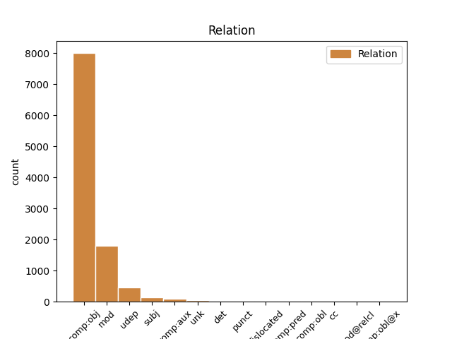
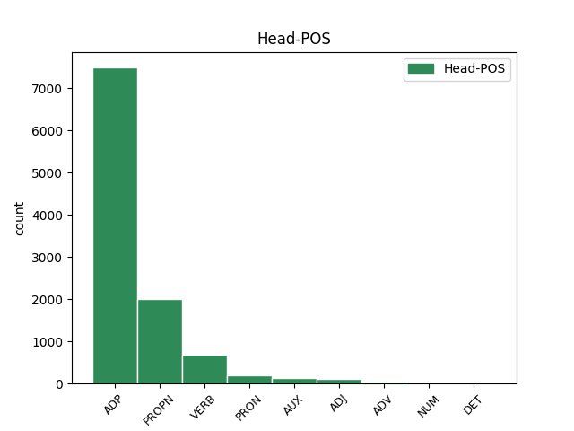
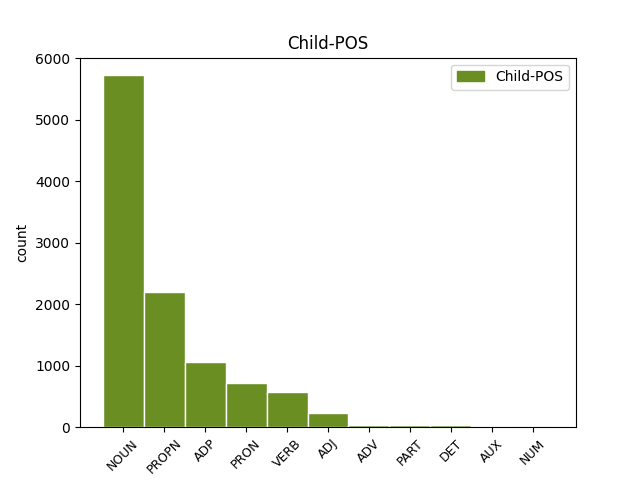

Distribution of features within this leaf



Agreement Rules sorted by frequency.
- When the dependent token is the direct object complements(comp:obj) of the head token, and the head token is ADP and the dependent token is NOUN.
1 ایڈمرل _ _ _ _ 0 _ _ _
2 مولن _ _ _ _ 0 _ _ _
3 نے _ _ _ _ 0 _ _ _
4 امریکہ _ _ _ _ 0 _ _ _
5 کی _ _ _ _ 0 _ _ _
6 جانب _ _ _ _ 0 _ _ _
7 سے _ _ _ _ 0 _ _ _
8 اعتماد اعتماد NOUN NN Case=Acc|Gender=Masc|Number=Sing|Person=3 9 comp:obj _ ChunkId=NP3|ChunkType=head|Tam=0|Vib=0
9 کے کا ADP PSP AdpType=Post|Case=Acc|Gender=Masc|Number=Sing 0 _ _ _
10 فقدان _ _ _ _ 0 _ _ _
11 پر _ _ _ _ 0 _ _ _
12 بات _ _ _ _ 0 _ _ _
13 کرتے _ _ _ _ 0 _ _ _
14 ہوئے _ _ _ _ 0 _ _ _
15 کہا _ _ _ _ 0 _ _ _
16 کہ _ _ _ _ 0 _ _ _
17 آئی _ _ _ _ 0 _ _ _
18 ایس _ _ _ _ 0 _ _ _
19 آئی _ _ _ _ 0 _ _ _
20 کے _ _ _ _ 0 _ _ _
21 بعض _ _ _ _ 0 _ _ _
22 عناصر _ _ _ _ 0 _ _ _
23 حقانی _ _ _ _ 0 _ _ _
24 نیٹورک _ _ _ _ 0 _ _ _
25 کی _ _ _ _ 0 _ _ _
26 مدد _ _ _ _ 0 _ _ _
27 کر _ _ _ _ 0 _ _ _
28 رہے _ _ _ _ 0 _ _ _
29 ہےں _ _ _ _ 0 _ _ _
30 ۔ _ _ _ _ 0 _ _ _
1 ایڈمرل _ _ _ _ 0 _ _ _
2 مولن _ _ _ _ 0 _ _ _
3 نے _ _ _ _ 0 _ _ _
4 امریکہ _ _ _ _ 0 _ _ _
5 کی _ _ _ _ 0 _ _ _
6 جانب _ _ _ _ 0 _ _ _
7 سے _ _ _ _ 0 _ _ _
8 اعتماد _ _ _ _ 0 _ _ _
9 کے _ _ _ _ 0 _ _ _
10 فقدان _ _ _ _ 0 _ _ _
11 پر _ _ _ _ 0 _ _ _
12 بات _ _ _ _ 0 _ _ _
13 کرتے _ _ _ _ 0 _ _ _
14 ہوئے _ _ _ _ 0 _ _ _
15 کہا _ _ _ _ 0 _ _ _
16 کہ _ _ _ _ 0 _ _ _
17 آئی _ _ _ _ 0 _ _ _
18 ایس _ _ _ _ 0 _ _ _
19 آئی _ _ _ _ 0 _ _ _
20 کے _ _ _ _ 0 _ _ _
21 بعض _ _ _ _ 0 _ _ _
22 عناصر _ _ _ _ 0 _ _ _
23 حقانی _ _ _ _ 0 _ _ _
24 نیٹورک نیٹورک PROPN NNP Case=Acc|Gender=Masc|Number=Sing|Person=3 25 comp:obj _ ChunkId=NP8|ChunkType=head|Tam=0|Vib=0
25 کی کا ADP PSP AdpType=Post|Case=Acc|Gender=Fem|Number=Sing 0 _ _ _
26 مدد _ _ _ _ 0 _ _ _
27 کر _ _ _ _ 0 _ _ _
28 رہے _ _ _ _ 0 _ _ _
29 ہےں _ _ _ _ 0 _ _ _
30 ۔ _ _ _ _ 0 _ _ _
1 مسٹر _ _ _ _ 0 _ _ _
2 این _ _ _ _ 0 _ _ _
3 وینکٹیشورلو _ _ _ _ 0 _ _ _
4 سرکل _ _ _ _ 0 _ _ _
5 انسپکٹر انسپکٹر NOUN NN Case=Acc|Gender=Masc|Number=Sing|Person=3 8 mod _ ChunkId=NP|ChunkType=child|Tam=0|Vib=0
6 نظام _ _ _ _ 0 _ _ _
7 آباد _ _ _ _ 0 _ _ _
8 ٹاون ٹاون PROPN NNP Case=Acc|Gender=Masc|Number=Sing|Person=3 0 _ _ _
9 ایس _ _ _ _ 0 _ _ _
10 ایچ _ _ _ _ 0 _ _ _
11 او _ _ _ _ 0 _ _ _
12 اور _ _ _ _ 0 _ _ _
13 سرکل _ _ _ _ 0 _ _ _
14 انسپکٹر _ _ _ _ 0 _ _ _
15 نظام _ _ _ _ 0 _ _ _
16 آباد _ _ _ _ 0 _ _ _
17 رورل _ _ _ _ 0 _ _ _
18 سومناتھم _ _ _ _ 0 _ _ _
19 کو _ _ _ _ 0 _ _ _
20 اسی _ _ _ _ 0 _ _ _
21 طرح _ _ _ _ 0 _ _ _
22 برقرار _ _ _ _ 0 _ _ _
23 رکھا _ _ _ _ 0 _ _ _
24 ۔ _ _ _ _ 0 _ _ _
1 کانگریس _ _ _ _ 0 _ _ _
2 کی _ _ _ _ 0 _ _ _
3 رکن _ _ _ _ 0 _ _ _
4 اسمبلی _ _ _ _ 0 _ _ _
5 نے _ _ _ _ 0 _ _ _
6 ان _ _ _ _ 0 _ _ _
7 کے _ _ _ _ 0 _ _ _
8 شوہر _ _ _ _ 0 _ _ _
9 ایم _ _ _ _ 0 _ _ _
10 ایل _ _ _ _ 0 _ _ _
11 سی _ _ _ _ 0 _ _ _
12 مسٹر _ _ _ _ 0 _ _ _
13 کونڈا _ _ _ _ 0 _ _ _
14 مرلی _ _ _ _ 0 _ _ _
15 کی _ _ _ _ 0 _ _ _
16 سیکوریٹی _ _ _ _ 0 _ _ _
17 گھٹا _ _ _ _ 0 _ _ _
18 دینے _ _ _ _ 0 _ _ _
19 کی _ _ _ _ 0 _ _ _
20 سخت _ _ _ _ 0 _ _ _
21 مذمت _ _ _ _ 0 _ _ _
22 کرتے _ _ _ _ 0 _ _ _
23 ہوئے _ _ _ _ 0 _ _ _
24 کہا _ _ _ _ 0 _ _ _
25 کہ _ _ _ _ 0 _ _ _
26 اگر _ _ _ _ 0 _ _ _
27 ان یہ PRON PRP Case=Acc|Number=Sing|Person=3|Polite=Form|PronType=Prs 28 comp:obj _ ChunkId=NP9|ChunkType=head|Tam=0|Vib=0
28 کے کا ADP PSP AdpType=Post|Case=Acc|Gender=Masc|Number=Sing 0 _ _ _
29 شوہر _ _ _ _ 0 _ _ _
30 کو _ _ _ _ 0 _ _ _
31 کوئی _ _ _ _ 0 _ _ _
32 نقصان _ _ _ _ 0 _ _ _
33 پہونچتا _ _ _ _ 0 _ _ _
34 ہے _ _ _ _ 0 _ _ _
35 تو _ _ _ _ 0 _ _ _
36 اس _ _ _ _ 0 _ _ _
37 کی _ _ _ _ 0 _ _ _
38 ذمہ_داری _ _ _ _ 0 _ _ _
39 صدر _ _ _ _ 0 _ _ _
40 کانگریس _ _ _ _ 0 _ _ _
41 سونیا _ _ _ _ 0 _ _ _
42 گاندھی _ _ _ _ 0 _ _ _
43 کے _ _ _ _ 0 _ _ _
44 ساتھ _ _ _ _ 0 _ _ _
45 ساتھ _ _ _ _ 0 _ _ _
46 ریاستی _ _ _ _ 0 _ _ _
47 حکومت _ _ _ _ 0 _ _ _
48 پر _ _ _ _ 0 _ _ _
49 عائد _ _ _ _ 0 _ _ _
50 ہوگی _ _ _ _ 0 _ _ _
51 ۔ _ _ _ _ 0 _ _ _
1 ایڈمرل _ _ _ _ 0 _ _ _
2 مولن _ _ _ _ 0 _ _ _
3 نے _ _ _ _ 0 _ _ _
4 امریکہ _ _ _ _ 0 _ _ _
5 کی کا ADP PSP AdpType=Post|Case=Acc|Gender=Fem|Number=Sing 6 comp:obj _ ChunkId=NP2|ChunkType=child
6 جانب جانب ADP NST AdpType=Post|Case=Acc|Gender=Masc|Number=Sing|Person=3 0 _ _ _
7 سے _ _ _ _ 0 _ _ _
8 اعتماد _ _ _ _ 0 _ _ _
9 کے _ _ _ _ 0 _ _ _
10 فقدان _ _ _ _ 0 _ _ _
11 پر _ _ _ _ 0 _ _ _
12 بات _ _ _ _ 0 _ _ _
13 کرتے _ _ _ _ 0 _ _ _
14 ہوئے _ _ _ _ 0 _ _ _
15 کہا _ _ _ _ 0 _ _ _
16 کہ _ _ _ _ 0 _ _ _
17 آئی _ _ _ _ 0 _ _ _
18 ایس _ _ _ _ 0 _ _ _
19 آئی _ _ _ _ 0 _ _ _
20 کے _ _ _ _ 0 _ _ _
21 بعض _ _ _ _ 0 _ _ _
22 عناصر _ _ _ _ 0 _ _ _
23 حقانی _ _ _ _ 0 _ _ _
24 نیٹورک _ _ _ _ 0 _ _ _
25 کی _ _ _ _ 0 _ _ _
26 مدد _ _ _ _ 0 _ _ _
27 کر _ _ _ _ 0 _ _ _
28 رہے _ _ _ _ 0 _ _ _
29 ہےں _ _ _ _ 0 _ _ _
30 ۔ _ _ _ _ 0 _ _ _
1 مسٹر _ _ _ _ 0 _ _ _
2 این _ _ _ _ 0 _ _ _
3 وینکٹیشورلو _ _ _ _ 0 _ _ _
4 سرکل _ _ _ _ 0 _ _ _
5 انسپکٹر _ _ _ _ 0 _ _ _
6 نظام _ _ _ _ 0 _ _ _
7 آباد _ _ _ _ 0 _ _ _
8 ٹاون ٹاون PROPN NNP Case=Acc|Gender=Masc|Number=Sing|Person=3 11 mod _ ChunkId=NP|ChunkType=child|Tam=0|Vib=0
9 ایس _ _ _ _ 0 _ _ _
10 ایچ _ _ _ _ 0 _ _ _
11 او او PROPN NNP Case=Acc|Gender=Masc|Number=Sing|Person=3 0 _ _ _
12 اور _ _ _ _ 0 _ _ _
13 سرکل _ _ _ _ 0 _ _ _
14 انسپکٹر _ _ _ _ 0 _ _ _
15 نظام _ _ _ _ 0 _ _ _
16 آباد _ _ _ _ 0 _ _ _
17 رورل _ _ _ _ 0 _ _ _
18 سومناتھم _ _ _ _ 0 _ _ _
19 کو _ _ _ _ 0 _ _ _
20 اسی _ _ _ _ 0 _ _ _
21 طرح _ _ _ _ 0 _ _ _
22 برقرار _ _ _ _ 0 _ _ _
23 رکھا _ _ _ _ 0 _ _ _
24 ۔ _ _ _ _ 0 _ _ _
1 انہوں _ _ _ _ 0 _ _ _
2 نے _ _ _ _ 0 _ _ _
3 کہا _ _ _ _ 0 _ _ _
4 کہ _ _ _ _ 0 _ _ _
5 وزیر _ _ _ _ 0 _ _ _
6 اعظم _ _ _ _ 0 _ _ _
7 نے _ _ _ _ 0 _ _ _
8 دہلی _ _ _ _ 0 _ _ _
9 مےں _ _ _ _ 0 _ _ _
10 ہونے ہو VERB VM Case=Acc|VerbForm=Inf 11 comp:obj _ ChunkId=VGNN|ChunkType=head|Tam=nA|Vib=نا
11 والی والا ADP PSP AdpType=Post|Case=Acc|Gender=Fem|Number=Sing 0 _ _ _
12 ملاقاتوں _ _ _ _ 0 _ _ _
13 مےں _ _ _ _ 0 _ _ _
14 کبھی _ _ _ _ 0 _ _ _
15 بھی _ _ _ _ 0 _ _ _
16 ریاستی _ _ _ _ 0 _ _ _
17 حکومت _ _ _ _ 0 _ _ _
18 کی _ _ _ _ 0 _ _ _
19 عدم_کارکردگی _ _ _ _ 0 _ _ _
20 کی _ _ _ _ 0 _ _ _
21 شکایت _ _ _ _ 0 _ _ _
22 نہیں _ _ _ _ 0 _ _ _
23 کی _ _ _ _ 0 _ _ _
24 تھی _ _ _ _ 0 _ _ _
25 ۔ _ _ _ _ 0 _ _ _
1 وزیر _ _ _ _ 0 _ _ _
2 اعظم _ _ _ _ 0 _ _ _
3 کے _ _ _ _ 0 _ _ _
4 اس _ _ _ _ 0 _ _ _
5 تیقن _ _ _ _ 0 _ _ _
6 پر _ _ _ _ 0 _ _ _
7 کہ _ _ _ _ 0 _ _ _
8 اگر _ _ _ _ 0 _ _ _
9 ریاست _ _ _ _ 0 _ _ _
10 مےں _ _ _ _ 0 _ _ _
11 کانگریس _ _ _ _ 0 _ _ _
12 ۔ _ _ _ _ 0 _ _ _
13 ترنمول _ _ _ _ 0 _ _ _
14 اتحاد _ _ _ _ 0 _ _ _
15 کو _ _ _ _ 0 _ _ _
16 اقتدار _ _ _ _ 0 _ _ _
17 مل _ _ _ _ 0 _ _ _
18 جائے _ _ _ _ 0 _ _ _
19 تو _ _ _ _ 0 _ _ _
20 باوقار باوقار ADJ JJ Case=Acc 21 mod _ ChunkId=NP6|ChunkType=child
21 پریسیڈنسی پریسیڈنسی PROPN NNP Case=Acc|Gender=Masc|Number=Sing|Person=3 0 _ _ _
22 کالج _ _ _ _ 0 _ _ _
23 کو _ _ _ _ 0 _ _ _
24 مزید _ _ _ _ 0 _ _ _
25 بہتر _ _ _ _ 0 _ _ _
26 بنایا _ _ _ _ 0 _ _ _
27 جائیگا _ _ _ _ 0 _ _ _
28 مسٹر _ _ _ _ 0 _ _ _
29 بھٹاچارجی _ _ _ _ 0 _ _ _
30 نے _ _ _ _ 0 _ _ _
31 کہا _ _ _ _ 0 _ _ _
32 کہ _ _ _ _ 0 _ _ _
33 ریاستی _ _ _ _ 0 _ _ _
34 حکومت _ _ _ _ 0 _ _ _
35 نے _ _ _ _ 0 _ _ _
36 اس _ _ _ _ 0 _ _ _
37 کالج _ _ _ _ 0 _ _ _
38 کو _ _ _ _ 0 _ _ _
39 یونیورسٹی _ _ _ _ 0 _ _ _
40 مےں _ _ _ _ 0 _ _ _
41 تبدیل _ _ _ _ 0 _ _ _
42 کر _ _ _ _ 0 _ _ _
43 دیا _ _ _ _ 0 _ _ _
44 ہے _ _ _ _ 0 _ _ _
45 ۔ _ _ _ _ 0 _ _ _
1 آج _ _ _ _ 0 _ _ _
2 اسمبلی _ _ _ _ 0 _ _ _
3 کے کا ADP PSP AdpType=Post|Case=Acc|Gender=Masc|Number=Sing 5 udep _ ChunkId=NP2|ChunkType=child
4 میڈیا _ _ _ _ 0 _ _ _
5 پوائنٹ پوائنٹ PROPN NNP Case=Acc|Gender=Masc|Number=Sing|Person=3 0 _ _ _
6 پر _ _ _ _ 0 _ _ _
7 صحافیوں _ _ _ _ 0 _ _ _
8 سے _ _ _ _ 0 _ _ _
9 بات_چیت _ _ _ _ 0 _ _ _
10 کرتے _ _ _ _ 0 _ _ _
11 ہوئے _ _ _ _ 0 _ _ _
12 مسز _ _ _ _ 0 _ _ _
13 کونڈا _ _ _ _ 0 _ _ _
14 سریکھا _ _ _ _ 0 _ _ _
15 نے _ _ _ _ 0 _ _ _
16 کہا _ _ _ _ 0 _ _ _
17 کہ _ _ _ _ 0 _ _ _
18 جگن _ _ _ _ 0 _ _ _
19 کی _ _ _ _ 0 _ _ _
20 تائید _ _ _ _ 0 _ _ _
21 کرنے _ _ _ _ 0 _ _ _
22 والے _ _ _ _ 0 _ _ _
23 ارکان _ _ _ _ 0 _ _ _
24 اسمبلی _ _ _ _ 0 _ _ _
25 کے _ _ _ _ 0 _ _ _
26 خلاف _ _ _ _ 0 _ _ _
27 کارروائی _ _ _ _ 0 _ _ _
28 کرنے _ _ _ _ 0 _ _ _
29 کا _ _ _ _ 0 _ _ _
30 کانگریس _ _ _ _ 0 _ _ _
31 پارٹی _ _ _ _ 0 _ _ _
32 کو _ _ _ _ 0 _ _ _
33 کوئی _ _ _ _ 0 _ _ _
34 حق _ _ _ _ 0 _ _ _
35 نہیں _ _ _ _ 0 _ _ _
36 ہے _ _ _ _ 0 _ _ _
37 کیوںکہ _ _ _ _ 0 _ _ _
38 کانگریس _ _ _ _ 0 _ _ _
39 کو _ _ _ _ 0 _ _ _
40 تنقید _ _ _ _ 0 _ _ _
41 کا _ _ _ _ 0 _ _ _
42 نشانہ _ _ _ _ 0 _ _ _
43 بنانے _ _ _ _ 0 _ _ _
44 والے _ _ _ _ 0 _ _ _
45 چرنجیوی _ _ _ _ 0 _ _ _
46 کو _ _ _ _ 0 _ _ _
47 کانگریس _ _ _ _ 0 _ _ _
48 گلے _ _ _ _ 0 _ _ _
49 لگا _ _ _ _ 0 _ _ _
50 رہی _ _ _ _ 0 _ _ _
51 ہے _ _ _ _ 0 _ _ _
52 ۔ _ _ _ _ 0 _ _ _
1 مسلمانوں _ _ _ _ 0 _ _ _
2 کو _ _ _ _ 0 _ _ _
3 جو جو PRON PRP Case=Nom|Number=Sing|Person=3|PronType=Prs 0 _ _ _
4 بھی _ _ _ _ 0 _ _ _
5 شکایت شکایت NOUN NN Case=Nom|Gender=Fem|Number=Sing|Person=3 3 comp:obj _ ChunkId=NP2|ChunkType=head|Tam=0|Vib=0
6 ہو _ _ _ _ 0 _ _ _
7 اُسے _ _ _ _ 0 _ _ _
8 دور _ _ _ _ 0 _ _ _
9 کیا _ _ _ _ 0 _ _ _
10 جائےگا _ _ _ _ 0 _ _ _
11 ۔ _ _ _ _ 0 _ _ _
1 وینلشیا _ _ _ _ 0 _ _ _
2 کے _ _ _ _ 0 _ _ _
3 مسٹالا _ _ _ _ 0 _ _ _
4 اسٹیڈیم _ _ _ _ 0 _ _ _
5 مےں _ _ _ _ 0 _ _ _
6 کھیلے _ _ _ _ 0 _ _ _
7 گئے _ _ _ _ 0 _ _ _
8 کنگس _ _ _ _ 0 _ _ _
9 کپ _ _ _ _ 0 _ _ _
10 کے _ _ _ _ 0 _ _ _
11 فائنل _ _ _ _ 0 _ _ _
12 مقابلہ _ _ _ _ 0 _ _ _
13 مےں _ _ _ _ 0 _ _ _
14 عوامی _ _ _ _ 0 _ _ _
15 تجسس _ _ _ _ 0 _ _ _
16 اپنے _ _ _ _ 0 _ _ _
17 عروج _ _ _ _ 0 _ _ _
18 پر _ _ _ _ 0 _ _ _
19 تھا _ _ _ _ 0 _ _ _
20 کیوںکہ _ _ _ _ 0 _ _ _
21 مقررہ _ _ _ _ 0 _ _ _
22 وقت _ _ _ _ 0 _ _ _
23 تک _ _ _ _ 0 _ _ _
24 دونوں _ _ _ _ 0 _ _ _
25 ہی _ _ _ _ 0 _ _ _
26 ٹیمیں _ _ _ _ 0 _ _ _
27 گول گول NOUN NN Case=Acc|Gender=Masc|Number=Sing|Person=3 28 comp:obj _ ChunkId=NP10|ChunkType=head|Tam=0|Vib=0
28 بنانے بنا VERB VM Case=Acc|VerbForm=Inf 0 _ _ _
29 مےں _ _ _ _ 0 _ _ _
30 ناکام _ _ _ _ 0 _ _ _
31 رہیں _ _ _ _ 0 _ _ _
32 ۔ _ _ _ _ 0 _ _ _
1 ورلڈ _ _ _ _ 0 _ _ _
2 کپ _ _ _ _ 0 _ _ _
3 کے _ _ _ _ 0 _ _ _
4 بعد _ _ _ _ 0 _ _ _
5 پاکستانی _ _ _ _ 0 _ _ _
6 ٹیم _ _ _ _ 0 _ _ _
7 مےں _ _ _ _ 0 _ _ _
8 چند _ _ _ _ 0 _ _ _
9 اہم _ _ _ _ 0 _ _ _
10 اور _ _ _ _ 0 _ _ _
11 بڑی _ _ _ _ 0 _ _ _
12 تبدیلیاں _ _ _ _ 0 _ _ _
13 کی _ _ _ _ 0 _ _ _
14 گئی _ _ _ _ 0 _ _ _
15 ہےں _ _ _ _ 0 _ _ _
16 لہذا _ _ _ _ 0 _ _ _
17 کل _ _ _ _ 0 _ _ _
18 یہاں _ _ _ _ 0 _ _ _
19 کھیلے _ _ _ _ 0 _ _ _
20 جانے جا AUX VAUX Case=Acc|VerbForm=Inf 0 _ _ _
21 والے والا ADP PSP AdpType=Post|Case=Acc|Gender=Masc|Number=Plur 20 comp:aux _ ChunkId=VGNN|ChunkType=child
22 ٹور _ _ _ _ 0 _ _ _
23 کے _ _ _ _ 0 _ _ _
24 واحد _ _ _ _ 0 _ _ _
25 ٹوئنٹی _ _ _ _ 0 _ _ _
26 20 _ _ _ _ 0 _ _ _
27 مقابلے _ _ _ _ 0 _ _ _
28 مےں _ _ _ _ 0 _ _ _
29 پاکستان _ _ _ _ 0 _ _ _
30 کو _ _ _ _ 0 _ _ _
31 فاسٹ _ _ _ _ 0 _ _ _
32 بولر _ _ _ _ 0 _ _ _
33 عمر _ _ _ _ 0 _ _ _
34 گل _ _ _ _ 0 _ _ _
35 کی _ _ _ _ 0 _ _ _
36 خدمات _ _ _ _ 0 _ _ _
37 اور _ _ _ _ 0 _ _ _
38 آل_راؤنڈر _ _ _ _ 0 _ _ _
39 عبدالرزاق _ _ _ _ 0 _ _ _
40 بھی _ _ _ _ 0 _ _ _
41 دستیاب _ _ _ _ 0 _ _ _
42 نہیں _ _ _ _ 0 _ _ _
43 ہوںگے _ _ _ _ 0 _ _ _
44 جبکہ _ _ _ _ 0 _ _ _
45 وکٹ _ _ _ _ 0 _ _ _
46 کیپنگ _ _ _ _ 0 _ _ _
47 کی _ _ _ _ 0 _ _ _
48 ذمہ_داری _ _ _ _ 0 _ _ _
49 محمد _ _ _ _ 0 _ _ _
50 سلمان _ _ _ _ 0 _ _ _
51 نبھا _ _ _ _ 0 _ _ _
52 رہے _ _ _ _ 0 _ _ _
53 ہیں _ _ _ _ 0 _ _ _
54 ۔ _ _ _ _ 0 _ _ _
1 متواتر _ _ _ _ 0 _ _ _
2 4 _ _ _ _ 0 _ _ _
3 خطابات _ _ _ _ 0 _ _ _
4 حاصل _ _ _ _ 0 _ _ _
5 کر _ _ _ _ 0 _ _ _
6 چکے _ _ _ _ 0 _ _ _
7 نڈال _ _ _ _ 0 _ _ _
8 2005 _ _ _ _ 0 _ _ _
9 ء _ _ _ _ 0 _ _ _
10 سے _ _ _ _ 0 _ _ _
11 کلے کلے PROPN NNPC Case=Nom|Gender=Masc|Number=Sing|Person=3 0 _ _ _
12 کورٹ کورٹ PROPN NNPC Case=Nom|Gender=Masc|Number=Sing|Person=3 11 comp:obj _ ChunkId=NP4|ChunkType=head|Tam=0|Vib=0
13 پر _ _ _ _ 0 _ _ _
14 کھیلے _ _ _ _ 0 _ _ _
15 گئے _ _ _ _ 0 _ _ _
16 27 _ _ _ _ 0 _ _ _
17 فائنل _ _ _ _ 0 _ _ _
18 مقابلوں _ _ _ _ 0 _ _ _
19 میں _ _ _ _ 0 _ _ _
20 جہاں _ _ _ _ 0 _ _ _
21 25 _ _ _ _ 0 _ _ _
22 فتوحات _ _ _ _ 0 _ _ _
23 حاصل _ _ _ _ 0 _ _ _
24 کی _ _ _ _ 0 _ _ _
25 ہیں _ _ _ _ 0 _ _ _
26 وہیں _ _ _ _ 0 _ _ _
27 صرف _ _ _ _ 0 _ _ _
28 2 _ _ _ _ 0 _ _ _
29 مرتبہ _ _ _ _ 0 _ _ _
30 انہیں _ _ _ _ 0 _ _ _
31 راجر _ _ _ _ 0 _ _ _
32 فیڈرر _ _ _ _ 0 _ _ _
33 کے _ _ _ _ 0 _ _ _
34 خلاف _ _ _ _ 0 _ _ _
35 شکست _ _ _ _ 0 _ _ _
36 برداشت _ _ _ _ 0 _ _ _
37 کرنی _ _ _ _ 0 _ _ _
38 پڑی _ _ _ _ 0 _ _ _
39 ہے _ _ _ _ 0 _ _ _
40 ۔ _ _ _ _ 0 _ _ _
1 کریم _ _ _ _ 0 _ _ _
2 نگر _ _ _ _ 0 _ _ _
3 مےں _ _ _ _ 0 _ _ _
4 قبرستان _ _ _ _ 0 _ _ _
5 اور _ _ _ _ 0 _ _ _
6 عیدگاہ _ _ _ _ 0 _ _ _
7 کے _ _ _ _ 0 _ _ _
8 لیے _ _ _ _ 0 _ _ _
9 قبل قبل ADP NST AdpType=Post|Case=Nom|Gender=Masc|Number=Sing|Person=3 26 udep _ AltTag=ADP-NOUN|ChunkId=NP4|ChunkType=child
10 ازیں _ _ _ _ 0 _ _ _
11 وائی _ _ _ _ 0 _ _ _
12 ایس _ _ _ _ 0 _ _ _
13 راج _ _ _ _ 0 _ _ _
14 شیکھر _ _ _ _ 0 _ _ _
15 ریڈی _ _ _ _ 0 _ _ _
16 کے _ _ _ _ 0 _ _ _
17 اعلان _ _ _ _ 0 _ _ _
18 کے _ _ _ _ 0 _ _ _
19 مطابق _ _ _ _ 0 _ _ _
20 25 _ _ _ _ 0 _ _ _
21 اور _ _ _ _ 0 _ _ _
22 20 _ _ _ _ 0 _ _ _
23 ایکر _ _ _ _ 0 _ _ _
24 اراضی _ _ _ _ 0 _ _ _
25 مختص _ _ _ _ 0 _ _ _
26 کرنے کر VERB VM Case=Nom|VerbForm=Inf 0 _ _ _
27 , _ _ _ _ 0 _ _ _
28 نامزد _ _ _ _ 0 _ _ _
29 عہدوں _ _ _ _ 0 _ _ _
30 پر _ _ _ _ 0 _ _ _
31 20 _ _ _ _ 0 _ _ _
32 فیصد _ _ _ _ 0 _ _ _
33 یا _ _ _ _ 0 _ _ _
34 پھر _ _ _ _ 0 _ _ _
35 آبادی _ _ _ _ 0 _ _ _
36 کے _ _ _ _ 0 _ _ _
37 لحاظ _ _ _ _ 0 _ _ _
38 سے _ _ _ _ 0 _ _ _
39 تقررات _ _ _ _ 0 _ _ _
40 , _ _ _ _ 0 _ _ _
41 وقف _ _ _ _ 0 _ _ _
42 کی _ _ _ _ 0 _ _ _
43 جائیدادوں _ _ _ _ 0 _ _ _
44 , _ _ _ _ 0 _ _ _
45 ناجائز _ _ _ _ 0 _ _ _
46 قبضوں _ _ _ _ 0 _ _ _
47 کی _ _ _ _ 0 _ _ _
48 برخاستگی _ _ _ _ 0 _ _ _
49 اور _ _ _ _ 0 _ _ _
50 منشائے _ _ _ _ 0 _ _ _
51 وقف _ _ _ _ 0 _ _ _
52 کے _ _ _ _ 0 _ _ _
53 مطابق _ _ _ _ 0 _ _ _
54 عمل_آوری _ _ _ _ 0 _ _ _
55 , _ _ _ _ 0 _ _ _
56 کریم _ _ _ _ 0 _ _ _
57 نگر _ _ _ _ 0 _ _ _
58 مےں _ _ _ _ 0 _ _ _
59 اردو _ _ _ _ 0 _ _ _
60 سرکاری _ _ _ _ 0 _ _ _
61 زبان _ _ _ _ 0 _ _ _
62 پر _ _ _ _ 0 _ _ _
63 مؤثر _ _ _ _ 0 _ _ _
64 عمل_آوری _ _ _ _ 0 _ _ _
65 , _ _ _ _ 0 _ _ _
66 کم _ _ _ _ 0 _ _ _
67 از _ _ _ _ 0 _ _ _
68 کم _ _ _ _ 0 _ _ _
69 دو _ _ _ _ 0 _ _ _
70 مترجمین _ _ _ _ 0 _ _ _
71 کی _ _ _ _ 0 _ _ _
72 تقرری _ _ _ _ 0 _ _ _
73 اور _ _ _ _ 0 _ _ _
74 علیحدہ _ _ _ _ 0 _ _ _
75 اقلیتی _ _ _ _ 0 _ _ _
76 اُمور _ _ _ _ 0 _ _ _
77 کے _ _ _ _ 0 _ _ _
78 لیے _ _ _ _ 0 _ _ _
79 اےک _ _ _ _ 0 _ _ _
80 اسپیشل _ _ _ _ 0 _ _ _
81 آفیسر _ _ _ _ 0 _ _ _
82 کی _ _ _ _ 0 _ _ _
83 تقرری _ _ _ _ 0 _ _ _
84 کا _ _ _ _ 0 _ _ _
85 مطالبہ _ _ _ _ 0 _ _ _
86 کیا _ _ _ _ 0 _ _ _
87 گیا _ _ _ _ 0 _ _ _
88 ۔ _ _ _ _ 0 _ _ _
1 پدا _ _ _ _ 0 _ _ _
2 راجیشور _ _ _ _ 0 _ _ _
3 عرف _ _ _ _ 0 _ _ _
4 راجو راجو NOUN NN Case=Nom|Gender=Masc|Number=Sing|Person=3 14 mod _ ChunkId=NP2|ChunkType=head|Tam=0|Vib=0
5 جو _ _ _ _ 0 _ _ _
6 اس _ _ _ _ 0 _ _ _
7 وقت _ _ _ _ 0 _ _ _
8 پولس _ _ _ _ 0 _ _ _
9 کی _ _ _ _ 0 _ _ _
10 حراست _ _ _ _ 0 _ _ _
11 میں _ _ _ _ 0 _ _ _
12 ہے _ _ _ _ 0 _ _ _
13 ، _ _ _ _ 0 _ _ _
14 اس یہ PRON PRP Case=Nom|Number=Sing|Person=3|PronType=Prs 0 _ _ _
15 کے _ _ _ _ 0 _ _ _
16 بیان _ _ _ _ 0 _ _ _
17 کے _ _ _ _ 0 _ _ _
18 مطابق _ _ _ _ 0 _ _ _
19 اصل _ _ _ _ 0 _ _ _
20 ملزم _ _ _ _ 0 _ _ _
21 سائیلو _ _ _ _ 0 _ _ _
22 جو _ _ _ _ 0 _ _ _
23 اس _ _ _ _ 0 _ _ _
24 وقت _ _ _ _ 0 _ _ _
25 دبئی _ _ _ _ 0 _ _ _
26 میں _ _ _ _ 0 _ _ _
27 مقیم _ _ _ _ 0 _ _ _
28 ہے _ _ _ _ 0 _ _ _
29 ، _ _ _ _ 0 _ _ _
30 وہاں _ _ _ _ 0 _ _ _
31 سے _ _ _ _ 0 _ _ _
32 نقلی _ _ _ _ 0 _ _ _
33 نوٹوں _ _ _ _ 0 _ _ _
34 کا _ _ _ _ 0 _ _ _
35 کاروبار _ _ _ _ 0 _ _ _
36 چلا _ _ _ _ 0 _ _ _
37 رہا _ _ _ _ 0 _ _ _
38 ہے _ _ _ _ 0 _ _ _
39 - _ _ _ _ 0 _ _ _
1 پدا پدا PROPN NNPC Case=Nom|Gender=Masc|Number=Sing|Person=3 2 punct _ ChunkId=NP|ChunkType=child|Tam=0|Vib=0
2 راجیشور راجیشور PROPN NNPC Case=Nom|Gender=Masc|Number=Sing|Person=3 0 _ _ _
3 عرف _ _ _ _ 0 _ _ _
4 راجو _ _ _ _ 0 _ _ _
5 جو _ _ _ _ 0 _ _ _
6 اس _ _ _ _ 0 _ _ _
7 وقت _ _ _ _ 0 _ _ _
8 پولس _ _ _ _ 0 _ _ _
9 کی _ _ _ _ 0 _ _ _
10 حراست _ _ _ _ 0 _ _ _
11 میں _ _ _ _ 0 _ _ _
12 ہے _ _ _ _ 0 _ _ _
13 ، _ _ _ _ 0 _ _ _
14 اس _ _ _ _ 0 _ _ _
15 کے _ _ _ _ 0 _ _ _
16 بیان _ _ _ _ 0 _ _ _
17 کے _ _ _ _ 0 _ _ _
18 مطابق _ _ _ _ 0 _ _ _
19 اصل _ _ _ _ 0 _ _ _
20 ملزم _ _ _ _ 0 _ _ _
21 سائیلو _ _ _ _ 0 _ _ _
22 جو _ _ _ _ 0 _ _ _
23 اس _ _ _ _ 0 _ _ _
24 وقت _ _ _ _ 0 _ _ _
25 دبئی _ _ _ _ 0 _ _ _
26 میں _ _ _ _ 0 _ _ _
27 مقیم _ _ _ _ 0 _ _ _
28 ہے _ _ _ _ 0 _ _ _
29 ، _ _ _ _ 0 _ _ _
30 وہاں _ _ _ _ 0 _ _ _
31 سے _ _ _ _ 0 _ _ _
32 نقلی _ _ _ _ 0 _ _ _
33 نوٹوں _ _ _ _ 0 _ _ _
34 کا _ _ _ _ 0 _ _ _
35 کاروبار _ _ _ _ 0 _ _ _
36 چلا _ _ _ _ 0 _ _ _
37 رہا _ _ _ _ 0 _ _ _
38 ہے _ _ _ _ 0 _ _ _
39 - _ _ _ _ 0 _ _ _
1 چینائی _ _ _ _ 0 _ _ _
2 کے _ _ _ _ 0 _ _ _
3 لیے _ _ _ _ 0 _ _ _
4 ٹیم _ _ _ _ 0 _ _ _
5 کے _ _ _ _ 0 _ _ _
6 ٹاپ ٹاپ ADJ JJC Case=Nom 0 _ _ _
7 آرڈر آرڈر ADJ JJ Case=Nom 6 comp:obj _ ChunkId=NP3|ChunkType=child
8 بیٹسمین _ _ _ _ 0 _ _ _
9 بہترین _ _ _ _ 0 _ _ _
10 مظاہرہ _ _ _ _ 0 _ _ _
11 کر _ _ _ _ 0 _ _ _
12 رہے _ _ _ _ 0 _ _ _
13 ہیں _ _ _ _ 0 _ _ _
14 ۔ _ _ _ _ 0 _ _ _
1 صحت_مند _ _ _ _ 0 _ _ _
2 رہنے _ _ _ _ 0 _ _ _
3 کے _ _ _ _ 0 _ _ _
4 لیے _ _ _ _ 0 _ _ _
5 ماحول _ _ _ _ 0 _ _ _
6 صاف _ _ _ _ 0 _ _ _
7 ستھرا _ _ _ _ 0 _ _ _
8 رہنا _ _ _ _ 0 _ _ _
9 بھی _ _ _ _ 0 _ _ _
10 اتنا _ _ _ _ 0 _ _ _
11 ہی _ _ _ _ 0 _ _ _
12 ضروری _ _ _ _ 0 _ _ _
13 ہے _ _ _ _ 0 _ _ _
14 جتنا _ _ _ _ 0 _ _ _
15 کہ _ _ _ _ 0 _ _ _
16 پانی _ _ _ _ 0 _ _ _
17 اور _ _ _ _ 0 _ _ _
18 ہوا _ _ _ _ 0 _ _ _
19 کا کا ADP PSP AdpType=Post|Case=Nom|Gender=Masc|Number=Sing 21 subj _ ChunkId=NP3|ChunkType=child
20 پاک _ _ _ _ 0 _ _ _
21 رہنا رہ VERB VM Case=Nom|VerbForm=Inf 0 _ _ _
22 اہم _ _ _ _ 0 _ _ _
23 ہے _ _ _ _ 0 _ _ _
24 ۔ _ _ _ _ 0 _ _ _
1 جناب _ _ _ _ 0 _ _ _
2 محمد _ _ _ _ 0 _ _ _
3 نعیم _ _ _ _ 0 _ _ _
4 الدین _ _ _ _ 0 _ _ _
5 خادم _ _ _ _ 0 _ _ _
6 جماعت _ _ _ _ 0 _ _ _
7 اصلاح _ _ _ _ 0 _ _ _
8 معاشرہ _ _ _ _ 0 _ _ _
9 ازالہ _ _ _ _ 0 _ _ _
10 منکرات _ _ _ _ 0 _ _ _
11 کے _ _ _ _ 0 _ _ _
12 اجتماع اجتماع NOUN NN Case=Nom|Gender=Masc|Number=Sing|Person=3 13 udep _ ChunkId=NP2|ChunkType=head|Tam=0|Vib=0
13 منعقدہ منعقدہ ADJ JJ Case=Nom 0 _ _ _
14 مسجد _ _ _ _ 0 _ _ _
15 عرفات _ _ _ _ 0 _ _ _
16 احمدپورہ _ _ _ _ 0 _ _ _
17 کالونی _ _ _ _ 0 _ _ _
18 نظام _ _ _ _ 0 _ _ _
19 آباد _ _ _ _ 0 _ _ _
20 سے _ _ _ _ 0 _ _ _
21 مخاطب _ _ _ _ 0 _ _ _
22 کیا _ _ _ _ 0 _ _ _
23 کہ _ _ _ _ 0 _ _ _
24 حالیہ _ _ _ _ 0 _ _ _
25 زمانہ _ _ _ _ 0 _ _ _
26 مےں _ _ _ _ 0 _ _ _
27 معاشرتی _ _ _ _ 0 _ _ _
28 بگاڑ _ _ _ _ 0 _ _ _
29 نے _ _ _ _ 0 _ _ _
30 کئی _ _ _ _ 0 _ _ _
31 برائیوں _ _ _ _ 0 _ _ _
32 کو _ _ _ _ 0 _ _ _
33 جنم _ _ _ _ 0 _ _ _
34 دیا _ _ _ _ 0 _ _ _
35 ہے _ _ _ _ 0 _ _ _
36 ۔ _ _ _ _ 0 _ _ _
1 مسٹر _ _ _ _ 0 _ _ _
2 این این PROPN NNPC Case=Nom|Gender=Masc|Number=Sing|Person=3 0 _ _ _
3 وینکٹیشورلو وینکٹیشورلو PROPN NNPC Case=Nom|Gender=Masc|Number=Sing|Person=3 2 unk _ ChunkId=NP|ChunkType=child|Tam=0|Vib=0
4 سرکل _ _ _ _ 0 _ _ _
5 انسپکٹر _ _ _ _ 0 _ _ _
6 نظام _ _ _ _ 0 _ _ _
7 آباد _ _ _ _ 0 _ _ _
8 ٹاون _ _ _ _ 0 _ _ _
9 ایس _ _ _ _ 0 _ _ _
10 ایچ _ _ _ _ 0 _ _ _
11 او _ _ _ _ 0 _ _ _
12 اور _ _ _ _ 0 _ _ _
13 سرکل _ _ _ _ 0 _ _ _
14 انسپکٹر _ _ _ _ 0 _ _ _
15 نظام _ _ _ _ 0 _ _ _
16 آباد _ _ _ _ 0 _ _ _
17 رورل _ _ _ _ 0 _ _ _
18 سومناتھم _ _ _ _ 0 _ _ _
19 کو _ _ _ _ 0 _ _ _
20 اسی _ _ _ _ 0 _ _ _
21 طرح _ _ _ _ 0 _ _ _
22 برقرار _ _ _ _ 0 _ _ _
23 رکھا _ _ _ _ 0 _ _ _
24 ۔ _ _ _ _ 0 _ _ _
1 ضلع _ _ _ _ 0 _ _ _
2 نظام _ _ _ _ 0 _ _ _
3 آباد _ _ _ _ 0 _ _ _
4 سے _ _ _ _ 0 _ _ _
5 منتخب _ _ _ _ 0 _ _ _
6 ہونے _ _ _ _ 0 _ _ _
7 والے والا ADP PSP AdpType=Post|Case=Acc|Gender=Masc|Number=Plur 15 mod _ ChunkId=VGNN|ChunkType=child
8 کانگریس _ _ _ _ 0 _ _ _
9 کے _ _ _ _ 0 _ _ _
10 واحد _ _ _ _ 0 _ _ _
11 رکن _ _ _ _ 0 _ _ _
12 اسمبلی _ _ _ _ 0 _ _ _
13 مسٹر _ _ _ _ 0 _ _ _
14 سدرشن _ _ _ _ 0 _ _ _
15 ریڈی ریڈی PROPN NNP Case=Acc|Gender=Masc|Number=Sing|Person=3 0 _ _ _
16 کا _ _ _ _ 0 _ _ _
17 نام _ _ _ _ 0 _ _ _
18 زیر _ _ _ _ 0 _ _ _
19 غور _ _ _ _ 0 _ _ _
20 ہے _ _ _ _ 0 _ _ _
21 - _ _ _ _ 0 _ _ _
1 شاید _ _ _ _ 0 _ _ _
2 چھوٹی _ _ _ _ 0 _ _ _
3 عمر _ _ _ _ 0 _ _ _
4 مےں _ _ _ _ 0 _ _ _
5 شریکِ _ _ _ _ 0 _ _ _
6 حیات _ _ _ _ 0 _ _ _
7 کا _ _ _ _ 0 _ _ _
8 ساتھ _ _ _ _ 0 _ _ _
9 چھوٹ _ _ _ _ 0 _ _ _
10 جانے _ _ _ _ 0 _ _ _
11 کے _ _ _ _ 0 _ _ _
12 بعد _ _ _ _ 0 _ _ _
13 سماج _ _ _ _ 0 _ _ _
14 کی کا ADP PSP AdpType=Post|Case=Nom|Gender=Fem|Number=Sing 15 udep _ ChunkId=NP4|ChunkType=child
15 عائدکردہ عائدکردہ ADJ JJ Case=Nom 0 _ _ _
16 ناحق _ _ _ _ 0 _ _ _
17 پابندیوں _ _ _ _ 0 _ _ _
18 نے _ _ _ _ 0 _ _ _
19 انہیں _ _ _ _ 0 _ _ _
20 اس _ _ _ _ 0 _ _ _
21 طرح _ _ _ _ 0 _ _ _
22 کی _ _ _ _ 0 _ _ _
23 سوچ _ _ _ _ 0 _ _ _
24 کا _ _ _ _ 0 _ _ _
25 حامل _ _ _ _ 0 _ _ _
26 بنا _ _ _ _ 0 _ _ _
27 دیا _ _ _ _ 0 _ _ _
28 تھا _ _ _ _ 0 _ _ _
29 اور _ _ _ _ 0 _ _ _
30 پھر _ _ _ _ 0 _ _ _
31 یہ _ _ _ _ 0 _ _ _
32 سوچ _ _ _ _ 0 _ _ _
33 گویا _ _ _ _ 0 _ _ _
34 ان _ _ _ _ 0 _ _ _
35 کی _ _ _ _ 0 _ _ _
36 فطرت _ _ _ _ 0 _ _ _
37 کا _ _ _ _ 0 _ _ _
38 اےک _ _ _ _ 0 _ _ _
39 حصہ _ _ _ _ 0 _ _ _
40 بن _ _ _ _ 0 _ _ _
41 گئی _ _ _ _ 0 _ _ _
42 ۔ _ _ _ _ 0 _ _ _
1 اٹاپٹو _ _ _ _ 0 _ _ _
2 دور دور NOUN NN Case=Acc|Gender=Masc|Number=Sing|Person=3 7 udep _ ChunkId=NP2|ChunkType=head|Tam=0|Vib=0
3 انگلینڈ _ _ _ _ 0 _ _ _
4 کے _ _ _ _ 0 _ _ _
5 لیے _ _ _ _ 0 _ _ _
6 منعقد _ _ _ _ 0 _ _ _
7 ہونے ہو VERB VM Case=Acc|VerbForm=Inf 0 _ _ _
8 والے _ _ _ _ 0 _ _ _
9 تربیتی _ _ _ _ 0 _ _ _
10 کیمپ _ _ _ _ 0 _ _ _
11 مےں _ _ _ _ 0 _ _ _
12 عبوری _ _ _ _ 0 _ _ _
13 کوچس _ _ _ _ 0 _ _ _
14 اسٹیورٹ _ _ _ _ 0 _ _ _
15 لای _ _ _ _ 0 _ _ _
16 , _ _ _ _ 0 _ _ _
17 چمپاکارا _ _ _ _ 0 _ _ _
18 منائیکے _ _ _ _ 0 _ _ _
19 اور _ _ _ _ 0 _ _ _
20 رووان _ _ _ _ 0 _ _ _
21 کلپگے _ _ _ _ 0 _ _ _
22 کے _ _ _ _ 0 _ _ _
23 ساتھ _ _ _ _ 0 _ _ _
24 ٹیم _ _ _ _ 0 _ _ _
25 مےں _ _ _ _ 0 _ _ _
26 شمولیت _ _ _ _ 0 _ _ _
27 کریںگے _ _ _ _ 0 _ _ _
28 ۔ _ _ _ _ 0 _ _ _
1 ان _ _ _ _ 0 _ _ _
2 سے _ _ _ _ 0 _ _ _
3 سوال _ _ _ _ 0 _ _ _
4 کیا _ _ _ _ 0 _ _ _
5 گیا _ _ _ _ 0 _ _ _
6 تھا _ _ _ _ 0 _ _ _
7 کہ _ _ _ _ 0 _ _ _
8 آیا _ _ _ _ 0 _ _ _
9 پاکستان _ _ _ _ 0 _ _ _
10 کی _ _ _ _ 0 _ _ _
11 وادی _ _ _ _ 0 _ _ _
12 سوات _ _ _ _ 0 _ _ _
13 میں _ _ _ _ 0 _ _ _
14 امریکہ _ _ _ _ 0 _ _ _
15 کی _ _ _ _ 0 _ _ _
16 جانب _ _ _ _ 0 _ _ _
17 سے _ _ _ _ 0 _ _ _
18 کسی کوئی PRON PRP Case=Acc|Number=Sing|Person=3|PronType=Prs 0 _ _ _
19 طرح _ _ _ _ 0 _ _ _
20 کی کا ADP PSP AdpType=Post|Case=Acc|Gender=Fem|Number=Sing 18 comp:obj _ ChunkId=NP6|ChunkType=child
21 انسانی _ _ _ _ 0 _ _ _
22 امداد _ _ _ _ 0 _ _ _
23 کی _ _ _ _ 0 _ _ _
24 تقسیم _ _ _ _ 0 _ _ _
25 عمل _ _ _ _ 0 _ _ _
26 میں _ _ _ _ 0 _ _ _
27 لائی _ _ _ _ 0 _ _ _
28 جا _ _ _ _ 0 _ _ _
29 رہی _ _ _ _ 0 _ _ _
30 ہے _ _ _ _ 0 _ _ _
31 ۔ _ _ _ _ 0 _ _ _
1 اردو _ _ _ _ 0 _ _ _
2 قومی _ _ _ _ 0 _ _ _
3 زبان _ _ _ _ 0 _ _ _
4 ہے _ _ _ _ 0 _ _ _
5 اور _ _ _ _ 0 _ _ _
6 سارے سارا DET QF Case=Acc|Gender=Masc|Number=Plur 7 det _ ChunkId=NP3|ChunkType=child
7 ہندوستان ہندوستان PROPN NNP Case=Acc|Gender=Masc|Number=Sing|Person=3 0 _ _ _
8 کی _ _ _ _ 0 _ _ _
9 زبان _ _ _ _ 0 _ _ _
10 ہے _ _ _ _ 0 _ _ _
11 اور _ _ _ _ 0 _ _ _
12 ہندوستان _ _ _ _ 0 _ _ _
13 کی _ _ _ _ 0 _ _ _
14 26 _ _ _ _ 0 _ _ _
15 ریاستوں _ _ _ _ 0 _ _ _
16 مےں _ _ _ _ 0 _ _ _
17 بولی _ _ _ _ 0 _ _ _
18 جانے _ _ _ _ 0 _ _ _
19 والی _ _ _ _ 0 _ _ _
20 زبان _ _ _ _ 0 _ _ _
21 ہے _ _ _ _ 0 _ _ _
22 ۔ _ _ _ _ 0 _ _ _
1 اس یہ PRON PRP Case=Acc|Number=Sing|Person=3|PronType=Prs 2 mod _ ChunkId=NP|ChunkType=head|Tam=0|Vib=0
2 بل بل PROPN NNP Case=Acc|Gender=Masc|Number=Sing|Person=3 0 _ _ _
3 میں _ _ _ _ 0 _ _ _
4 اس _ _ _ _ 0 _ _ _
5 بات _ _ _ _ 0 _ _ _
6 کا _ _ _ _ 0 _ _ _
7 بھی _ _ _ _ 0 _ _ _
8 اختیار _ _ _ _ 0 _ _ _
9 دیا _ _ _ _ 0 _ _ _
10 گیا _ _ _ _ 0 _ _ _
11 ہے _ _ _ _ 0 _ _ _
12 کہ _ _ _ _ 0 _ _ _
13 پاکستان _ _ _ _ 0 _ _ _
14 کو _ _ _ _ 0 _ _ _
15 القاعدہ _ _ _ _ 0 _ _ _
16 کو _ _ _ _ 0 _ _ _
17 شکست _ _ _ _ 0 _ _ _
18 دینے _ _ _ _ 0 _ _ _
19 اور _ _ _ _ 0 _ _ _
20 تخریب_کار _ _ _ _ 0 _ _ _
21 عناصر _ _ _ _ 0 _ _ _
22 سے _ _ _ _ 0 _ _ _
23 نمٹنے _ _ _ _ 0 _ _ _
24 کے _ _ _ _ 0 _ _ _
25 لیے _ _ _ _ 0 _ _ _
26 فوجی _ _ _ _ 0 _ _ _
27 امداد _ _ _ _ 0 _ _ _
28 بھی _ _ _ _ 0 _ _ _
29 فراہم _ _ _ _ 0 _ _ _
30 کی _ _ _ _ 0 _ _ _
31 جائے _ _ _ _ 0 _ _ _
32 اور _ _ _ _ 0 _ _ _
33 اس _ _ _ _ 0 _ _ _
34 امداد _ _ _ _ 0 _ _ _
35 کا _ _ _ _ 0 _ _ _
36 بیشتر _ _ _ _ 0 _ _ _
37 حصہ _ _ _ _ 0 _ _ _
38 تخریب_کاری _ _ _ _ 0 _ _ _
39 سے _ _ _ _ 0 _ _ _
40 نمٹنے _ _ _ _ 0 _ _ _
41 اور _ _ _ _ 0 _ _ _
42 دہشت_گردی _ _ _ _ 0 _ _ _
43 کے _ _ _ _ 0 _ _ _
44 خاتمہ _ _ _ _ 0 _ _ _
45 پر _ _ _ _ 0 _ _ _
46 صرف _ _ _ _ 0 _ _ _
47 کی _ _ _ _ 0 _ _ _
48 جائے _ _ _ _ 0 _ _ _
49 ۔ _ _ _ _ 0 _ _ _
1 اسی یہ DET DEM Case=Nom|Number=Sing|Person=3|PronType=Dem 2 det _ ChunkId=NP|ChunkType=child
2 دوران دوران ADV NST Case=Nom|Gender=Masc|Number=Sing|Person=3 0 _ _ _
3 کابینہ _ _ _ _ 0 _ _ _
4 میں _ _ _ _ 0 _ _ _
5 توسیع _ _ _ _ 0 _ _ _
6 کے _ _ _ _ 0 _ _ _
7 سلسلہ _ _ _ _ 0 _ _ _
8 میں _ _ _ _ 0 _ _ _
9 چیف _ _ _ _ 0 _ _ _
10 منسٹر _ _ _ _ 0 _ _ _
11 راج _ _ _ _ 0 _ _ _
12 شیکھر _ _ _ _ 0 _ _ _
13 ریڈی _ _ _ _ 0 _ _ _
14 اور _ _ _ _ 0 _ _ _
15 ان _ _ _ _ 0 _ _ _
16 کے _ _ _ _ 0 _ _ _
17 کیمپ _ _ _ _ 0 _ _ _
18 کی _ _ _ _ 0 _ _ _
19 سرگرمیوں _ _ _ _ 0 _ _ _
20 میں _ _ _ _ 0 _ _ _
21 اضافہ _ _ _ _ 0 _ _ _
22 ہو _ _ _ _ 0 _ _ _
23 چکا _ _ _ _ 0 _ _ _
24 ہے _ _ _ _ 0 _ _ _
25 تو _ _ _ _ 0 _ _ _
26 دوسری _ _ _ _ 0 _ _ _
27 طرف _ _ _ _ 0 _ _ _
28 کابینہ _ _ _ _ 0 _ _ _
29 میں _ _ _ _ 0 _ _ _
30 شمولیت _ _ _ _ 0 _ _ _
31 کے _ _ _ _ 0 _ _ _
32 خواہشمند _ _ _ _ 0 _ _ _
33 ارکان _ _ _ _ 0 _ _ _
34 اسمبلی _ _ _ _ 0 _ _ _
35 کی _ _ _ _ 0 _ _ _
36 سرگرمیوں _ _ _ _ 0 _ _ _
37 میں _ _ _ _ 0 _ _ _
38 شدت _ _ _ _ 0 _ _ _
39 پیدا _ _ _ _ 0 _ _ _
40 ہو _ _ _ _ 0 _ _ _
41 چکی _ _ _ _ 0 _ _ _
42 ہے _ _ _ _ 0 _ _ _
43 ۔ _ _ _ _ 0 _ _ _
1 کریم _ _ _ _ 0 _ _ _
2 نگر _ _ _ _ 0 _ _ _
3 مےں _ _ _ _ 0 _ _ _
4 وقف _ _ _ _ 0 _ _ _
5 جائیدادوں _ _ _ _ 0 _ _ _
6 کی کا ADP PSP AdpType=Post|Case=Nom|Gender=Fem|Number=Sing 7 udep _ ChunkId=NP2|ChunkType=child
7 جو جو PRON PRP Case=Nom|Number=Sing|Person=3|PronType=Prs 0 _ _ _
8 بھی _ _ _ _ 0 _ _ _
9 آمدنی _ _ _ _ 0 _ _ _
10 ہے _ _ _ _ 0 _ _ _
11 اُسے _ _ _ _ 0 _ _ _
12 منصوبہ_بند _ _ _ _ 0 _ _ _
13 طریقہ _ _ _ _ 0 _ _ _
14 سے _ _ _ _ 0 _ _ _
15 ضلع _ _ _ _ 0 _ _ _
16 کے _ _ _ _ 0 _ _ _
17 مسلمانوں _ _ _ _ 0 _ _ _
18 کے _ _ _ _ 0 _ _ _
19 بہبودی _ _ _ _ 0 _ _ _
20 پروگراموں _ _ _ _ 0 _ _ _
21 پر _ _ _ _ 0 _ _ _
22 خرچ _ _ _ _ 0 _ _ _
23 کرنے _ _ _ _ 0 _ _ _
24 کے _ _ _ _ 0 _ _ _
25 لیے _ _ _ _ 0 _ _ _
26 منتقل _ _ _ _ 0 _ _ _
27 کر _ _ _ _ 0 _ _ _
28 دی _ _ _ _ 0 _ _ _
29 جائےگی _ _ _ _ 0 _ _ _
30 ۔ _ _ _ _ 0 _ _ _
1 دوسری دوسرا ADJ QO Case=Nom|Gender=Fem|NumType=Ord 2 mod _ ChunkId=NP|ChunkType=child
2 جانب جانب ADV NST AdpType=Post|Case=Nom|Gender=Masc|Number=Sing|Person=3 0 _ _ _
3 دخانی _ _ _ _ 0 _ _ _
4 جہازوں _ _ _ _ 0 _ _ _
5 ( _ _ _ _ 0 _ _ _
6 اسٹیم _ _ _ _ 0 _ _ _
7 بوٹ _ _ _ _ 0 _ _ _
8 ) _ _ _ _ 0 _ _ _
9 پر _ _ _ _ 0 _ _ _
10 تجربے _ _ _ _ 0 _ _ _
11 بھی _ _ _ _ 0 _ _ _
12 جاری _ _ _ _ 0 _ _ _
13 تھے _ _ _ _ 0 _ _ _
14 ۔ _ _ _ _ 0 _ _ _
1 1853 _ _ _ _ 0 _ _ _
2 ء _ _ _ _ 0 _ _ _
3 مےں _ _ _ _ 0 _ _ _
4 اس _ _ _ _ 0 _ _ _
5 عہد _ _ _ _ 0 _ _ _
6 کا _ _ _ _ 0 _ _ _
7 سب _ _ _ _ 0 _ _ _
8 سے _ _ _ _ 0 _ _ _
9 بڑا بڑا ADJ JJ Case=Nom|Gender=Masc|Number=Sing 0 _ _ _
10 جہاز جہاز NOUN NN Case=Nom|Gender=Masc|Number=Sing|Person=3 9 comp:obj _ ChunkId=NP3|ChunkType=head|Tam=0|Vib=0
11 Great _ _ _ _ 0 _ _ _
12 Republic _ _ _ _ 0 _ _ _
13 تھا _ _ _ _ 0 _ _ _
14 جو _ _ _ _ 0 _ _ _
15 335 _ _ _ _ 0 _ _ _
16 فٹ _ _ _ _ 0 _ _ _
17 لانبا _ _ _ _ 0 _ _ _
18 تھا _ _ _ _ 0 _ _ _
19 اور _ _ _ _ 0 _ _ _
20 4500 _ _ _ _ 0 _ _ _
21 ٹن _ _ _ _ 0 _ _ _
22 وزن _ _ _ _ 0 _ _ _
23 لے _ _ _ _ 0 _ _ _
24 جا _ _ _ _ 0 _ _ _
25 سکتا _ _ _ _ 0 _ _ _
26 تھا _ _ _ _ 0 _ _ _
27 ۔ _ _ _ _ 0 _ _ _
1 دہلی _ _ _ _ 0 _ _ _
2 ڈیرڈیلوس _ _ _ _ 0 _ _ _
3 کے _ _ _ _ 0 _ _ _
4 لیے _ _ _ _ 0 _ _ _
5 گلین _ _ _ _ 0 _ _ _
6 میک_گرا _ _ _ _ 0 _ _ _
7 کی _ _ _ _ 0 _ _ _
8 غیرموجودگی _ _ _ _ 0 _ _ _
9 میں _ _ _ _ 0 _ _ _
10 قابل قابل ADJ JJ Case=Nom 0 _ _ _
11 ستائش قابل NOUN NN Case=Nom 10 mod _ ChunkId=NP4|ChunkType=head
12 مظاہرہ _ _ _ _ 0 _ _ _
13 کرنے _ _ _ _ 0 _ _ _
14 والے _ _ _ _ 0 _ _ _
15 آسٹریلیائی _ _ _ _ 0 _ _ _
16 بائیں _ _ _ _ 0 _ _ _
17 ہاتھ _ _ _ _ 0 _ _ _
18 کے _ _ _ _ 0 _ _ _
19 بولر _ _ _ _ 0 _ _ _
20 ڈیرک _ _ _ _ 0 _ _ _
21 نیننس _ _ _ _ 0 _ _ _
22 نے _ _ _ _ 0 _ _ _
23 کہا _ _ _ _ 0 _ _ _
24 کہ _ _ _ _ 0 _ _ _
25 میک_گرا _ _ _ _ 0 _ _ _
26 کا _ _ _ _ 0 _ _ _
27 متبادل _ _ _ _ 0 _ _ _
28 ہونا _ _ _ _ 0 _ _ _
29 آسان _ _ _ _ 0 _ _ _
30 نہیں _ _ _ _ 0 _ _ _
31 اور _ _ _ _ 0 _ _ _
32 وہ _ _ _ _ 0 _ _ _
33 خود _ _ _ _ 0 _ _ _
34 بھی _ _ _ _ 0 _ _ _
35 میک_گرا _ _ _ _ 0 _ _ _
36 کی _ _ _ _ 0 _ _ _
37 جگہ _ _ _ _ 0 _ _ _
38 لینے _ _ _ _ 0 _ _ _
39 کے _ _ _ _ 0 _ _ _
40 لیے _ _ _ _ 0 _ _ _
41 کافی _ _ _ _ 0 _ _ _
42 نروس _ _ _ _ 0 _ _ _
43 تھے _ _ _ _ 0 _ _ _
44 ۔ _ _ _ _ 0 _ _ _
1 نیز _ _ _ _ 0 _ _ _
2 پال _ _ _ _ 0 _ _ _
3 کالنگ _ _ _ _ 0 _ _ _
4 ووڈ _ _ _ _ 0 _ _ _
5 جو _ _ _ _ 0 _ _ _
6 کہ _ _ _ _ 0 _ _ _
7 آئی _ _ _ _ 0 _ _ _
8 پی _ _ _ _ 0 _ _ _
9 ایل _ _ _ _ 0 _ _ _
10 میں _ _ _ _ 0 _ _ _
11 دہلی _ _ _ _ 0 _ _ _
12 ڈیر _ _ _ _ 0 _ _ _
13 ڈیولس _ _ _ _ 0 _ _ _
14 ٹیم _ _ _ _ 0 _ _ _
15 کے _ _ _ _ 0 _ _ _
16 رکن _ _ _ _ 0 _ _ _
17 تھے _ _ _ _ 0 _ _ _
18 تاہم _ _ _ _ 0 _ _ _
19 وہ _ _ _ _ 0 _ _ _
20 ٹوئنٹی _ _ _ _ 0 _ _ _
21 20 _ _ _ _ 0 _ _ _
22 ٹورنمنٹ _ _ _ _ 0 _ _ _
23 میں _ _ _ _ 0 _ _ _
24 ایک _ _ _ _ 0 _ _ _
25 بھی _ _ _ _ 0 _ _ _
26 مقابلہ مقابلہ NOUN NN Case=Nom|Gender=Masc|Number=Sing|Person=3 27 subj _ ChunkId=NP8|ChunkType=head|Tam=0|Vib=0
27 کھیل کھیل VERB VM Case=Nom|Gender=Masc|Number=Sing|Person=3|Voice=Act 0 _ _ _
28 نہیں _ _ _ _ 0 _ _ _
29 سکے _ _ _ _ 0 _ _ _
30 ۔ _ _ _ _ 0 _ _ _
1 انتخابات _ _ _ _ 0 _ _ _
2 میں _ _ _ _ 0 _ _ _
3 شکست _ _ _ _ 0 _ _ _
4 سے _ _ _ _ 0 _ _ _
5 دوچار _ _ _ _ 0 _ _ _
6 ہو _ _ _ _ 0 _ _ _
7 جانے _ _ _ _ 0 _ _ _
8 والے _ _ _ _ 0 _ _ _
9 وزراء _ _ _ _ 0 _ _ _
10 محمد _ _ _ _ 0 _ _ _
11 علی _ _ _ _ 0 _ _ _
12 شبیر _ _ _ _ 0 _ _ _
13 , _ _ _ _ 0 _ _ _
14 کے _ _ _ _ 0 _ _ _
15 راما _ _ _ _ 0 _ _ _
16 کرشنا _ _ _ _ 0 _ _ _
17 , _ _ _ _ 0 _ _ _
18 جیون _ _ _ _ 0 _ _ _
19 ریڈی _ _ _ _ 0 _ _ _
20 اور _ _ _ _ 0 _ _ _
21 سابق _ _ _ _ 0 _ _ _
22 رکن _ _ _ _ 0 _ _ _
23 اسمبلی _ _ _ _ 0 _ _ _
24 ملو _ _ _ _ 0 _ _ _
25 روی _ _ _ _ 0 _ _ _
26 کی _ _ _ _ 0 _ _ _
27 خدمات _ _ _ _ 0 _ _ _
28 سے _ _ _ _ 0 _ _ _
29 کسی کوئی PRON PRP Case=Acc|Number=Sing|Person=3|PronType=Prs 35 udep _ ChunkId=NP9|ChunkType=child|Tam=0|Vib=0
30 نہ _ _ _ _ 0 _ _ _
31 کسی _ _ _ _ 0 _ _ _
32 طرح _ _ _ _ 0 _ _ _
33 سے _ _ _ _ 0 _ _ _
34 استفادہ _ _ _ _ 0 _ _ _
35 کرنے کر VERB VM Case=Acc|VerbForm=Inf 0 _ _ _
36 پر _ _ _ _ 0 _ _ _
37 غور _ _ _ _ 0 _ _ _
38 کیا _ _ _ _ 0 _ _ _
39 جا _ _ _ _ 0 _ _ _
40 رہا _ _ _ _ 0 _ _ _
41 ہے _ _ _ _ 0 _ _ _
42 - _ _ _ _ 0 _ _ _
1 قانونی _ _ _ _ 0 _ _ _
2 نوٹس _ _ _ _ 0 _ _ _
3 کی _ _ _ _ 0 _ _ _
4 اےک _ _ _ _ 0 _ _ _
5 نقل _ _ _ _ 0 _ _ _
6 صدر صدر NOUN NN-Ez Case=Acc|Gender=Masc|Number=Sing|Person=3 9 comp:obj _ ChunkId=NP3|ChunkType=child|Tam=0|Vib=0
7 کانگریس _ _ _ _ 0 _ _ _
8 سونیا _ _ _ _ 0 _ _ _
9 گاندھی گاندھی PROPN NNP Case=Acc|Number=Sing|Person=3 0 _ _ _
10 کو _ _ _ _ 0 _ _ _
11 بھی _ _ _ _ 0 _ _ _
12 روانہ _ _ _ _ 0 _ _ _
13 کی _ _ _ _ 0 _ _ _
14 گئی _ _ _ _ 0 _ _ _
15 ہے _ _ _ _ 0 _ _ _
16 ۔ _ _ _ _ 0 _ _ _
1 سینٹ _ _ _ _ 0 _ _ _
2 لوشیا _ _ _ _ 0 _ _ _
3 مےں _ _ _ _ 0 _ _ _
4 کھیلے _ _ _ _ 0 _ _ _
5 گئے _ _ _ _ 0 _ _ _
6 اےک _ _ _ _ 0 _ _ _
7 روزہ _ _ _ _ 0 _ _ _
8 پریکٹس _ _ _ _ 0 _ _ _
9 میچ _ _ _ _ 0 _ _ _
10 مےں _ _ _ _ 0 _ _ _
11 کپتان _ _ _ _ 0 _ _ _
12 شاہد _ _ _ _ 0 _ _ _
13 آفریدی آفریدی PROPN NNP Case=Acc|Gender=Masc|Number=Sing|Person=3 19 subj _ ChunkId=NP3|ChunkType=head|Tam=0|Vib=0
14 اور _ _ _ _ 0 _ _ _
15 مصباح _ _ _ _ 0 _ _ _
16 الحق _ _ _ _ 0 _ _ _
17 کے _ _ _ _ 0 _ _ _
18 نہ _ _ _ _ 0 _ _ _
19 کھیلنے کھیل VERB VM Case=Acc|VerbForm=Inf 0 _ _ _
20 کے _ _ _ _ 0 _ _ _
21 سبب _ _ _ _ 0 _ _ _
22 اوپنر _ _ _ _ 0 _ _ _
23 محمد _ _ _ _ 0 _ _ _
24 حفیظ _ _ _ _ 0 _ _ _
25 نے _ _ _ _ 0 _ _ _
26 ٹیم _ _ _ _ 0 _ _ _
27 کی _ _ _ _ 0 _ _ _
28 قیادت _ _ _ _ 0 _ _ _
29 کی _ _ _ _ 0 _ _ _
30 ۔ _ _ _ _ 0 _ _ _
1 اس _ _ _ _ 0 _ _ _
2 خصوص _ _ _ _ 0 _ _ _
3 مےں _ _ _ _ 0 _ _ _
4 انہوں _ _ _ _ 0 _ _ _
5 نے _ _ _ _ 0 _ _ _
6 گزشتہ _ _ _ _ 0 _ _ _
7 روز _ _ _ _ 0 _ _ _
8 کہا _ _ _ _ 0 _ _ _
9 کہ _ _ _ _ 0 _ _ _
10 ان _ _ _ _ 0 _ _ _
11 کے _ _ _ _ 0 _ _ _
12 گھٹنے _ _ _ _ 0 _ _ _
13 کا _ _ _ _ 0 _ _ _
14 زخم _ _ _ _ 0 _ _ _
15 مکمل _ _ _ _ 0 _ _ _
16 ختم _ _ _ _ 0 _ _ _
17 ہو _ _ _ _ 0 _ _ _
18 چکا _ _ _ _ 0 _ _ _
19 ہے _ _ _ _ 0 _ _ _
20 اور _ _ _ _ 0 _ _ _
21 وہ _ _ _ _ 0 _ _ _
22 خود _ _ _ _ 0 _ _ _
23 کو _ _ _ _ 0 _ _ _
24 صحت_مند _ _ _ _ 0 _ _ _
25 محسوس _ _ _ _ 0 _ _ _
26 کرنے _ _ _ _ 0 _ _ _
27 کے _ _ _ _ 0 _ _ _
28 علاوہ _ _ _ _ 0 _ _ _
29 پیرس _ _ _ _ 0 _ _ _
30 مےں _ _ _ _ 0 _ _ _
31 کھیلے _ _ _ _ 0 _ _ _
32 جانے جا AUX VAUX Case=Acc|Number=Plur|VerbForm=Inf 40 mod _ ChunkId=VGNN2|ChunkType=child|Tam=nA|Vib=نا
33 والے _ _ _ _ 0 _ _ _
34 سیزن _ _ _ _ 0 _ _ _
35 کے _ _ _ _ 0 _ _ _
36 دوسرے _ _ _ _ 0 _ _ _
37 گرانڈ _ _ _ _ 0 _ _ _
38 سلام _ _ _ _ 0 _ _ _
39 فرنچ _ _ _ _ 0 _ _ _
40 اوپن اوپن PROPN NNP Case=Acc|Gender=Masc|Number=Sing|Person=3 0 _ _ _
41 کے _ _ _ _ 0 _ _ _
42 لیے _ _ _ _ 0 _ _ _
43 پر_امید _ _ _ _ 0 _ _ _
44 ہیں _ _ _ _ 0 _ _ _
45 ۔ _ _ _ _ 0 _ _ _
1 ( _ _ _ _ 0 _ _ _
2 2 _ _ _ _ 0 _ _ _
3 ) _ _ _ _ 0 _ _ _
4 جو _ _ _ _ 0 _ _ _
5 مال _ _ _ _ 0 _ _ _
6 اللہ _ _ _ _ 0 _ _ _
7 کے _ _ _ _ 0 _ _ _
8 بھروسہ _ _ _ _ 0 _ _ _
9 پر _ _ _ _ 0 _ _ _
10 اس _ _ _ _ 0 _ _ _
11 کی _ _ _ _ 0 _ _ _
12 امانت _ _ _ _ 0 _ _ _
13 مےں _ _ _ _ 0 _ _ _
14 دے _ _ _ _ 0 _ _ _
15 تو _ _ _ _ 0 _ _ _
16 اللہ اللہ PROPN NNP Case=Nom|Gender=Masc|Number=Sing|Person=3 0 _ _ _
17 تعالیٰ تعالیٰ PART RP Case=Nom|Gender=Masc|Number=Sing|Person=3 16 unk _ ChunkId=NP6|ChunkType=child|Tam=0|Vib=0
18 اس _ _ _ _ 0 _ _ _
19 کی _ _ _ _ 0 _ _ _
20 حفاظت _ _ _ _ 0 _ _ _
21 فرماتا _ _ _ _ 0 _ _ _
22 ہے _ _ _ _ 0 _ _ _
23 اور _ _ _ _ 0 _ _ _
24 اس _ _ _ _ 0 _ _ _
25 مےں _ _ _ _ 0 _ _ _
26 برکت _ _ _ _ 0 _ _ _
27 عطا _ _ _ _ 0 _ _ _
28 فرماتا _ _ _ _ 0 _ _ _
29 ہے _ _ _ _ 0 _ _ _
30 ۔ _ _ _ _ 0 _ _ _
1 انھوں _ _ _ _ 0 _ _ _
2 نے _ _ _ _ 0 _ _ _
3 یہ _ _ _ _ 0 _ _ _
4 نہیں _ _ _ _ 0 _ _ _
5 بتایا _ _ _ _ 0 _ _ _
6 کہ _ _ _ _ 0 _ _ _
7 '' _ _ _ _ 0 _ _ _
8 مےں _ _ _ _ 0 _ _ _
9 داماد _ _ _ _ 0 _ _ _
10 مصطفے _ _ _ _ 0 _ _ _
11 صلی _ _ _ _ 0 _ _ _
12 اللہ _ _ _ _ 0 _ _ _
13 علیہ _ _ _ _ 0 _ _ _
14 وسلم _ _ _ _ 0 _ _ _
15 ہوں _ _ _ _ 0 _ _ _
16 , _ _ _ _ 0 _ _ _
17 مےں _ _ _ _ 0 _ _ _
18 حضرت _ _ _ _ 0 _ _ _
19 خاتون _ _ _ _ 0 _ _ _
20 بنت _ _ _ _ 0 _ _ _
21 سیدہ _ _ _ _ 0 _ _ _
22 فاطمہ _ _ _ _ 0 _ _ _
23 زہرا _ _ _ _ 0 _ _ _
24 رضی _ _ _ _ 0 _ _ _
25 اللہ _ _ _ _ 0 _ _ _
26 عنہا _ _ _ _ 0 _ _ _
27 کا _ _ _ _ 0 _ _ _
28 خاوند _ _ _ _ 0 _ _ _
29 ہوں _ _ _ _ 0 _ _ _
30 , _ _ _ _ 0 _ _ _
31 مےں _ _ _ _ 0 _ _ _
32 ( _ _ _ _ 0 _ _ _
33 حضرات _ _ _ _ 0 _ _ _
34 ) _ _ _ _ 0 _ _ _
35 حسن _ _ _ _ 0 _ _ _
36 اور _ _ _ _ 0 _ _ _
37 حسین حسین PROPN NNP Case=Nom|Gender=Masc|Number=Sing|Person=3 0 _ _ _
38 ( _ _ _ _ 0 _ _ _
39 رضی _ _ _ _ 0 _ _ _
40 اللہ _ _ _ _ 0 _ _ _
41 عنہما _ _ _ _ 0 _ _ _
42 ) _ _ _ _ 0 _ _ _
43 کا کا ADP PSP AdpType=Post|Case=Nom|Gender=Masc|Number=Sing 37 dislocated _ ChunkId=FRAGP|ChunkType=child
44 والد _ _ _ _ 0 _ _ _
45 ہوں _ _ _ _ 0 _ _ _
46 , _ _ _ _ 0 _ _ _
47 مےں _ _ _ _ 0 _ _ _
48 باب _ _ _ _ 0 _ _ _
49 العلم _ _ _ _ 0 _ _ _
50 ہوں _ _ _ _ 0 _ _ _
51 , _ _ _ _ 0 _ _ _
52 مجھے _ _ _ _ 0 _ _ _
53 اسداللہ _ _ _ _ 0 _ _ _
54 الغالب _ _ _ _ 0 _ _ _
55 کہا _ _ _ _ 0 _ _ _
56 گیا _ _ _ _ 0 _ _ _
57 ہے _ _ _ _ 0 _ _ _
58 , _ _ _ _ 0 _ _ _
59 میرے _ _ _ _ 0 _ _ _
60 ہاتھ _ _ _ _ 0 _ _ _
61 پر _ _ _ _ 0 _ _ _
62 اللہ _ _ _ _ 0 _ _ _
63 رب_العزت _ _ _ _ 0 _ _ _
64 نے _ _ _ _ 0 _ _ _
65 خیبر _ _ _ _ 0 _ _ _
66 فتح _ _ _ _ 0 _ _ _
67 کروایا _ _ _ _ 0 _ _ _
68 ۔ _ _ _ _ 0 _ _ _
1 ہندوستان _ _ _ _ 0 _ _ _
2 نے _ _ _ _ 0 _ _ _
3 آج _ _ _ _ 0 _ _ _
4 الیکٹرانک _ _ _ _ 0 _ _ _
5 ووٹنگ _ _ _ _ 0 _ _ _
6 مشینوں _ _ _ _ 0 _ _ _
7 ( _ _ _ _ 0 _ _ _
8 EVS _ _ _ _ 0 _ _ _
9 ) _ _ _ _ 0 _ _ _
10 کو _ _ _ _ 0 _ _ _
11 حیرت_انگیز _ _ _ _ 0 _ _ _
12 ایجاد _ _ _ _ 0 _ _ _
13 قرار _ _ _ _ 0 _ _ _
14 دیتے _ _ _ _ 0 _ _ _
15 ہوئے _ _ _ _ 0 _ _ _
16 کہا _ _ _ _ 0 _ _ _
17 کہ _ _ _ _ 0 _ _ _
18 مصر _ _ _ _ 0 _ _ _
19 مےں _ _ _ _ 0 _ _ _
20 حسنی _ _ _ _ 0 _ _ _
21 مبارک _ _ _ _ 0 _ _ _
22 کے _ _ _ _ 0 _ _ _
23 دور _ _ _ _ 0 _ _ _
24 کے _ _ _ _ 0 _ _ _
25 خاتمہ _ _ _ _ 0 _ _ _
26 کے _ _ _ _ 0 _ _ _
27 بعد _ _ _ _ 0 _ _ _
28 ملک _ _ _ _ 0 _ _ _
29 مےں _ _ _ _ 0 _ _ _
30 منعقدشدنی _ _ _ _ 0 _ _ _
31 انتخابات _ _ _ _ 0 _ _ _
32 کے _ _ _ _ 0 _ _ _
33 لیے _ _ _ _ 0 _ _ _
34 وہ _ _ _ _ 0 _ _ _
35 ان _ _ _ _ 0 _ _ _
36 مشینوں _ _ _ _ 0 _ _ _
37 کو _ _ _ _ 0 _ _ _
38 مصر مصر PROPN NNP Case=Nom|Gender=Masc|Number=Sing|Person=3 53 udep _ ChunkId=NP13|ChunkType=head|Tam=0|Vib=0
39 روانہ _ _ _ _ 0 _ _ _
40 کرنے _ _ _ _ 0 _ _ _
41 مےں _ _ _ _ 0 _ _ _
42 دلچسپی _ _ _ _ 0 _ _ _
43 رکھتا _ _ _ _ 0 _ _ _
44 ہے _ _ _ _ 0 _ _ _
45 تاکہ _ _ _ _ 0 _ _ _
46 جمہوریت _ _ _ _ 0 _ _ _
47 کی _ _ _ _ 0 _ _ _
48 آمد _ _ _ _ 0 _ _ _
49 اور _ _ _ _ 0 _ _ _
50 اس _ _ _ _ 0 _ _ _
51 کا _ _ _ _ 0 _ _ _
52 خیرمقدم _ _ _ _ 0 _ _ _
53 کرنے کر VERB VM Case=Nom|VerbForm=Inf 0 _ _ _
54 مصری _ _ _ _ 0 _ _ _
55 عوام _ _ _ _ 0 _ _ _
56 کے _ _ _ _ 0 _ _ _
57 ساتھ _ _ _ _ 0 _ _ _
58 زیادہ _ _ _ _ 0 _ _ _
59 سے _ _ _ _ 0 _ _ _
60 زیادہ _ _ _ _ 0 _ _ _
61 تعاون _ _ _ _ 0 _ _ _
62 کیا _ _ _ _ 0 _ _ _
63 جا _ _ _ _ 0 _ _ _
64 سکے _ _ _ _ 0 _ _ _
65 ۔ _ _ _ _ 0 _ _ _
1 واضح _ _ _ _ 0 _ _ _
2 رہے _ _ _ _ 0 _ _ _
3 کہ _ _ _ _ 0 _ _ _
4 راجیہ _ _ _ _ 0 _ _ _
5 سبھا _ _ _ _ 0 _ _ _
6 میں _ _ _ _ 0 _ _ _
7 حج _ _ _ _ 0 _ _ _
8 امور _ _ _ _ 0 _ _ _
9 کا _ _ _ _ 0 _ _ _
10 مسئلہ _ _ _ _ 0 _ _ _
11 اٹھانے اٹھا VERB VM Case=Acc|VerbForm=Inf 12 comp:aux _ ChunkId=VGNN|ChunkType=head|Tam=nA|Vib=نا
12 والے والا AUX VAUX Case=Acc|Gender=Masc|Number=Sing 0 _ _ _
13 کانگریس _ _ _ _ 0 _ _ _
14 کے _ _ _ _ 0 _ _ _
15 رکن _ _ _ _ 0 _ _ _
16 پارلیمنٹ _ _ _ _ 0 _ _ _
17 مسٹر _ _ _ _ 0 _ _ _
18 ایم _ _ _ _ 0 _ _ _
19 اے _ _ _ _ 0 _ _ _
20 خاں _ _ _ _ 0 _ _ _
21 نے _ _ _ _ 0 _ _ _
22 وزیر _ _ _ _ 0 _ _ _
23 اعظم _ _ _ _ 0 _ _ _
24 ڈاکٹر _ _ _ _ 0 _ _ _
25 منموہن _ _ _ _ 0 _ _ _
26 سنگھ _ _ _ _ 0 _ _ _
27 سے _ _ _ _ 0 _ _ _
28 ملاقات _ _ _ _ 0 _ _ _
29 کی _ _ _ _ 0 _ _ _
30 ۔ _ _ _ _ 0 _ _ _
1 دراصل _ _ _ _ 0 _ _ _
2 ہمیں _ _ _ _ 0 _ _ _
3 تو _ _ _ _ 0 _ _ _
4 یہی _ _ _ _ 0 _ _ _
5 ہمارا _ _ _ _ 0 _ _ _
6 اندر اندر ADV NST AdpType=Post|Case=Acc|Gender=Masc|Number=Sing|Person=3 7 comp:obj _ AltTag=ADV-NOUN|ChunkId=NP4|ChunkType=head|Tam=0|Vib=0
7 کا کا ADP PSP AdpType=Post|Case=Acc|Gender=Masc|Number=Sing 0 _ _ _
8 بھیدی _ _ _ _ 0 _ _ _
9 ہی _ _ _ _ 0 _ _ _
10 نقصان _ _ _ _ 0 _ _ _
11 پہنچاتا _ _ _ _ 0 _ _ _
12 ہے _ _ _ _ 0 _ _ _
13 ۔ _ _ _ _ 0 _ _ _
1 وہ _ _ _ _ 0 _ _ _
2 بڑا بڑا ADV INTF Case=Nom|Gender=Masc|Number=Sing 3 mod _ ChunkId=NP2|ChunkType=child
3 اچھا اچھا ADJ JJ Case=Nom|Gender=Masc 0 _ _ _
4 شکاری _ _ _ _ 0 _ _ _
5 تھا _ _ _ _ 0 _ _ _
6 , _ _ _ _ 0 _ _ _
7 مگر _ _ _ _ 0 _ _ _
8 اس _ _ _ _ 0 _ _ _
9 روز _ _ _ _ 0 _ _ _
10 ایسا _ _ _ _ 0 _ _ _
11 اتفاق _ _ _ _ 0 _ _ _
12 ہوا _ _ _ _ 0 _ _ _
13 کہ _ _ _ _ 0 _ _ _
14 شام _ _ _ _ 0 _ _ _
15 تک _ _ _ _ 0 _ _ _
16 جنگل _ _ _ _ 0 _ _ _
17 مےں _ _ _ _ 0 _ _ _
18 مارا _ _ _ _ 0 _ _ _
19 مارا _ _ _ _ 0 _ _ _
20 پھرنے _ _ _ _ 0 _ _ _
21 کے _ _ _ _ 0 _ _ _
22 بعد _ _ _ _ 0 _ _ _
23 بھی _ _ _ _ 0 _ _ _
24 کوئی _ _ _ _ 0 _ _ _
25 شکار _ _ _ _ 0 _ _ _
26 اس _ _ _ _ 0 _ _ _
27 کے _ _ _ _ 0 _ _ _
28 ہاتھ _ _ _ _ 0 _ _ _
29 نہ _ _ _ _ 0 _ _ _
30 آیا _ _ _ _ 0 _ _ _
31 ۔ _ _ _ _ 0 _ _ _
1 جب _ _ _ _ 0 _ _ _
2 سے _ _ _ _ 0 _ _ _
3 شمس _ _ _ _ 0 _ _ _
4 آباد _ _ _ _ 0 _ _ _
5 ایرپورٹ _ _ _ _ 0 _ _ _
6 کا _ _ _ _ 0 _ _ _
7 آغاز _ _ _ _ 0 _ _ _
8 ہوا _ _ _ _ 0 _ _ _
9 ہے _ _ _ _ 0 _ _ _
10 شمس _ _ _ _ 0 _ _ _
11 آباد _ _ _ _ 0 _ _ _
12 بس _ _ _ _ 0 _ _ _
13 اسٹانڈ _ _ _ _ 0 _ _ _
14 چوراہے _ _ _ _ 0 _ _ _
15 پر _ _ _ _ 0 _ _ _
16 ٹریفک _ _ _ _ 0 _ _ _
17 کا _ _ _ _ 0 _ _ _
18 ہجوم _ _ _ _ 0 _ _ _
19 بڑھ _ _ _ _ 0 _ _ _
20 گیا _ _ _ _ 0 _ _ _
21 ہے _ _ _ _ 0 _ _ _
22 اور _ _ _ _ 0 _ _ _
23 روزانہ _ _ _ _ 0 _ _ _
24 ہزاروں _ _ _ _ 0 _ _ _
25 کی _ _ _ _ 0 _ _ _
26 تعداد _ _ _ _ 0 _ _ _
27 مےں _ _ _ _ 0 _ _ _
28 لوگ _ _ _ _ 0 _ _ _
29 اپنی _ _ _ _ 0 _ _ _
30 ضروریات _ _ _ _ 0 _ _ _
31 کے _ _ _ _ 0 _ _ _
32 پیش_نظر _ _ _ _ 0 _ _ _
33 خصوصاً _ _ _ _ 0 _ _ _
34 اسکولوں _ _ _ _ 0 _ _ _
35 اور _ _ _ _ 0 _ _ _
36 کالجوں _ _ _ _ 0 _ _ _
37 کے _ _ _ _ 0 _ _ _
38 طلبہ _ _ _ _ 0 _ _ _
39 اور _ _ _ _ 0 _ _ _
40 مسجد _ _ _ _ 0 _ _ _
41 قطب _ _ _ _ 0 _ _ _
42 شاہی _ _ _ _ 0 _ _ _
43 کے _ _ _ _ 0 _ _ _
44 مصلیوں _ _ _ _ 0 _ _ _
45 کی _ _ _ _ 0 _ _ _
46 اےک _ _ _ _ 0 _ _ _
47 بڑی _ _ _ _ 0 _ _ _
48 تعداد _ _ _ _ 0 _ _ _
49 نیشنل _ _ _ _ 0 _ _ _
50 ہائی _ _ _ _ 0 _ _ _
51 وے _ _ _ _ 0 _ _ _
52 روڈ _ _ _ _ 0 _ _ _
53 نمبر _ _ _ _ 0 _ _ _
54 7 _ _ _ _ 0 _ _ _
55 کو _ _ _ _ 0 _ _ _
56 عبور _ _ _ _ 0 _ _ _
57 کرکے _ _ _ _ 0 _ _ _
58 گزرتی _ _ _ _ 0 _ _ _
59 ہے _ _ _ _ 0 _ _ _
60 اور _ _ _ _ 0 _ _ _
61 نیشنل _ _ _ _ 0 _ _ _
62 ہائی _ _ _ _ 0 _ _ _
63 وے _ _ _ _ 0 _ _ _
64 روڈ _ _ _ _ 0 _ _ _
65 نمبر _ _ _ _ 0 _ _ _
66 7 _ _ _ _ 0 _ _ _
67 سے _ _ _ _ 0 _ _ _
68 تیز _ _ _ _ 0 _ _ _
69 رفتار _ _ _ _ 0 _ _ _
70 گاڑیوں _ _ _ _ 0 _ _ _
71 کے کا ADP PSP AdpType=Post|Case=Acc|Gender=Masc|Number=Sing 72 comp:obj _ ChunkId=NP22|ChunkType=child
72 گزرنے گزر VERB VM Case=Acc|VerbForm=Inf 0 _ _ _
73 کی _ _ _ _ 0 _ _ _
74 وجہ _ _ _ _ 0 _ _ _
75 سے _ _ _ _ 0 _ _ _
76 کوئی _ _ _ _ 0 _ _ _
77 دن _ _ _ _ 0 _ _ _
78 ایسا _ _ _ _ 0 _ _ _
79 نہیں _ _ _ _ 0 _ _ _
80 گزرتا _ _ _ _ 0 _ _ _
81 کہ _ _ _ _ 0 _ _ _
82 کوئی _ _ _ _ 0 _ _ _
83 حادثہ _ _ _ _ 0 _ _ _
84 نہ _ _ _ _ 0 _ _ _
85 ہوا _ _ _ _ 0 _ _ _
86 ہو _ _ _ _ 0 _ _ _
87 ۔ _ _ _ _ 0 _ _ _
1 اخلاقی اخلاقی ADJ JJ Case=Acc 12 mod _ ChunkId=JJP|ChunkType=head|SpaceAfter=No
2 ، _ _ _ _ 0 _ _ _
3 روحانی _ _ _ _ 0 _ _ _
4 ، _ _ _ _ 0 _ _ _
5 جسمانی _ _ _ _ 0 _ _ _
6 ، _ _ _ _ 0 _ _ _
7 ذہنی _ _ _ _ 0 _ _ _
8 اور _ _ _ _ 0 _ _ _
9 سماجی _ _ _ _ 0 _ _ _
10 طور _ _ _ _ 0 _ _ _
11 پر _ _ _ _ 0 _ _ _
12 منتشر منتشر ADJ JJ Case=Acc 0 _ _ _
13 اقوام _ _ _ _ 0 _ _ _
14 عالم _ _ _ _ 0 _ _ _
15 ، _ _ _ _ 0 _ _ _
16 دین _ _ _ _ 0 _ _ _
17 اِسلام _ _ _ _ 0 _ _ _
18 اور _ _ _ _ 0 _ _ _
19 امتِ _ _ _ _ 0 _ _ _
20 مسلمہ _ _ _ _ 0 _ _ _
21 کے _ _ _ _ 0 _ _ _
22 ایک _ _ _ _ 0 _ _ _
23 ایک _ _ _ _ 0 _ _ _
24 عمل _ _ _ _ 0 _ _ _
25 کا _ _ _ _ 0 _ _ _
26 بغور _ _ _ _ 0 _ _ _
27 مشاہدہ _ _ _ _ 0 _ _ _
28 کر _ _ _ _ 0 _ _ _
29 رہی _ _ _ _ 0 _ _ _
30 ہیں _ _ _ _ 0 _ _ _
31 ۔ _ _ _ _ 0 _ _ _
1 انہوں _ _ _ _ 0 _ _ _
2 نے _ _ _ _ 0 _ _ _
3 یہ یہ PRON PRP Case=Nom|Number=Sing|Person=3|PronType=Prs 4 comp:obj _ ChunkId=NP2|ChunkType=head|Tam=0|Vib=0
4 جاننا جان VERB VM Case=Nom|VerbForm=Inf 0 _ _ _
5 چاہا _ _ _ _ 0 _ _ _
6 کہ _ _ _ _ 0 _ _ _
7 2006 _ _ _ _ 0 _ _ _
8 کی _ _ _ _ 0 _ _ _
9 سی_ڈی _ _ _ _ 0 _ _ _
10 کو _ _ _ _ 0 _ _ _
11 آخر _ _ _ _ 0 _ _ _
12 اس _ _ _ _ 0 _ _ _
13 وقت _ _ _ _ 0 _ _ _
14 اچانک _ _ _ _ 0 _ _ _
15 منظرعام _ _ _ _ 0 _ _ _
16 پر _ _ _ _ 0 _ _ _
17 کیوں _ _ _ _ 0 _ _ _
18 لایا _ _ _ _ 0 _ _ _
19 گیا _ _ _ _ 0 _ _ _
20 ۔ _ _ _ _ 0 _ _ _
1 رکن _ _ _ _ 0 _ _ _
2 پارلیمنٹ _ _ _ _ 0 _ _ _
3 پرنم _ _ _ _ 0 _ _ _
4 پربھاکر _ _ _ _ 0 _ _ _
5 نے _ _ _ _ 0 _ _ _
6 مخاطب _ _ _ _ 0 _ _ _
7 کرتے _ _ _ _ 0 _ _ _
8 ہوئے _ _ _ _ 0 _ _ _
9 کہا _ _ _ _ 0 _ _ _
10 کہ _ _ _ _ 0 _ _ _
11 کریم _ _ _ _ 0 _ _ _
12 نگر _ _ _ _ 0 _ _ _
13 مےں _ _ _ _ 0 _ _ _
14 مسلم _ _ _ _ 0 _ _ _
15 بھائیوں _ _ _ _ 0 _ _ _
16 نے _ _ _ _ 0 _ _ _
17 ہمیشہ _ _ _ _ 0 _ _ _
18 کانگریس _ _ _ _ 0 _ _ _
19 کا کا ADP PSP AdpType=Post|Case=Nom|Gender=Masc|Number=Sing 20 udep _ ChunkId=NP4|ChunkType=child
20 ساتھ ساتھ ADV NST Case=Nom|Gender=Masc|Number=Sing|Person=3 0 _ _ _
21 دیا _ _ _ _ 0 _ _ _
22 ہے _ _ _ _ 0 _ _ _
23 ۔ _ _ _ _ 0 _ _ _
1 30 _ _ _ _ 0 _ _ _
2 سال _ _ _ _ 0 _ _ _
3 کے _ _ _ _ 0 _ _ _
4 طویل _ _ _ _ 0 _ _ _
5 اور _ _ _ _ 0 _ _ _
6 صبرآزما _ _ _ _ 0 _ _ _
7 دور _ _ _ _ 0 _ _ _
8 کے _ _ _ _ 0 _ _ _
9 بعد _ _ _ _ 0 _ _ _
10 سری _ _ _ _ 0 _ _ _
11 لنکا _ _ _ _ 0 _ _ _
12 کو _ _ _ _ 0 _ _ _
13 میں _ _ _ _ 0 _ _ _
14 ایک _ _ _ _ 0 _ _ _
15 متحد متحد ADJ JJ Case=Acc 19 mod _ ChunkId=JJP2|ChunkType=head
16 اور _ _ _ _ 0 _ _ _
17 مکمل _ _ _ _ 0 _ _ _
18 ملک _ _ _ _ 0 _ _ _
19 کہنے کہہ VERB VM Case=Acc|VerbForm=Inf 0 _ _ _
20 کے _ _ _ _ 0 _ _ _
21 موقف _ _ _ _ 0 _ _ _
22 میں _ _ _ _ 0 _ _ _
23 ہوں _ _ _ _ 0 _ _ _
24 ۔ _ _ _ _ 0 _ _ _
1 سابقہ _ _ _ _ 0 _ _ _
2 کسی _ _ _ _ 0 _ _ _
3 سماعت _ _ _ _ 0 _ _ _
4 کے _ _ _ _ 0 _ _ _
5 موقع _ _ _ _ 0 _ _ _
6 پر _ _ _ _ 0 _ _ _
7 مسٹرسنہا _ _ _ _ 0 _ _ _
8 نے _ _ _ _ 0 _ _ _
9 کہا _ _ _ _ 0 _ _ _
10 تھا _ _ _ _ 0 _ _ _
11 کہ _ _ _ _ 0 _ _ _
12 چیف _ _ _ _ 0 _ _ _
13 منسٹر منسٹر PROPN NNP Case=Acc|Gender=Masc|Number=Sing|Person=3 19 comp:obj _ ChunkId=NP4|ChunkType=head|Tam=0|Vib=ْ
14 اور _ _ _ _ 0 _ _ _
15 دیگر _ _ _ _ 0 _ _ _
16 وزرا _ _ _ _ 0 _ _ _
17 کو _ _ _ _ 0 _ _ _
18 طلب _ _ _ _ 0 _ _ _
19 کرنے کر VERB VM Case=Acc|VerbForm=Inf 0 _ _ _
20 سے _ _ _ _ 0 _ _ _
21 گریز _ _ _ _ 0 _ _ _
22 کرتے _ _ _ _ 0 _ _ _
23 ہوئے _ _ _ _ 0 _ _ _
24 کمیشن _ _ _ _ 0 _ _ _
25 کی _ _ _ _ 0 _ _ _
26 شرائط _ _ _ _ 0 _ _ _
27 و _ _ _ _ 0 _ _ _
28 قواعد _ _ _ _ 0 _ _ _
29 مےں _ _ _ _ 0 _ _ _
30 جو _ _ _ _ 0 _ _ _
31 تبدیلی _ _ _ _ 0 _ _ _
32 کی _ _ _ _ 0 _ _ _
33 گئی _ _ _ _ 0 _ _ _
34 ہے _ _ _ _ 0 _ _ _
35 وہ _ _ _ _ 0 _ _ _
36 ضائع _ _ _ _ 0 _ _ _
37 ہو _ _ _ _ 0 _ _ _
38 جائے _ _ _ _ 0 _ _ _
39 گی _ _ _ _ 0 _ _ _
40 ۔ _ _ _ _ 0 _ _ _
1 مسلمانوں _ _ _ _ 0 _ _ _
2 کو _ _ _ _ 0 _ _ _
3 یہ _ _ _ _ 0 _ _ _
4 پارٹیاں _ _ _ _ 0 _ _ _
5 ہرگز _ _ _ _ 0 _ _ _
6 آگے آگے ADV NST AdpType=Post|Case=Nom|Gender=Masc|Number=Sing|Person=3 7 mod _ AltTag=ADV-NOUN|ChunkId=NP3|ChunkType=head
7 بڑھنے بڑھ VERB VM Case=Nom|VerbForm=Inf 0 _ _ _
8 نہیں _ _ _ _ 0 _ _ _
9 دیںگی _ _ _ _ 0 _ _ _
10 ۔ _ _ _ _ 0 _ _ _
1 ثانیہ _ _ _ _ 0 _ _ _
2 مرزا مرزا PROPN NNP Case=Nom|Gender=Masc|Number=Sing|Person=3 3 mod _ ChunkId=NP|ChunkType=head|Tam=0|Vib=0
3 جو جو PRON PRP Case=Nom|Number=Sing|Person=3|PronType=Prs 0 _ _ _
4 حالیہ _ _ _ _ 0 _ _ _
5 عرصہ _ _ _ _ 0 _ _ _
6 میں _ _ _ _ 0 _ _ _
7 کلے _ _ _ _ 0 _ _ _
8 کورٹ _ _ _ _ 0 _ _ _
9 پر _ _ _ _ 0 _ _ _
10 کھیلے _ _ _ _ 0 _ _ _
11 جانے _ _ _ _ 0 _ _ _
12 والے _ _ _ _ 0 _ _ _
13 کئی _ _ _ _ 0 _ _ _
14 مقابلوں _ _ _ _ 0 _ _ _
15 میں _ _ _ _ 0 _ _ _
16 شرکت _ _ _ _ 0 _ _ _
17 سے _ _ _ _ 0 _ _ _
18 محروم _ _ _ _ 0 _ _ _
19 رہیں _ _ _ _ 0 _ _ _
20 نیز _ _ _ _ 0 _ _ _
21 گزشتہ _ _ _ _ 0 _ _ _
22 فرنچ _ _ _ _ 0 _ _ _
23 اوپن _ _ _ _ 0 _ _ _
24 میں _ _ _ _ 0 _ _ _
25 بھی _ _ _ _ 0 _ _ _
26 وہ _ _ _ _ 0 _ _ _
27 کہنی _ _ _ _ 0 _ _ _
28 کے _ _ _ _ 0 _ _ _
29 زخم _ _ _ _ 0 _ _ _
30 کی _ _ _ _ 0 _ _ _
31 وجہ _ _ _ _ 0 _ _ _
32 سے _ _ _ _ 0 _ _ _
33 شرکت _ _ _ _ 0 _ _ _
34 سے _ _ _ _ 0 _ _ _
35 محروم _ _ _ _ 0 _ _ _
36 رہی _ _ _ _ 0 _ _ _
37 تھیں _ _ _ _ 0 _ _ _
38 ۔ _ _ _ _ 0 _ _ _
1 اس _ _ _ _ 0 _ _ _
2 کے _ _ _ _ 0 _ _ _
3 بجائے _ _ _ _ 0 _ _ _
4 9 _ _ _ _ 0 _ _ _
5 ٰگھنٹے گھنٹہ NOUN NN Case=Acc|Gender=Masc|Number=Plur|Person=3 9 udep _ ChunkId=NP2|ChunkType=head|Tam=0|Vib=0
6 برقی _ _ _ _ 0 _ _ _
7 سربراہ _ _ _ _ 0 _ _ _
8 کیے _ _ _ _ 0 _ _ _
9 جانے سربراہ AUX VAUX Case=Acc|Gender=Masc|Number=Sing|Person=3 0 _ _ _
10 کے _ _ _ _ 0 _ _ _
11 دستاویزات _ _ _ _ 0 _ _ _
12 پر _ _ _ _ 0 _ _ _
13 حلف_برداری _ _ _ _ 0 _ _ _
14 کے _ _ _ _ 0 _ _ _
15 موقع _ _ _ _ 0 _ _ _
16 پر _ _ _ _ 0 _ _ _
17 سب _ _ _ _ 0 _ _ _
18 سے _ _ _ _ 0 _ _ _
19 پہلے _ _ _ _ 0 _ _ _
20 دستخط _ _ _ _ 0 _ _ _
21 کیے _ _ _ _ 0 _ _ _
22 جانے _ _ _ _ 0 _ _ _
23 پر _ _ _ _ 0 _ _ _
24 چیف _ _ _ _ 0 _ _ _
25 منسٹر _ _ _ _ 0 _ _ _
26 سے _ _ _ _ 0 _ _ _
27 پٹلم _ _ _ _ 0 _ _ _
28 کے _ _ _ _ 0 _ _ _
29 پانچ _ _ _ _ 0 _ _ _
30 منڈلوں _ _ _ _ 0 _ _ _
31 کی _ _ _ _ 0 _ _ _
32 عوام _ _ _ _ 0 _ _ _
33 نے _ _ _ _ 0 _ _ _
34 اظہار _ _ _ _ 0 _ _ _
35 تشکر _ _ _ _ 0 _ _ _
36 کیا _ _ _ _ 0 _ _ _
37 ۔ _ _ _ _ 0 _ _ _
1 ہمارا _ _ _ _ 0 _ _ _
2 اصل _ _ _ _ 0 _ _ _
3 دشمن _ _ _ _ 0 _ _ _
4 ہمارا مےں PRON PRP Case=Nom|Gender=Masc|Number=Sing|Person=1|PronType=Prs 5 mod _ ChunkId=NP3|ChunkType=head|Tam=ka|Vib=کا
5 اپنا اپنا PRON PRP Case=Nom|Number=Sing|Person=3|PronType=Prs 0 _ _ _
6 نفس _ _ _ _ 0 _ _ _
7 ہے _ _ _ _ 0 _ _ _
8 , _ _ _ _ 0 _ _ _
9 اسی _ _ _ _ 0 _ _ _
10 لیے _ _ _ _ 0 _ _ _
11 مشائخ _ _ _ _ 0 _ _ _
12 کرام _ _ _ _ 0 _ _ _
13 نفس _ _ _ _ 0 _ _ _
14 پر _ _ _ _ 0 _ _ _
15 خاص _ _ _ _ 0 _ _ _
16 توجہ _ _ _ _ 0 _ _ _
17 فرمایا _ _ _ _ 0 _ _ _
18 کرتے _ _ _ _ 0 _ _ _
19 تھے _ _ _ _ 0 _ _ _
20 ۔ _ _ _ _ 0 _ _ _
1 حکام _ _ _ _ 0 _ _ _
2 کا _ _ _ _ 0 _ _ _
3 کہنا _ _ _ _ 0 _ _ _
4 ہے _ _ _ _ 0 _ _ _
5 کہ _ _ _ _ 0 _ _ _
6 اب _ _ _ _ 0 _ _ _
7 تک _ _ _ _ 0 _ _ _
8 اس _ _ _ _ 0 _ _ _
9 آگ _ _ _ _ 0 _ _ _
10 نے _ _ _ _ 0 _ _ _
11 اےک _ _ _ _ 0 _ _ _
12 لاکھ _ _ _ _ 0 _ _ _
13 50 50 NUM QCC Case=Nom|NumType=Card 0 _ _ _
14 ہزار ہزار NUM QC Case=Nom|NumType=Card 13 comp:obj _ ChunkId=NP4|ChunkType=child
15 ایکڑ _ _ _ _ 0 _ _ _
16 سے _ _ _ _ 0 _ _ _
17 زائد _ _ _ _ 0 _ _ _
18 رقبے _ _ _ _ 0 _ _ _
19 کو _ _ _ _ 0 _ _ _
20 اپنی _ _ _ _ 0 _ _ _
21 لپیٹ _ _ _ _ 0 _ _ _
22 مےں _ _ _ _ 0 _ _ _
23 لے _ _ _ _ 0 _ _ _
24 رکھا _ _ _ _ 0 _ _ _
25 ہے _ _ _ _ 0 _ _ _
26 ۔ _ _ _ _ 0 _ _ _
1 / _ _ _ _ 0 _ _ _
2 6 _ _ _ _ 0 _ _ _
3 اپریل _ _ _ _ 0 _ _ _
4 2011 _ _ _ _ 0 _ _ _
5 ء _ _ _ _ 0 _ _ _
6 کو _ _ _ _ 0 _ _ _
7 این _ _ _ _ 0 _ _ _
8 آئی _ _ _ _ 0 _ _ _
9 اے _ _ _ _ 0 _ _ _
10 نے _ _ _ _ 0 _ _ _
11 مکہ _ _ _ _ 0 _ _ _
12 مسجد _ _ _ _ 0 _ _ _
13 بم _ _ _ _ 0 _ _ _
14 دھماکے _ _ _ _ 0 _ _ _
15 کیس _ _ _ _ 0 _ _ _
16 سے _ _ _ _ 0 _ _ _
17 متعلق _ _ _ _ 0 _ _ _
18 اےک _ _ _ _ 0 _ _ _
19 ایف _ _ _ _ 0 _ _ _
20 آئی _ _ _ _ 0 _ _ _
21 آر _ _ _ _ 0 _ _ _
22 جس _ _ _ _ 0 _ _ _
23 کا کا ADP PSP AdpType=Post|Case=Nom|Gender=Masc|Number=Sing 25 udep _ ChunkId=NP5|ChunkType=child
24 نمبر _ _ _ _ 0 _ _ _
25 02 02 NUM QC Case=Nom|Gender=Masc|Number=Sing|NumType=Card|Person=3 0 _ _ _
26 ہے _ _ _ _ 0 _ _ _
27 اور _ _ _ _ 0 _ _ _
28 اس _ _ _ _ 0 _ _ _
29 کیس _ _ _ _ 0 _ _ _
30 کی _ _ _ _ 0 _ _ _
31 تحقیقات _ _ _ _ 0 _ _ _
32 سنٹرل _ _ _ _ 0 _ _ _
33 بیورو _ _ _ _ 0 _ _ _
34 آف _ _ _ _ 0 _ _ _
35 انوسٹی _ _ _ _ 0 _ _ _
36 گیشن _ _ _ _ 0 _ _ _
37 سے _ _ _ _ 0 _ _ _
38 حاصل _ _ _ _ 0 _ _ _
39 کر _ _ _ _ 0 _ _ _
40 لی _ _ _ _ 0 _ _ _
41 ۔ _ _ _ _ 0 _ _ _
1 موصوف _ _ _ _ 0 _ _ _
2 MS ms PROPN NNPC Case=Nom|Gender=Masc|Number=Sing|Person=3 4 subj _ ChunkId=NP2|ChunkType=child|Tam=0|Vib=0
3 ( _ _ _ _ 0 _ _ _
4 Osm osm PROPN NNPC Case=Nom|Gender=Masc|Number=Sing|Person=3 0 _ _ _
5 ) _ _ _ _ 0 _ _ _
6 کے _ _ _ _ 0 _ _ _
7 علاوہ _ _ _ _ 0 _ _ _
8 جنرل _ _ _ _ 0 _ _ _
9 سرجن _ _ _ _ 0 _ _ _
10 بھی _ _ _ _ 0 _ _ _
11 ہیں _ _ _ _ 0 _ _ _
12 ۔ _ _ _ _ 0 _ _ _
1 اور _ _ _ _ 0 _ _ _
2 اپنی _ _ _ _ 0 _ _ _
3 محتاجی _ _ _ _ 0 _ _ _
4 و _ _ _ _ 0 _ _ _
5 ناداری _ _ _ _ 0 _ _ _
6 کی _ _ _ _ 0 _ _ _
7 شکایت _ _ _ _ 0 _ _ _
8 کی کا VERB VM Case=Acc|Gender=Fem|Number=Sing|Voice=Act 0 _ _ _
9 تو _ _ _ _ 0 _ _ _
10 حضور _ _ _ _ 0 _ _ _
11 سید _ _ _ _ 0 _ _ _
12 عالم _ _ _ _ 0 _ _ _
13 صلی _ _ _ _ 0 _ _ _
14 اللہ _ _ _ _ 0 _ _ _
15 علیہ _ _ _ _ 0 _ _ _
16 وسلم _ _ _ _ 0 _ _ _
17 نے _ _ _ _ 0 _ _ _
18 ارشاد _ _ _ _ 0 _ _ _
19 فرمایا _ _ _ _ 0 _ _ _
20 کہ _ _ _ _ 0 _ _ _
21 '' _ _ _ _ 0 _ _ _
22 اللہ _ _ _ _ 0 _ _ _
23 تعالیٰ تعالیٰ NOUN NNC Case=Acc|Gender=Masc|Number=Sing|Person=3 8 unk _ ChunkId=NP7|ChunkType=child|Tam=0|Vib=0
24 کا _ _ _ _ 0 _ _ _
25 خوف _ _ _ _ 0 _ _ _
26 رکھو _ _ _ _ 0 _ _ _
27 اور _ _ _ _ 0 _ _ _
28 صبر _ _ _ _ 0 _ _ _
29 کرو _ _ _ _ 0 _ _ _
30 اور _ _ _ _ 0 _ _ _
31 کثرت _ _ _ _ 0 _ _ _
32 سے _ _ _ _ 0 _ _ _
33 لاحول _ _ _ _ 0 _ _ _
34 ولاقو _ _ _ _ 0 _ _ _
35 الا _ _ _ _ 0 _ _ _
36 باللّٰہ _ _ _ _ 0 _ _ _
37 العلی _ _ _ _ 0 _ _ _
38 العظیم _ _ _ _ 0 _ _ _
39 پڑھتے _ _ _ _ 0 _ _ _
40 رہو _ _ _ _ 0 _ _ _
41 '' _ _ _ _ 0 _ _ _
42 ۔ _ _ _ _ 0 _ _ _
1 قبل قبل ADV RBC Case=Nom|Gender=Masc|Number=Sing|Person=3 2 punct _ ChunkId=RBP|ChunkType=child
2 ازیں قبل ADV RB Case=Nom|Gender=Masc|Number=Sing|Person=3 0 _ _ _
3 دہلی _ _ _ _ 0 _ _ _
4 پولیس _ _ _ _ 0 _ _ _
5 نے _ _ _ _ 0 _ _ _
6 26 _ _ _ _ 0 _ _ _
7 مارچ _ _ _ _ 0 _ _ _
8 کو _ _ _ _ 0 _ _ _
9 اےک _ _ _ _ 0 _ _ _
10 ایسی _ _ _ _ 0 _ _ _
11 ٹولی _ _ _ _ 0 _ _ _
12 کا _ _ _ _ 0 _ _ _
13 پتہ _ _ _ _ 0 _ _ _
14 چلانے _ _ _ _ 0 _ _ _
15 کا _ _ _ _ 0 _ _ _
16 دعویٰ _ _ _ _ 0 _ _ _
17 کیا _ _ _ _ 0 _ _ _
18 تھا _ _ _ _ 0 _ _ _
19 جو _ _ _ _ 0 _ _ _
20 جعلی _ _ _ _ 0 _ _ _
21 دستاویزات _ _ _ _ 0 _ _ _
22 استعمال _ _ _ _ 0 _ _ _
23 کرتے _ _ _ _ 0 _ _ _
24 ہوئے _ _ _ _ 0 _ _ _
25 لائسنس _ _ _ _ 0 _ _ _
26 حاصل _ _ _ _ 0 _ _ _
27 کرنے _ _ _ _ 0 _ _ _
28 مےں _ _ _ _ 0 _ _ _
29 پائلیٹس _ _ _ _ 0 _ _ _
30 کی _ _ _ _ 0 _ _ _
31 مدد _ _ _ _ 0 _ _ _
32 کر _ _ _ _ 0 _ _ _
33 رہی _ _ _ _ 0 _ _ _
34 ہے _ _ _ _ 0 _ _ _
35 ۔ _ _ _ _ 0 _ _ _
1 تاہم _ _ _ _ 0 _ _ _
2 اب _ _ _ _ 0 _ _ _
3 ایوان _ _ _ _ 0 _ _ _
4 میں _ _ _ _ 0 _ _ _
5 جو جو PRON PRP Case=Nom|Number=Sing|Person=3|PronType=Prs 0 _ _ _
6 پیس _ _ _ _ 0 _ _ _
7 ایکٹ ایکٹ PROPN NNP Case=Nom|Gender=Masc|Number=Sing|Person=3 5 comp:obj _ ChunkId=NP3|ChunkType=head|Tam=0|Vib=0
8 منظور _ _ _ _ 0 _ _ _
9 کیا _ _ _ _ 0 _ _ _
10 گیا _ _ _ _ 0 _ _ _
11 ہے _ _ _ _ 0 _ _ _
12 ، _ _ _ _ 0 _ _ _
13 اس _ _ _ _ 0 _ _ _
14 میں _ _ _ _ 0 _ _ _
15 اسلام_آباد _ _ _ _ 0 _ _ _
16 کی _ _ _ _ 0 _ _ _
17 جانب _ _ _ _ 0 _ _ _
18 سے _ _ _ _ 0 _ _ _
19 پڑوسی _ _ _ _ 0 _ _ _
20 ملکوں _ _ _ _ 0 _ _ _
21 میں _ _ _ _ 0 _ _ _
22 ہونے _ _ _ _ 0 _ _ _
23 والے _ _ _ _ 0 _ _ _
24 دہشت_گردانہ _ _ _ _ 0 _ _ _
25 حملوں _ _ _ _ 0 _ _ _
26 کی _ _ _ _ 0 _ _ _
27 روک _ _ _ _ 0 _ _ _
28 تھام _ _ _ _ 0 _ _ _
29 کے _ _ _ _ 0 _ _ _
30 ضمن _ _ _ _ 0 _ _ _
31 میں _ _ _ _ 0 _ _ _
32 ہونے _ _ _ _ 0 _ _ _
33 والی _ _ _ _ 0 _ _ _
34 پیشرفت _ _ _ _ 0 _ _ _
35 پر _ _ _ _ 0 _ _ _
36 صدارتی _ _ _ _ 0 _ _ _
37 تیقن _ _ _ _ 0 _ _ _
38 کا _ _ _ _ 0 _ _ _
39 اصرار _ _ _ _ 0 _ _ _
40 کیا _ _ _ _ 0 _ _ _
41 ہے _ _ _ _ 0 _ _ _
42 ۔ _ _ _ _ 0 _ _ _
1 شہر _ _ _ _ 0 _ _ _
2 اصفہان _ _ _ _ 0 _ _ _
3 کے _ _ _ _ 0 _ _ _
4 اےک _ _ _ _ 0 _ _ _
5 چھوٹے _ _ _ _ 0 _ _ _
6 سے _ _ _ _ 0 _ _ _
7 قریہ _ _ _ _ 0 _ _ _
8 مےں _ _ _ _ 0 _ _ _
9 جس _ _ _ _ 0 _ _ _
10 کا _ _ _ _ 0 _ _ _
11 نام نام NOUN NN Case=Nom|Gender=Masc|Number=Sing|Person=3 13 subj _ ChunkId=NP4|ChunkType=head|Tam=0|Vib=0
12 جی _ _ _ _ 0 _ _ _
13 تھا تھا AUX VM Case=Nom|Gender=Masc|Number=Sing|Person=3|Voice=Act 0 _ _ _
14 بوزخشان _ _ _ _ 0 _ _ _
15 بن _ _ _ _ 0 _ _ _
16 مورسلان _ _ _ _ 0 _ _ _
17 کے _ _ _ _ 0 _ _ _
18 گھر _ _ _ _ 0 _ _ _
19 اےک _ _ _ _ 0 _ _ _
20 لڑکا _ _ _ _ 0 _ _ _
21 مایہ _ _ _ _ 0 _ _ _
22 پیدا _ _ _ _ 0 _ _ _
23 ہوا _ _ _ _ 0 _ _ _
24 , _ _ _ _ 0 _ _ _
25 جس _ _ _ _ 0 _ _ _
26 کے _ _ _ _ 0 _ _ _
27 مقدر _ _ _ _ 0 _ _ _
28 مےں _ _ _ _ 0 _ _ _
29 اللہ _ _ _ _ 0 _ _ _
30 تعالی _ _ _ _ 0 _ _ _
31 نے _ _ _ _ 0 _ _ _
32 دین _ _ _ _ 0 _ _ _
33 کی _ _ _ _ 0 _ _ _
34 دولت _ _ _ _ 0 _ _ _
35 لکھ _ _ _ _ 0 _ _ _
36 دی _ _ _ _ 0 _ _ _
37 تھی _ _ _ _ 0 _ _ _
38 ۔ _ _ _ _ 0 _ _ _
1 مالک _ _ _ _ 0 _ _ _
2 نے _ _ _ _ 0 _ _ _
3 اےک _ _ _ _ 0 _ _ _
4 تھپڑ _ _ _ _ 0 _ _ _
5 رسید _ _ _ _ 0 _ _ _
6 کیا _ _ _ _ 0 _ _ _
7 اور _ _ _ _ 0 _ _ _
8 کہا _ _ _ _ 0 _ _ _
9 کہ _ _ _ _ 0 _ _ _
10 تم _ _ _ _ 0 _ _ _
11 غلام _ _ _ _ 0 _ _ _
12 ہو _ _ _ _ 0 _ _ _
13 کر _ _ _ _ 0 _ _ _
14 ہم ہم PRON PRP Case=Nom|Number=Plur|Person=1|PronType=Prs 0 _ _ _
15 آقاؤں _ _ _ _ 0 _ _ _
16 کے _ _ _ _ 0 _ _ _
17 درمیان درمیان ADP PSP AdpType=Post|Case=Nom|Gender=Masc|Number=Sing 14 comp:aux _ ChunkId=NP6|ChunkType=child
18 گفتگو _ _ _ _ 0 _ _ _
19 کرتے _ _ _ _ 0 _ _ _
20 ہو _ _ _ _ 0 _ _ _
21 , _ _ _ _ 0 _ _ _
22 یعنی _ _ _ _ 0 _ _ _
23 ہماری _ _ _ _ 0 _ _ _
24 بات _ _ _ _ 0 _ _ _
25 سنتے _ _ _ _ 0 _ _ _
26 ہو _ _ _ _ 0 _ _ _
27 '' _ _ _ _ 0 _ _ _
28 ۔ _ _ _ _ 0 _ _ _
1 اس _ _ _ _ 0 _ _ _
2 قانون _ _ _ _ 0 _ _ _
3 کی _ _ _ _ 0 _ _ _
4 منظوری _ _ _ _ 0 _ _ _
5 کے _ _ _ _ 0 _ _ _
6 علاوہ _ _ _ _ 0 _ _ _
7 اس _ _ _ _ 0 _ _ _
8 بل _ _ _ _ 0 _ _ _
9 میں _ _ _ _ 0 _ _ _
10 صدر _ _ _ _ 0 _ _ _
11 امریکہ _ _ _ _ 0 _ _ _
12 کو _ _ _ _ 0 _ _ _
13 یہ _ _ _ _ 0 _ _ _
14 اختیار _ _ _ _ 0 _ _ _
15 دیا _ _ _ _ 0 _ _ _
16 گیا _ _ _ _ 0 _ _ _
17 ہے _ _ _ _ 0 _ _ _
18 کہ _ _ _ _ 0 _ _ _
19 وہ _ _ _ _ 0 _ _ _
20 پیس _ _ _ _ 0 _ _ _
21 ایکٹ _ _ _ _ 0 _ _ _
22 میں _ _ _ _ 0 _ _ _
23 شامل _ _ _ _ 0 _ _ _
24 کسی _ _ _ _ 0 _ _ _
25 بھی _ _ _ _ 0 _ _ _
26 دفعہ _ _ _ _ 0 _ _ _
27 کو _ _ _ _ 0 _ _ _
28 امریکہ _ _ _ _ 0 _ _ _
29 کے _ _ _ _ 0 _ _ _
30 مفادات _ _ _ _ 0 _ _ _
31 کو _ _ _ _ 0 _ _ _
32 ذہن _ _ _ _ 0 _ _ _
33 میں _ _ _ _ 0 _ _ _
34 رکھتے _ _ _ _ 0 _ _ _
35 ہوئے _ _ _ _ 0 _ _ _
36 کسی کوئی PRON PRP Case=Acc|Number=Sing|Person=3|PronType=Prs 0 _ _ _
37 بھی _ _ _ _ 0 _ _ _
38 شرط شرط NOUN NN Case=Acc|Gender=Masc|Number=Sing|Person=3 36 comp:aux _ ChunkId=NP14|ChunkType=head|Tam=0|Vib=0
39 یا _ _ _ _ 0 _ _ _
40 دفعہ _ _ _ _ 0 _ _ _
41 کو _ _ _ _ 0 _ _ _
42 برخاست _ _ _ _ 0 _ _ _
43 کر _ _ _ _ 0 _ _ _
44 سکیں _ _ _ _ 0 _ _ _
45 ۔ _ _ _ _ 0 _ _ _
1 سنتوش _ _ _ _ 0 _ _ _
2 نے _ _ _ _ 0 _ _ _
3 کہا _ _ _ _ 0 _ _ _
4 کہ _ _ _ _ 0 _ _ _
5 ماونوازوں _ _ _ _ 0 _ _ _
6 کی _ _ _ _ 0 _ _ _
7 سرگرمیوں _ _ _ _ 0 _ _ _
8 مےں _ _ _ _ 0 _ _ _
9 ملوث _ _ _ _ 0 _ _ _
10 ہونے _ _ _ _ 0 _ _ _
11 کے _ _ _ _ 0 _ _ _
12 سبب سبب ADP PSP Case=Acc|Gender=Masc|Number=Sing 21 mod _ ChunkId=VGNN|ChunkType=child
13 اپنے _ _ _ _ 0 _ _ _
14 والد _ _ _ _ 0 _ _ _
15 کی _ _ _ _ 0 _ _ _
16 آخری _ _ _ _ 0 _ _ _
17 رسوم _ _ _ _ 0 _ _ _
18 مےں _ _ _ _ 0 _ _ _
19 شرکت _ _ _ _ 0 _ _ _
20 نہ _ _ _ _ 0 _ _ _
21 کرنے کر VERB VM Case=Acc|VerbForm=Inf 0 _ _ _
22 سے _ _ _ _ 0 _ _ _
23 اسے _ _ _ _ 0 _ _ _
24 بہت _ _ _ _ 0 _ _ _
25 صدمہ _ _ _ _ 0 _ _ _
26 پہنچا _ _ _ _ 0 _ _ _
27 ہے _ _ _ _ 0 _ _ _
28 ۔ _ _ _ _ 0 _ _ _
1 معاشی _ _ _ _ 0 _ _ _
2 اعتبار _ _ _ _ 0 _ _ _
3 سے _ _ _ _ 0 _ _ _
4 مستحکم _ _ _ _ 0 _ _ _
5 دونوں _ _ _ _ 0 _ _ _
6 گروپ _ _ _ _ 0 _ _ _
7 اکثر _ _ _ _ 0 _ _ _
8 و _ _ _ _ 0 _ _ _
9 بیشتر _ _ _ _ 0 _ _ _
10 اےک اےک NUM QC Case=Acc|Gender=Masc|Number=Sing|NumType=Card 11 mod _ ChunkId=NP3|ChunkType=child
11 دوسرے دوسرا PRON PRP Case=Acc|Gender=Masc|Number=Sing|PronType=Prs 0 _ _ _
12 پر _ _ _ _ 0 _ _ _
13 سبقت _ _ _ _ 0 _ _ _
14 حاصل _ _ _ _ 0 _ _ _
15 کرنے _ _ _ _ 0 _ _ _
16 کو _ _ _ _ 0 _ _ _
17 ترجیح _ _ _ _ 0 _ _ _
18 دیا _ _ _ _ 0 _ _ _
19 کرتے _ _ _ _ 0 _ _ _
20 ہےں _ _ _ _ 0 _ _ _
21 ۔ _ _ _ _ 0 _ _ _
1 اگر _ _ _ _ 0 _ _ _
2 گلوکوز _ _ _ _ 0 _ _ _
3 صحت_مند _ _ _ _ 0 _ _ _
4 طریقے _ _ _ _ 0 _ _ _
5 سے _ _ _ _ 0 _ _ _
6 جسم _ _ _ _ 0 _ _ _
7 کا _ _ _ _ 0 _ _ _
8 حصہ حصہ NOUN NN Case=Nom|Gender=Masc|Number=Sing|Person=3 9 comp:pred _ ChunkId=NP4|ChunkType=head|Tam=0|Vib=0
9 بننے بن VERB VM Case=Nom|Gender=Masc|VerbForm=Inf|Voice=Act 0 _ _ _
10 لگے _ _ _ _ 0 _ _ _
11 تو _ _ _ _ 0 _ _ _
12 اس _ _ _ _ 0 _ _ _
13 کے _ _ _ _ 0 _ _ _
14 نتیجے _ _ _ _ 0 _ _ _
15 مےں _ _ _ _ 0 _ _ _
16 اپنے _ _ _ _ 0 _ _ _
17 جذبات _ _ _ _ 0 _ _ _
18 پر _ _ _ _ 0 _ _ _
19 قابو _ _ _ _ 0 _ _ _
20 پانے _ _ _ _ 0 _ _ _
21 مےں _ _ _ _ 0 _ _ _
22 جسم _ _ _ _ 0 _ _ _
23 کو _ _ _ _ 0 _ _ _
24 بھرپور _ _ _ _ 0 _ _ _
25 توانائی _ _ _ _ 0 _ _ _
26 کی _ _ _ _ 0 _ _ _
27 فراہمی _ _ _ _ 0 _ _ _
28 ممکن _ _ _ _ 0 _ _ _
29 ہوگی _ _ _ _ 0 _ _ _
30 اور _ _ _ _ 0 _ _ _
31 یوں _ _ _ _ 0 _ _ _
32 بڑی _ _ _ _ 0 _ _ _
33 خاموشی _ _ _ _ 0 _ _ _
34 سے _ _ _ _ 0 _ _ _
35 معاشرے _ _ _ _ 0 _ _ _
36 کو _ _ _ _ 0 _ _ _
37 پرامن _ _ _ _ 0 _ _ _
38 بنانے _ _ _ _ 0 _ _ _
39 مےں _ _ _ _ 0 _ _ _
40 مدد _ _ _ _ 0 _ _ _
41 ملےگی _ _ _ _ 0 _ _ _
42 ۔ _ _ _ _ 0 _ _ _
1 پیپ _ _ _ _ 0 _ _ _
2 گارڈیولا _ _ _ _ 0 _ _ _
3 کی کا ADP PSP AdpType=Post|Case=Nom|Gender=Fem|Number=Sing 4 udep _ ChunkId=NP|ChunkType=child
4 زیر زیر ADP NST AdpType=Post|Case=Nom|Gender=Masc|Number=Sing|Person=3 0 _ _ _
5 قیادت _ _ _ _ 0 _ _ _
6 بارسیلونا _ _ _ _ 0 _ _ _
7 کو _ _ _ _ 0 _ _ _
8 اےک _ _ _ _ 0 _ _ _
9 گول _ _ _ _ 0 _ _ _
10 کے _ _ _ _ 0 _ _ _
11 فرق _ _ _ _ 0 _ _ _
12 سے _ _ _ _ 0 _ _ _
13 شکست _ _ _ _ 0 _ _ _
14 برداشت _ _ _ _ 0 _ _ _
15 کرنی _ _ _ _ 0 _ _ _
16 پڑی _ _ _ _ 0 _ _ _
17 حالانکہ _ _ _ _ 0 _ _ _
18 وہ _ _ _ _ 0 _ _ _
19 لالیگا _ _ _ _ 0 _ _ _
20 مےں _ _ _ _ 0 _ _ _
21 8 _ _ _ _ 0 _ _ _
22 نشانات _ _ _ _ 0 _ _ _
23 سے _ _ _ _ 0 _ _ _
24 آگے _ _ _ _ 0 _ _ _
25 ہے _ _ _ _ 0 _ _ _
26 ۔ _ _ _ _ 0 _ _ _
1 اس _ _ _ _ 0 _ _ _
2 وقت _ _ _ _ 0 _ _ _
3 سے _ _ _ _ 0 _ _ _
4 یہ _ _ _ _ 0 _ _ _
5 دو _ _ _ _ 0 _ _ _
6 سٹیلائٹ _ _ _ _ 0 _ _ _
7 شہروں _ _ _ _ 0 _ _ _
8 میں _ _ _ _ 0 _ _ _
9 مقیم _ _ _ _ 0 _ _ _
10 افراد فرد NOUN NN Case=Nom|Gender=Masc|Number=Plur|Person=3 11 mod@relcl _ ChunkId=NP3|ChunkType=head|Tam=0|Vib=0
11 جو جو PRON PRP Case=Nom|Number=Sing|Person=3|PronType=Prs 0 _ _ _
12 تجارتی _ _ _ _ 0 _ _ _
13 مقاصد _ _ _ _ 0 _ _ _
14 اور _ _ _ _ 0 _ _ _
15 دفتری _ _ _ _ 0 _ _ _
16 کاموں _ _ _ _ 0 _ _ _
17 کے _ _ _ _ 0 _ _ _
18 لیے _ _ _ _ 0 _ _ _
19 جاتے _ _ _ _ 0 _ _ _
20 ہیں _ _ _ _ 0 _ _ _
21 ، _ _ _ _ 0 _ _ _
22 ان _ _ _ _ 0 _ _ _
23 افراد _ _ _ _ 0 _ _ _
24 کی _ _ _ _ 0 _ _ _
25 لائف _ _ _ _ 0 _ _ _
26 لائن _ _ _ _ 0 _ _ _
27 بن _ _ _ _ 0 _ _ _
28 چکی _ _ _ _ 0 _ _ _
29 ہے _ _ _ _ 0 _ _ _
30 ۔ _ _ _ _ 0 _ _ _
1 ای _ _ _ _ 0 _ _ _
2 ایس _ _ _ _ 0 _ _ _
3 آئی _ _ _ _ 0 _ _ _
4 دواخانے _ _ _ _ 0 _ _ _
5 جہاں _ _ _ _ 0 _ _ _
6 ملازمین _ _ _ _ 0 _ _ _
7 کی _ _ _ _ 0 _ _ _
8 تعداد _ _ _ _ 0 _ _ _
9 کم کم ADJ JJ Case=Nom 11 subj _ ChunkId=JJP|ChunkType=child
10 از _ _ _ _ 0 _ _ _
11 کم کم ADJ JJ Case=Nom 0 _ _ _
12 دس _ _ _ _ 0 _ _ _
13 ہو _ _ _ _ 0 _ _ _
14 وہاں _ _ _ _ 0 _ _ _
15 پر _ _ _ _ 0 _ _ _
16 بھی _ _ _ _ 0 _ _ _
17 اب _ _ _ _ 0 _ _ _
18 ای _ _ _ _ 0 _ _ _
19 ایس _ _ _ _ 0 _ _ _
20 آئی _ _ _ _ 0 _ _ _
21 اسکیمات _ _ _ _ 0 _ _ _
22 کا _ _ _ _ 0 _ _ _
23 احاطہ _ _ _ _ 0 _ _ _
24 ہوگا _ _ _ _ 0 _ _ _
25 ۔ _ _ _ _ 0 _ _ _
1 نیز _ _ _ _ 0 _ _ _
2 پال _ _ _ _ 0 _ _ _
3 کالنگ _ _ _ _ 0 _ _ _
4 ووڈ _ _ _ _ 0 _ _ _
5 جو _ _ _ _ 0 _ _ _
6 کہ _ _ _ _ 0 _ _ _
7 آئی _ _ _ _ 0 _ _ _
8 پی _ _ _ _ 0 _ _ _
9 ایل _ _ _ _ 0 _ _ _
10 میں _ _ _ _ 0 _ _ _
11 دہلی _ _ _ _ 0 _ _ _
12 ڈیر _ _ _ _ 0 _ _ _
13 ڈیولس _ _ _ _ 0 _ _ _
14 ٹیم _ _ _ _ 0 _ _ _
15 کے _ _ _ _ 0 _ _ _
16 رکن _ _ _ _ 0 _ _ _
17 تھے _ _ _ _ 0 _ _ _
18 تاہم _ _ _ _ 0 _ _ _
19 وہ وہ PRON PRP Case=Nom|Number=Sing|Person=3|PronType=Prs 27 subj _ ChunkId=NP6|ChunkType=head|Tam=0|Vib=0
20 ٹوئنٹی _ _ _ _ 0 _ _ _
21 20 _ _ _ _ 0 _ _ _
22 ٹورنمنٹ _ _ _ _ 0 _ _ _
23 میں _ _ _ _ 0 _ _ _
24 ایک _ _ _ _ 0 _ _ _
25 بھی _ _ _ _ 0 _ _ _
26 مقابلہ _ _ _ _ 0 _ _ _
27 کھیل کھیل VERB VM Case=Nom|Gender=Masc|Number=Sing|Person=3|Voice=Act 0 _ _ _
28 نہیں _ _ _ _ 0 _ _ _
29 سکے _ _ _ _ 0 _ _ _
30 ۔ _ _ _ _ 0 _ _ _
1 اس _ _ _ _ 0 _ _ _
2 کالج _ _ _ _ 0 _ _ _
3 کو _ _ _ _ 0 _ _ _
4 مرکز مرکز NOUN NNZ Case=Acc|Gender=Masc|Number=Sing|Person=3 8 mod _ ChunkId=NP2|ChunkType=head|Tam=0|Vib=0
5 مہارت _ _ _ _ 0 _ _ _
6 مےں _ _ _ _ 0 _ _ _
7 تبدیل _ _ _ _ 0 _ _ _
8 کرنے کر VERB VM Case=Acc|VerbForm=Inf 0 _ _ _
9 کے _ _ _ _ 0 _ _ _
10 بھی _ _ _ _ 0 _ _ _
11 منصوبے _ _ _ _ 0 _ _ _
12 ہیں _ _ _ _ 0 _ _ _
13 ۔ _ _ _ _ 0 _ _ _
1 محمد _ _ _ _ 0 _ _ _
2 ریاض _ _ _ _ 0 _ _ _
3 علی _ _ _ _ 0 _ _ _
4 رضوی _ _ _ _ 0 _ _ _
5 جنرل _ _ _ _ 0 _ _ _
6 سکریٹری _ _ _ _ 0 _ _ _
7 تنظیم _ _ _ _ 0 _ _ _
8 اہل _ _ _ _ 0 _ _ _
9 والجماعت _ _ _ _ 0 _ _ _
10 ضلع _ _ _ _ 0 _ _ _
11 کریم _ _ _ _ 0 _ _ _
12 نگر _ _ _ _ 0 _ _ _
13 کے _ _ _ _ 0 _ _ _
14 بموجب _ _ _ _ 0 _ _ _
15 تنظیم _ _ _ _ 0 _ _ _
16 اہل _ _ _ _ 0 _ _ _
17 والجماعت _ _ _ _ 0 _ _ _
18 کریم _ _ _ _ 0 _ _ _
19 نگر _ _ _ _ 0 _ _ _
20 کے _ _ _ _ 0 _ _ _
21 زیر _ _ _ _ 0 _ _ _
22 اہتمام _ _ _ _ 0 _ _ _
23 22 _ _ _ _ 0 _ _ _
24 اپریل _ _ _ _ 0 _ _ _
25 جمعہ _ _ _ _ 0 _ _ _
26 کو _ _ _ _ 0 _ _ _
27 بعد _ _ _ _ 0 _ _ _
28 نماز _ _ _ _ 0 _ _ _
29 عشاء _ _ _ _ 0 _ _ _
30 محلہ _ _ _ _ 0 _ _ _
31 سواران _ _ _ _ 0 _ _ _
32 نزد _ _ _ _ 0 _ _ _
33 ہمدرد _ _ _ _ 0 _ _ _
34 میڈیکل _ _ _ _ 0 _ _ _
35 روبرو _ _ _ _ 0 _ _ _
36 جلسہ _ _ _ _ 0 _ _ _
37 عظمت _ _ _ _ 0 _ _ _
38 غوث_الوریٰ _ _ _ _ 0 _ _ _
39 جناب _ _ _ _ 0 _ _ _
40 محمد _ _ _ _ 0 _ _ _
41 محبوب _ _ _ _ 0 _ _ _
42 حسین _ _ _ _ 0 _ _ _
43 ایڈوکیٹ _ _ _ _ 0 _ _ _
44 صدر _ _ _ _ 0 _ _ _
45 ضلع _ _ _ _ 0 _ _ _
46 تنظیم _ _ _ _ 0 _ _ _
47 اہل _ _ _ _ 0 _ _ _
48 والجماعت _ _ _ _ 0 _ _ _
49 کریم _ _ _ _ 0 _ _ _
50 نگر _ _ _ _ 0 _ _ _
51 کی کا ADP PSP AdpType=Post|Case=Acc|Gender=Fem|Number=Sing 0 _ _ _
52 صدارت _ _ _ _ 0 _ _ _
53 مےں _ _ _ _ 0 _ _ _
54 انعقاد _ _ _ _ 0 _ _ _
55 عمل _ _ _ _ 0 _ _ _
56 مےں _ _ _ _ 0 _ _ _
57 لایا _ _ _ _ 0 _ _ _
58 جا _ _ _ _ 0 _ _ _
59 رہا _ _ _ _ 0 _ _ _
60 ہے _ _ _ _ 0 _ _ _
61 جس _ _ _ _ 0 _ _ _
62 مےں _ _ _ _ 0 _ _ _
63 مہمانان _ _ _ _ 0 _ _ _
64 خصوصی _ _ _ _ 0 _ _ _
65 کی _ _ _ _ 0 _ _ _
66 حیثیت حیثیت ADP PSP Case=Acc|Gender=Fem|Number=Sing|Person=3 51 dislocated _ ChunkId=FRAGP|ChunkType=child|Tam=0|Vib=0
67 سے _ _ _ _ 0 _ _ _
68 مولانا _ _ _ _ 0 _ _ _
69 ذاکر _ _ _ _ 0 _ _ _
70 حسین _ _ _ _ 0 _ _ _
71 رضوی _ _ _ _ 0 _ _ _
72 مخاطب _ _ _ _ 0 _ _ _
73 کریں_گے _ _ _ _ 0 _ _ _
74 ۔ _ _ _ _ 0 _ _ _
1 اس _ _ _ _ 0 _ _ _
2 وقت _ _ _ _ 0 _ _ _
3 یہودی _ _ _ _ 0 _ _ _
4 مملکت _ _ _ _ 0 _ _ _
5 کا _ _ _ _ 0 _ _ _
6 حال _ _ _ _ 0 _ _ _
7 یہ _ _ _ _ 0 _ _ _
8 ہے _ _ _ _ 0 _ _ _
9 کہ _ _ _ _ 0 _ _ _
10 وہاں _ _ _ _ 0 _ _ _
11 اونچے اونچا ADJ JJ Case=Acc|Gender=Masc|Number=Sing 14 comp:pred _ ChunkId=JJP|ChunkType=head
12 اور _ _ _ _ 0 _ _ _
13 بڑے _ _ _ _ 0 _ _ _
14 سمجھنے سمجھ VERB VM Case=Acc|VerbForm=Inf 0 _ _ _
15 والے _ _ _ _ 0 _ _ _
16 لوگ _ _ _ _ 0 _ _ _
17 کئی _ _ _ _ 0 _ _ _
18 گھپلوں _ _ _ _ 0 _ _ _
19 مےں _ _ _ _ 0 _ _ _
20 ملوث _ _ _ _ 0 _ _ _
21 ہےں _ _ _ _ 0 _ _ _
22 اور _ _ _ _ 0 _ _ _
23 ان _ _ _ _ 0 _ _ _
24 اسکینڈلس _ _ _ _ 0 _ _ _
25 نے _ _ _ _ 0 _ _ _
26 اسرائیل _ _ _ _ 0 _ _ _
27 کے _ _ _ _ 0 _ _ _
28 پورے _ _ _ _ 0 _ _ _
29 سیاسی _ _ _ _ 0 _ _ _
30 طبقہ _ _ _ _ 0 _ _ _
31 کو _ _ _ _ 0 _ _ _
32 رسوا _ _ _ _ 0 _ _ _
33 کر _ _ _ _ 0 _ _ _
34 کے _ _ _ _ 0 _ _ _
35 رکھ _ _ _ _ 0 _ _ _
36 دیا _ _ _ _ 0 _ _ _
37 ہے _ _ _ _ 0 _ _ _
38 ۔ _ _ _ _ 0 _ _ _
1 اجلاس _ _ _ _ 0 _ _ _
2 کے _ _ _ _ 0 _ _ _
3 اختتام _ _ _ _ 0 _ _ _
4 سے _ _ _ _ 0 _ _ _
5 قبل _ _ _ _ 0 _ _ _
6 بارگاہِ _ _ _ _ 0 _ _ _
7 رسالت _ _ _ _ 0 _ _ _
8 مآب _ _ _ _ 0 _ _ _
9 مےں _ _ _ _ 0 _ _ _
10 سلام _ _ _ _ 0 _ _ _
11 تاج _ _ _ _ 0 _ _ _
12 العرفائ العرفائ PROPN NNP Case=Nom|Gender=Masc|Number=Sing|Person=3 13 mod _ ChunkId=NP5|ChunkType=head|Tam=0|Vib=0
13 پیش پیش ADV NST AdpType=Post|Case=Nom|Gender=Masc|Number=Sing|Person=3 0 _ _ _
14 کیا _ _ _ _ 0 _ _ _
15 گیا _ _ _ _ 0 _ _ _
16 ۔ _ _ _ _ 0 _ _ _
1 حکومت _ _ _ _ 0 _ _ _
2 ترکی _ _ _ _ 0 _ _ _
3 اور _ _ _ _ 0 _ _ _
4 شنہشاہ شنہشاہ NOUN NN-Ez Case=Acc|Gender=Masc|Number=Sing|Person=3 5 cc _ ChunkId=NP2|ChunkType=child|Tam=0|Vib=0
5 فرانس فرانس PROPN NNP Case=Acc|Gender=Masc|Number=Sing|Person=3 0 _ _ _
6 نے _ _ _ _ 0 _ _ _
7 بیش_قیمت _ _ _ _ 0 _ _ _
8 ہیرے _ _ _ _ 0 _ _ _
9 , _ _ _ _ 0 _ _ _
10 جواہرات _ _ _ _ 0 _ _ _
11 اور _ _ _ _ 0 _ _ _
12 تحائف _ _ _ _ 0 _ _ _
13 سے _ _ _ _ 0 _ _ _
14 انھیں _ _ _ _ 0 _ _ _
15 نوازا _ _ _ _ 0 _ _ _
16 لیکن _ _ _ _ 0 _ _ _
17 انھوں _ _ _ _ 0 _ _ _
18 نے _ _ _ _ 0 _ _ _
19 یہ _ _ _ _ 0 _ _ _
20 ساری _ _ _ _ 0 _ _ _
21 دولت _ _ _ _ 0 _ _ _
22 اپنے _ _ _ _ 0 _ _ _
23 ساتھیوں _ _ _ _ 0 _ _ _
24 اور _ _ _ _ 0 _ _ _
25 سپاہیوں _ _ _ _ 0 _ _ _
26 مےں _ _ _ _ 0 _ _ _
27 بانٹ _ _ _ _ 0 _ _ _
28 دی _ _ _ _ 0 _ _ _
29 تھی _ _ _ _ 0 _ _ _
30 ۔ _ _ _ _ 0 _ _ _
1 کاش _ _ _ _ 0 _ _ _
2 ! _ _ _ _ 0 _ _ _
3 میرا _ _ _ _ 0 _ _ _
4 وجود _ _ _ _ 0 _ _ _
5 اس _ _ _ _ 0 _ _ _
6 شکستہ شکستہ ADJ JJC Case=Nom 7 det _ ChunkId=NP3|ChunkType=child
7 حال حال ADJ JJ Case=Nom|Gender=Masc|Number=Sing|Person=3 0 _ _ _
8 عمارت _ _ _ _ 0 _ _ _
9 کی _ _ _ _ 0 _ _ _
10 طرح _ _ _ _ 0 _ _ _
11 ہوتا _ _ _ _ 0 _ _ _
12 جس _ _ _ _ 0 _ _ _
13 کو _ _ _ _ 0 _ _ _
14 زمیں_بوس _ _ _ _ 0 _ _ _
15 کرتے _ _ _ _ 0 _ _ _
16 ہوئے _ _ _ _ 0 _ _ _
17 وہیں _ _ _ _ 0 _ _ _
18 اےک _ _ _ _ 0 _ _ _
19 نئی _ _ _ _ 0 _ _ _
20 عمارت _ _ _ _ 0 _ _ _
21 کی _ _ _ _ 0 _ _ _
22 بنیاد _ _ _ _ 0 _ _ _
23 رکھی _ _ _ _ 0 _ _ _
24 جاتی _ _ _ _ 0 _ _ _
25 ہے _ _ _ _ 0 _ _ _
26 - _ _ _ _ 0 _ _ _
1 مسلم _ _ _ _ 0 _ _ _
2 اقلیتوں _ _ _ _ 0 _ _ _
3 کی _ _ _ _ 0 _ _ _
4 فلاح _ _ _ _ 0 _ _ _
5 و _ _ _ _ 0 _ _ _
6 بہبود _ _ _ _ 0 _ _ _
7 کے _ _ _ _ 0 _ _ _
8 لیے _ _ _ _ 0 _ _ _
9 چاہے _ _ _ _ 0 _ _ _
10 کسی کوی PRON PRP Case=Nom|Number=Sing|Person=3|PronType=Prs 13 cc _ ChunkId=NP4|ChunkType=child|Tam=0|Vib=0
11 بھی _ _ _ _ 0 _ _ _
12 قسم _ _ _ _ 0 _ _ _
13 کی کا ADP PSP AdpType=Post|Case=Nom|Gender=Fem|Number=Sing 0 _ _ _
14 دشواری _ _ _ _ 0 _ _ _
15 پیش _ _ _ _ 0 _ _ _
16 آئے _ _ _ _ 0 _ _ _
17 ہم _ _ _ _ 0 _ _ _
18 اپنے _ _ _ _ 0 _ _ _
19 وعدے _ _ _ _ 0 _ _ _
20 کو _ _ _ _ 0 _ _ _
21 پورا _ _ _ _ 0 _ _ _
22 کریںگے _ _ _ _ 0 _ _ _
23 ۔ _ _ _ _ 0 _ _ _
1 کسی _ _ _ _ 0 _ _ _
2 دور _ _ _ _ 0 _ _ _
3 مےں _ _ _ _ 0 _ _ _
4 ترقی_پذیر _ _ _ _ 0 _ _ _
5 ممالک _ _ _ _ 0 _ _ _
6 کی _ _ _ _ 0 _ _ _
7 صف _ _ _ _ 0 _ _ _
8 مےں _ _ _ _ 0 _ _ _
9 شامل _ _ _ _ 0 _ _ _
10 ہندوستان _ _ _ _ 0 _ _ _
11 آج _ _ _ _ 0 _ _ _
12 ترقی_یافتہ _ _ _ _ 0 _ _ _
13 ممالک _ _ _ _ 0 _ _ _
14 سے _ _ _ _ 0 _ _ _
15 مسابقت _ _ _ _ 0 _ _ _
16 کر _ _ _ _ 0 _ _ _
17 رہا _ _ _ _ 0 _ _ _
18 ہے _ _ _ _ 0 _ _ _
19 اور _ _ _ _ 0 _ _ _
20 آئندہ _ _ _ _ 0 _ _ _
21 دو _ _ _ _ 0 _ _ _
22 دہوں _ _ _ _ 0 _ _ _
23 مےں _ _ _ _ 0 _ _ _
24 کئی _ _ _ _ 0 _ _ _
25 ترقی_یافتہ _ _ _ _ 0 _ _ _
26 ممالک _ _ _ _ 0 _ _ _
27 کو _ _ _ _ 0 _ _ _
28 پیچھے _ _ _ _ 0 _ _ _
29 چھوڑتے _ _ _ _ 0 _ _ _
30 ہوئے _ _ _ _ 0 _ _ _
31 اےک _ _ _ _ 0 _ _ _
32 عالمی _ _ _ _ 0 _ _ _
33 طاقت _ _ _ _ 0 _ _ _
34 کی _ _ _ _ 0 _ _ _
35 حیثیت _ _ _ _ 0 _ _ _
36 اپنے اپنا PRON PRPC Case=Nom|PronType=Prs 37 comp:obj _ ChunkId=NP13|ChunkType=child|Tam=0|Vib=0
37 آپ آپ PRON PRP Case=Nom|PronType=Prs 0 _ _ _
38 منوانے _ _ _ _ 0 _ _ _
39 مےں _ _ _ _ 0 _ _ _
40 بھی _ _ _ _ 0 _ _ _
41 کامیاب _ _ _ _ 0 _ _ _
42 ہو _ _ _ _ 0 _ _ _
43 جائیگا _ _ _ _ 0 _ _ _
44 ۔ _ _ _ _ 0 _ _ _
1 وزارت _ _ _ _ 0 _ _ _
2 فینانس _ _ _ _ 0 _ _ _
3 کا _ _ _ _ 0 _ _ _
4 کہنا _ _ _ _ 0 _ _ _
5 ہے _ _ _ _ 0 _ _ _
6 کہ _ _ _ _ 0 _ _ _
7 اسے _ _ _ _ 0 _ _ _
8 ان یہ PRON PRP Case=Acc|Number=Plur|Person=3|PronType=Prs 10 subj _ ChunkId=NP4|ChunkType=child|Tam=0|Vib=ْ
9 افراد _ _ _ _ 0 _ _ _
10 کے کا ADP PSP AdpType=Post|Case=Acc|Gender=Masc|Number=Sing 0 _ _ _
11 ناموں _ _ _ _ 0 _ _ _
12 کا _ _ _ _ 0 _ _ _
13 علم _ _ _ _ 0 _ _ _
14 نہیں _ _ _ _ 0 _ _ _
15 ہے _ _ _ _ 0 _ _ _
16 ۔ _ _ _ _ 0 _ _ _
1 عدالت _ _ _ _ 0 _ _ _
2 مےں _ _ _ _ 0 _ _ _
3 نامور _ _ _ _ 0 _ _ _
4 وکیل _ _ _ _ 0 _ _ _
5 رام _ _ _ _ 0 _ _ _
6 جیٹھ _ _ _ _ 0 _ _ _
7 ملانی ملانی PROPN NNP Case=Acc|Gender=Masc|Number=Sing|Person=3 11 udep _ ChunkId=NP3|ChunkType=head|Tam=0|Vib=ْ
8 اور _ _ _ _ 0 _ _ _
9 دیگر _ _ _ _ 0 _ _ _
10 کی _ _ _ _ 0 _ _ _
11 داخل_کردہ داخلکردہ ADJ JJ Case=Acc 0 _ _ _
12 درخواستوں _ _ _ _ 0 _ _ _
13 پر _ _ _ _ 0 _ _ _
14 سماعت _ _ _ _ 0 _ _ _
15 ہو _ _ _ _ 0 _ _ _
16 رہی _ _ _ _ 0 _ _ _
17 ہے _ _ _ _ 0 _ _ _
18 ۔ _ _ _ _ 0 _ _ _
1 اعلیٰ _ _ _ _ 0 _ _ _
2 سطحی سطحی ADJ JJC Case=Acc 3 punct _ ChunkId=NP|ChunkType=child
3 روسی روسی ADJ JJ Case=Acc 0 _ _ _
4 عہدیداروں _ _ _ _ 0 _ _ _
5 نے _ _ _ _ 0 _ _ _
6 کہا _ _ _ _ 0 _ _ _
7 کہ _ _ _ _ 0 _ _ _
8 ہندوستان _ _ _ _ 0 _ _ _
9 نے _ _ _ _ 0 _ _ _
10 اس _ _ _ _ 0 _ _ _
11 طیارہ _ _ _ _ 0 _ _ _
12 بردار _ _ _ _ 0 _ _ _
13 جنگی _ _ _ _ 0 _ _ _
14 بحری _ _ _ _ 0 _ _ _
15 جہاز _ _ _ _ 0 _ _ _
16 کے _ _ _ _ 0 _ _ _
17 لیے _ _ _ _ 0 _ _ _
18 مزید _ _ _ _ 0 _ _ _
19 رقم _ _ _ _ 0 _ _ _
20 مختص _ _ _ _ 0 _ _ _
21 کرنے _ _ _ _ 0 _ _ _
22 سے _ _ _ _ 0 _ _ _
23 اتفاق _ _ _ _ 0 _ _ _
24 کر _ _ _ _ 0 _ _ _
25 لیا _ _ _ _ 0 _ _ _
26 ہے _ _ _ _ 0 _ _ _
27 ۔ _ _ _ _ 0 _ _ _
1 چیف _ _ _ _ 0 _ _ _
2 منسٹر _ _ _ _ 0 _ _ _
3 کے _ _ _ _ 0 _ _ _
4 فرزند _ _ _ _ 0 _ _ _
5 اور _ _ _ _ 0 _ _ _
6 نو نو ADJ JJC Case=Acc 7 cc _ ChunkId=NP3|ChunkType=child
7 منتخب منتخب ADJ JJ Case=Acc 0 _ _ _
8 رکن _ _ _ _ 0 _ _ _
9 پارلیمنٹ _ _ _ _ 0 _ _ _
10 وائی _ _ _ _ 0 _ _ _
11 ایس _ _ _ _ 0 _ _ _
12 جگن _ _ _ _ 0 _ _ _
13 موہن _ _ _ _ 0 _ _ _
14 ریڈی _ _ _ _ 0 _ _ _
15 سے _ _ _ _ 0 _ _ _
16 پیروی _ _ _ _ 0 _ _ _
17 کرنے _ _ _ _ 0 _ _ _
18 والوں _ _ _ _ 0 _ _ _
19 کا _ _ _ _ 0 _ _ _
20 تانتا _ _ _ _ 0 _ _ _
21 بندھا _ _ _ _ 0 _ _ _
22 ہوا _ _ _ _ 0 _ _ _
23 ہے _ _ _ _ 0 _ _ _
24 ۔ _ _ _ _ 0 _ _ _
1 یہ _ _ _ _ 0 _ _ _
2 ٹھنڈے _ _ _ _ 0 _ _ _
3 پانی _ _ _ _ 0 _ _ _
4 مےں _ _ _ _ 0 _ _ _
5 پلنے _ _ _ _ 0 _ _ _
6 والی _ _ _ _ 0 _ _ _
7 مچھلیوں _ _ _ _ 0 _ _ _
8 مےں _ _ _ _ 0 _ _ _
9 زیادہ _ _ _ _ 0 _ _ _
10 پایا _ _ _ _ 0 _ _ _
11 جاتا _ _ _ _ 0 _ _ _
12 ہے _ _ _ _ 0 _ _ _
13 , _ _ _ _ 0 _ _ _
14 خاصکر خاص ADV RB Case=Acc 15 mod _ ChunkId=RBP2|ChunkType=head
15 سامن سامن PROPN NNP Case=Acc|Gender=Masc|Number=Sing|Person=3 0 _ _ _
16 مےں _ _ _ _ 0 _ _ _
1 آل _ _ _ _ 0 _ _ _
2 انڈیا _ _ _ _ 0 _ _ _
3 مسلم _ _ _ _ 0 _ _ _
4 پرسنل _ _ _ _ 0 _ _ _
5 لا _ _ _ _ 0 _ _ _
6 بورڈ _ _ _ _ 0 _ _ _
7 نے _ _ _ _ 0 _ _ _
8 اب _ _ _ _ 0 _ _ _
9 تک _ _ _ _ 0 _ _ _
10 چار _ _ _ _ 0 _ _ _
11 اپیلیں _ _ _ _ 0 _ _ _
12 اترپردیش _ _ _ _ 0 _ _ _
13 سنی _ _ _ _ 0 _ _ _
14 وقف _ _ _ _ 0 _ _ _
15 بورڈ _ _ _ _ 0 _ _ _
16 , _ _ _ _ 0 _ _ _
17 محمد _ _ _ _ 0 _ _ _
18 ہاشم _ _ _ _ 0 _ _ _
19 انصاری _ _ _ _ 0 _ _ _
20 اور _ _ _ _ 0 _ _ _
21 مصباح مصباح PROPN NNPC Case=Nom|Gender=Masc|Number=Sing|Person=3 22 cc _ ChunkId=NP6|ChunkType=child|Tam=0|Vib=0
22 الدین الدین PROPN NNPC Case=Nom|Gender=Masc|Number=Sing|Person=3 0 _ _ _
23 کی _ _ _ _ 0 _ _ _
24 جانب _ _ _ _ 0 _ _ _
25 سے _ _ _ _ 0 _ _ _
26 داخل _ _ _ _ 0 _ _ _
27 کروائی _ _ _ _ 0 _ _ _
28 ہےں _ _ _ _ 0 _ _ _
29 اور _ _ _ _ 0 _ _ _
30 مزید _ _ _ _ 0 _ _ _
31 چار _ _ _ _ 0 _ _ _
32 اپیلیں _ _ _ _ 0 _ _ _
33 داخل _ _ _ _ 0 _ _ _
34 کروانا _ _ _ _ 0 _ _ _
35 پیش _ _ _ _ 0 _ _ _
36 نظر _ _ _ _ 0 _ _ _
37 ہے _ _ _ _ 0 _ _ _
38 ۔ _ _ _ _ 0 _ _ _
1 خصوصی _ _ _ _ 0 _ _ _
2 طور _ _ _ _ 0 _ _ _
3 پر _ _ _ _ 0 _ _ _
4 خواتین _ _ _ _ 0 _ _ _
5 کی _ _ _ _ 0 _ _ _
6 اےک _ _ _ _ 0 _ _ _
7 ویب_سائیٹ _ _ _ _ 0 _ _ _
8 mydaily.co.uk _ _ _ _ 0 _ _ _
9 کے _ _ _ _ 0 _ _ _
10 مطابق _ _ _ _ 0 _ _ _
11 نوجوان _ _ _ _ 0 _ _ _
12 لڑکیوں _ _ _ _ 0 _ _ _
13 کو _ _ _ _ 0 _ _ _
14 اس _ _ _ _ 0 _ _ _
15 شادی _ _ _ _ 0 _ _ _
16 پر _ _ _ _ 0 _ _ _
17 اس _ _ _ _ 0 _ _ _
18 لیے _ _ _ _ 0 _ _ _
19 حسد _ _ _ _ 0 _ _ _
20 نہیں _ _ _ _ 0 _ _ _
21 ہے _ _ _ _ 0 _ _ _
22 کہ _ _ _ _ 0 _ _ _
23 وہ وہ DET DEM Case=Nom|Number=Sing|Person=3|PronType=Dem 24 det _ ChunkId=NP9|ChunkType=child|Tam=0|Vib=0
24 سب سب PRON PRP Case=Nom|PronType=Prs 0 _ _ _
25 جانتی _ _ _ _ 0 _ _ _
26 ہےں _ _ _ _ 0 _ _ _
27 کہ _ _ _ _ 0 _ _ _
28 مڈلٹن _ _ _ _ 0 _ _ _
29 شادی _ _ _ _ 0 _ _ _
30 کے _ _ _ _ 0 _ _ _
31 بعد _ _ _ _ 0 _ _ _
32 اےک _ _ _ _ 0 _ _ _
33 عام _ _ _ _ 0 _ _ _
34 شہری _ _ _ _ 0 _ _ _
35 کی _ _ _ _ 0 _ _ _
36 زندگی _ _ _ _ 0 _ _ _
37 گزارنے _ _ _ _ 0 _ _ _
38 سے _ _ _ _ 0 _ _ _
39 قاصر _ _ _ _ 0 _ _ _
40 ہوگی _ _ _ _ 0 _ _ _
41 ۔ _ _ _ _ 0 _ _ _
1 شہر _ _ _ _ 0 _ _ _
2 اصفہان _ _ _ _ 0 _ _ _
3 کے _ _ _ _ 0 _ _ _
4 اےک _ _ _ _ 0 _ _ _
5 چھوٹے _ _ _ _ 0 _ _ _
6 سے _ _ _ _ 0 _ _ _
7 قریہ _ _ _ _ 0 _ _ _
8 مےں _ _ _ _ 0 _ _ _
9 جس _ _ _ _ 0 _ _ _
10 کا _ _ _ _ 0 _ _ _
11 نام _ _ _ _ 0 _ _ _
12 جی جی PROPN NNP Case=Nom|Gender=Masc|Number=Sing|Person=3 13 comp:pred _ ChunkId=NP5|ChunkType=head|Tam=0|Vib=0
13 تھا تھا AUX VM Case=Nom|Gender=Masc|Number=Sing|Person=3|Voice=Act 0 _ _ _
14 بوزخشان _ _ _ _ 0 _ _ _
15 بن _ _ _ _ 0 _ _ _
16 مورسلان _ _ _ _ 0 _ _ _
17 کے _ _ _ _ 0 _ _ _
18 گھر _ _ _ _ 0 _ _ _
19 اےک _ _ _ _ 0 _ _ _
20 لڑکا _ _ _ _ 0 _ _ _
21 مایہ _ _ _ _ 0 _ _ _
22 پیدا _ _ _ _ 0 _ _ _
23 ہوا _ _ _ _ 0 _ _ _
24 , _ _ _ _ 0 _ _ _
25 جس _ _ _ _ 0 _ _ _
26 کے _ _ _ _ 0 _ _ _
27 مقدر _ _ _ _ 0 _ _ _
28 مےں _ _ _ _ 0 _ _ _
29 اللہ _ _ _ _ 0 _ _ _
30 تعالی _ _ _ _ 0 _ _ _
31 نے _ _ _ _ 0 _ _ _
32 دین _ _ _ _ 0 _ _ _
33 کی _ _ _ _ 0 _ _ _
34 دولت _ _ _ _ 0 _ _ _
35 لکھ _ _ _ _ 0 _ _ _
36 دی _ _ _ _ 0 _ _ _
37 تھی _ _ _ _ 0 _ _ _
38 ۔ _ _ _ _ 0 _ _ _
1 عیسائیوں _ _ _ _ 0 _ _ _
2 نے _ _ _ _ 0 _ _ _
3 بتایا _ _ _ _ 0 _ _ _
4 کہ _ _ _ _ 0 _ _ _
5 ملک _ _ _ _ 0 _ _ _
6 شام _ _ _ _ 0 _ _ _
7 مےں _ _ _ _ 0 _ _ _
8 عیسائیوں _ _ _ _ 0 _ _ _
9 کا _ _ _ _ 0 _ _ _
10 بڑا _ _ _ _ 0 _ _ _
11 گرجا _ _ _ _ 0 _ _ _
12 ہے _ _ _ _ 0 _ _ _
13 , _ _ _ _ 0 _ _ _
14 چنانچہ _ _ _ _ 0 _ _ _
15 وہ _ _ _ _ 0 _ _ _
16 ملک ملک NOUN NN-Ez Case=Nom|Gender=Masc|Number=Sing|Person=3 17 subj _ ChunkId=NP6|ChunkType=child|Tam=0|Vib=0
17 شام شام PROPN NNP Case=Nom|Gender=Masc|Number=Sing|Person=3 0 _ _ _
18 بھاگ _ _ _ _ 0 _ _ _
19 گئے _ _ _ _ 0 _ _ _
20 اور _ _ _ _ 0 _ _ _
21 وہاں _ _ _ _ 0 _ _ _
22 اےک _ _ _ _ 0 _ _ _
23 بڑے _ _ _ _ 0 _ _ _
24 گرجا _ _ _ _ 0 _ _ _
25 مےں _ _ _ _ 0 _ _ _
26 وہاں _ _ _ _ 0 _ _ _
27 کے _ _ _ _ 0 _ _ _
28 اسقف _ _ _ _ 0 _ _ _
29 سے _ _ _ _ 0 _ _ _
30 علم _ _ _ _ 0 _ _ _
31 حاصل _ _ _ _ 0 _ _ _
32 کرنے _ _ _ _ 0 _ _ _
33 لگے _ _ _ _ 0 _ _ _
34 ۔ _ _ _ _ 0 _ _ _
1 لیکن _ _ _ _ 0 _ _ _
2 ان _ _ _ _ 0 _ _ _
3 لوگوں _ _ _ _ 0 _ _ _
4 نے _ _ _ _ 0 _ _ _
5 آپ _ _ _ _ 0 _ _ _
6 کو _ _ _ _ 0 _ _ _
7 قیدی _ _ _ _ 0 _ _ _
8 اور _ _ _ _ 0 _ _ _
9 غلام _ _ _ _ 0 _ _ _
10 بنا _ _ _ _ 0 _ _ _
11 کر _ _ _ _ 0 _ _ _
12 اےک _ _ _ _ 0 _ _ _
13 یہودی _ _ _ _ 0 _ _ _
14 کے _ _ _ _ 0 _ _ _
15 ہاتھ ہاتھ ADP PSP Case=Nom|Gender=Masc|Number=Sing|Person=3 16 comp:obl _ ChunkId=NP5|ChunkType=child|Tam=0|Vib=0
16 بیچ بیچ VERB VM Case=Nom|Voice=Act 0 _ _ _
17 دیا _ _ _ _ 0 _ _ _
18 ۔ _ _ _ _ 0 _ _ _
1 آج _ _ _ _ 0 _ _ _
2 ہمارا _ _ _ _ 0 _ _ _
3 سماج _ _ _ _ 0 _ _ _
4 سجنے سج VERB VM Case=Acc|VerbForm=Inf 5 comp:obj _ ChunkId=VGNN|ChunkType=head|Tam=nA|Vib=نا
5 سنورنے سنور VERB VM Case=Acc|VerbForm=Inf 0 _ _ _
6 اور _ _ _ _ 0 _ _ _
7 نکھرنے _ _ _ _ 0 _ _ _
8 کے _ _ _ _ 0 _ _ _
9 بجائے _ _ _ _ 0 _ _ _
10 مرجھائے _ _ _ _ 0 _ _ _
11 پھولوں _ _ _ _ 0 _ _ _
12 کی _ _ _ _ 0 _ _ _
13 طرح _ _ _ _ 0 _ _ _
14 نظر _ _ _ _ 0 _ _ _
15 آ _ _ _ _ 0 _ _ _
16 رہا _ _ _ _ 0 _ _ _
17 ہے _ _ _ _ 0 _ _ _
18 ۔ _ _ _ _ 0 _ _ _
1 اب _ _ _ _ 0 _ _ _
2 اس _ _ _ _ 0 _ _ _
3 علاقہ _ _ _ _ 0 _ _ _
4 میں _ _ _ _ 0 _ _ _
5 صرف _ _ _ _ 0 _ _ _
6 ایک _ _ _ _ 0 _ _ _
7 منڈی _ _ _ _ 0 _ _ _
8 ہے _ _ _ _ 0 _ _ _
9 جہاں _ _ _ _ 0 _ _ _
10 400 _ _ _ _ 0 _ _ _
11 لائسنس_یافتہ _ _ _ _ 0 _ _ _
12 تاجران تاجر NOUN NN Case=Nom|Gender=Masc|Number=Plur|Person=3 14 comp:pred _ ChunkId=NP5|ChunkType=head|Tam=0|Vib=0
13 چرم _ _ _ _ 0 _ _ _
14 ہیں ہے AUX VM Case=Nom|Mood=Ind|Number=Sing|Person=3|Tense=Pres|VerbForm=Fin|Voice=Act 0 _ _ _
15 ۔ _ _ _ _ 0 _ _ _
1 بڑھتی _ _ _ _ 0 _ _ _
2 عمر _ _ _ _ 0 _ _ _
3 کے _ _ _ _ 0 _ _ _
4 ساتھ _ _ _ _ 0 _ _ _
5 ستیہ _ _ _ _ 0 _ _ _
6 نارائنا _ _ _ _ 0 _ _ _
7 راجو _ _ _ _ 0 _ _ _
8 کی _ _ _ _ 0 _ _ _
9 غیرمعمولی _ _ _ _ 0 _ _ _
10 صلاحیتوں _ _ _ _ 0 _ _ _
11 مےں _ _ _ _ 0 _ _ _
12 بھی _ _ _ _ 0 _ _ _
13 اضافہ _ _ _ _ 0 _ _ _
14 ہوتا _ _ _ _ 0 _ _ _
15 گیا _ _ _ _ 0 _ _ _
16 اور _ _ _ _ 0 _ _ _
17 ستیہ _ _ _ _ 0 _ _ _
18 سائی _ _ _ _ 0 _ _ _
19 بابا _ _ _ _ 0 _ _ _
20 بننے _ _ _ _ 0 _ _ _
21 کے _ _ _ _ 0 _ _ _
22 بعد بعد ADV NST AdpType=Post|Case=Nom|Gender=Masc|Number=Sing|Person=3 0 _ _ _
23 وہ وہ PRON PRP Case=Nom|Number=Sing|Person=3|PronType=Prs 22 subj _ ChunkId=NP6|ChunkType=head|Tam=0|Vib=0
24 چمتکار _ _ _ _ 0 _ _ _
25 دکھاتے _ _ _ _ 0 _ _ _
26 ہوئے _ _ _ _ 0 _ _ _
27 سب _ _ _ _ 0 _ _ _
28 کو _ _ _ _ 0 _ _ _
29 حیرت_زدہ _ _ _ _ 0 _ _ _
30 کیا _ _ _ _ 0 _ _ _
31 کرنے _ _ _ _ 0 _ _ _
32 لگے _ _ _ _ 0 _ _ _
33 ۔ _ _ _ _ 0 _ _ _
1 جعلی _ _ _ _ 0 _ _ _
2 پائلیٹ _ _ _ _ 0 _ _ _
3 اسکام _ _ _ _ 0 _ _ _
4 کے _ _ _ _ 0 _ _ _
5 7 7 NUM QC Case=Acc|NumType=Card 6 mod _ ChunkId=NP2|ChunkType=child
6 مارچ مارچ PROPN NNP Case=Acc|Gender=Masc|Number=Sing|Person=3 0 _ _ _
7 کو _ _ _ _ 0 _ _ _
8 افشاء _ _ _ _ 0 _ _ _
9 کے _ _ _ _ 0 _ _ _
10 بعد _ _ _ _ 0 _ _ _
11 اب _ _ _ _ 0 _ _ _
12 تک _ _ _ _ 0 _ _ _
13 دہلی _ _ _ _ 0 _ _ _
14 اور _ _ _ _ 0 _ _ _
15 جئےپور _ _ _ _ 0 _ _ _
16 مےں _ _ _ _ 0 _ _ _
17 جملہ _ _ _ _ 0 _ _ _
18 15 _ _ _ _ 0 _ _ _
19 افراد _ _ _ _ 0 _ _ _
20 کی _ _ _ _ 0 _ _ _
21 گرفتاری _ _ _ _ 0 _ _ _
22 عمل _ _ _ _ 0 _ _ _
23 مےں _ _ _ _ 0 _ _ _
24 آئی _ _ _ _ 0 _ _ _
25 ۔ _ _ _ _ 0 _ _ _
1 حکومت _ _ _ _ 0 _ _ _
2 کی _ _ _ _ 0 _ _ _
3 جانب _ _ _ _ 0 _ _ _
4 سے _ _ _ _ 0 _ _ _
5 تشکیل _ _ _ _ 0 _ _ _
6 دی _ _ _ _ 0 _ _ _
7 گئی _ _ _ _ 0 _ _ _
8 لوک لوک PROPN NNPC Case=Nom|Gender=Masc|Number=Sing|Person=3 0 _ _ _
9 پال پال PROPN NNPC Case=Nom|Gender=Masc|Number=Sing|Person=3 8 comp:aux _ ChunkId=NP3|ChunkType=child|Tam=0|Vib=0
10 بل _ _ _ _ 0 _ _ _
11 تیاری _ _ _ _ 0 _ _ _
12 کمیٹی _ _ _ _ 0 _ _ _
13 مےں _ _ _ _ 0 _ _ _
14 جہاں _ _ _ _ 0 _ _ _
15 مرکزی _ _ _ _ 0 _ _ _
16 وزرا _ _ _ _ 0 _ _ _
17 شامل _ _ _ _ 0 _ _ _
18 تھے _ _ _ _ 0 _ _ _
19 , _ _ _ _ 0 _ _ _
20 وہیں _ _ _ _ 0 _ _ _
21 سیول _ _ _ _ 0 _ _ _
22 سماج _ _ _ _ 0 _ _ _
23 کے _ _ _ _ 0 _ _ _
24 پانچ _ _ _ _ 0 _ _ _
25 ارکان _ _ _ _ 0 _ _ _
26 کو _ _ _ _ 0 _ _ _
27 بھی _ _ _ _ 0 _ _ _
28 شامل _ _ _ _ 0 _ _ _
29 کیا _ _ _ _ 0 _ _ _
30 گیا _ _ _ _ 0 _ _ _
31 تھا _ _ _ _ 0 _ _ _
32 ۔ _ _ _ _ 0 _ _ _
1 حکومت _ _ _ _ 0 _ _ _
2 کی _ _ _ _ 0 _ _ _
3 جانب _ _ _ _ 0 _ _ _
4 سے _ _ _ _ 0 _ _ _
5 تشکیل _ _ _ _ 0 _ _ _
6 دی _ _ _ _ 0 _ _ _
7 گئی _ _ _ _ 0 _ _ _
8 لوک _ _ _ _ 0 _ _ _
9 پال پال PROPN NNPC Case=Nom|Gender=Masc|Number=Sing|Person=3 0 _ _ _
10 بل بل NOUN NN Case=Nom|Gender=Masc|Number=Sing|Person=3 9 comp:aux _ ChunkId=NP3|ChunkType=child|Tam=0|Vib=0
11 تیاری _ _ _ _ 0 _ _ _
12 کمیٹی _ _ _ _ 0 _ _ _
13 مےں _ _ _ _ 0 _ _ _
14 جہاں _ _ _ _ 0 _ _ _
15 مرکزی _ _ _ _ 0 _ _ _
16 وزرا _ _ _ _ 0 _ _ _
17 شامل _ _ _ _ 0 _ _ _
18 تھے _ _ _ _ 0 _ _ _
19 , _ _ _ _ 0 _ _ _
20 وہیں _ _ _ _ 0 _ _ _
21 سیول _ _ _ _ 0 _ _ _
22 سماج _ _ _ _ 0 _ _ _
23 کے _ _ _ _ 0 _ _ _
24 پانچ _ _ _ _ 0 _ _ _
25 ارکان _ _ _ _ 0 _ _ _
26 کو _ _ _ _ 0 _ _ _
27 بھی _ _ _ _ 0 _ _ _
28 شامل _ _ _ _ 0 _ _ _
29 کیا _ _ _ _ 0 _ _ _
30 گیا _ _ _ _ 0 _ _ _
31 تھا _ _ _ _ 0 _ _ _
32 ۔ _ _ _ _ 0 _ _ _
1 آج _ _ _ _ 0 _ _ _
2 جو _ _ _ _ 0 _ _ _
3 جنرل _ _ _ _ 0 _ _ _
4 باڈی _ _ _ _ 0 _ _ _
5 مےں _ _ _ _ 0 _ _ _
6 سوالات _ _ _ _ 0 _ _ _
7 ہوئے _ _ _ _ 0 _ _ _
8 ہےں _ _ _ _ 0 _ _ _
9 ان یہ DET DEM Case=Acc|Number=Plur|Person=3|PronType=Dem 0 _ _ _
10 تمام تمام PRON PRP Case=Acc 9 comp:aux _ ChunkId=NP5|ChunkType=head
11 کی _ _ _ _ 0 _ _ _
12 آئندہ _ _ _ _ 0 _ _ _
13 جنرل _ _ _ _ 0 _ _ _
14 باڈی _ _ _ _ 0 _ _ _
15 اجلاس _ _ _ _ 0 _ _ _
16 مےں _ _ _ _ 0 _ _ _
17 یکسوئی _ _ _ _ 0 _ _ _
18 کر _ _ _ _ 0 _ _ _
19 دی _ _ _ _ 0 _ _ _
20 جائے _ _ _ _ 0 _ _ _
21 گی _ _ _ _ 0 _ _ _
22 ۔ _ _ _ _ 0 _ _ _
1 حکومت حکومت NOUN NN-Ez Case=Acc|Gender=Fem|Number=Sing|Person=3 2 punct _ ChunkId=NP|ChunkType=child|Tam=0|Vib=0
2 ترکی ترکی PROPN NNP Case=Acc|Gender=Masc|Number=Sing|Person=3 0 _ _ _
3 اور _ _ _ _ 0 _ _ _
4 شنہشاہ _ _ _ _ 0 _ _ _
5 فرانس _ _ _ _ 0 _ _ _
6 نے _ _ _ _ 0 _ _ _
7 بیش_قیمت _ _ _ _ 0 _ _ _
8 ہیرے _ _ _ _ 0 _ _ _
9 , _ _ _ _ 0 _ _ _
10 جواہرات _ _ _ _ 0 _ _ _
11 اور _ _ _ _ 0 _ _ _
12 تحائف _ _ _ _ 0 _ _ _
13 سے _ _ _ _ 0 _ _ _
14 انھیں _ _ _ _ 0 _ _ _
15 نوازا _ _ _ _ 0 _ _ _
16 لیکن _ _ _ _ 0 _ _ _
17 انھوں _ _ _ _ 0 _ _ _
18 نے _ _ _ _ 0 _ _ _
19 یہ _ _ _ _ 0 _ _ _
20 ساری _ _ _ _ 0 _ _ _
21 دولت _ _ _ _ 0 _ _ _
22 اپنے _ _ _ _ 0 _ _ _
23 ساتھیوں _ _ _ _ 0 _ _ _
24 اور _ _ _ _ 0 _ _ _
25 سپاہیوں _ _ _ _ 0 _ _ _
26 مےں _ _ _ _ 0 _ _ _
27 بانٹ _ _ _ _ 0 _ _ _
28 دی _ _ _ _ 0 _ _ _
29 تھی _ _ _ _ 0 _ _ _
30 ۔ _ _ _ _ 0 _ _ _
1 ایک _ _ _ _ 0 _ _ _
2 ترجمان _ _ _ _ 0 _ _ _
3 نے _ _ _ _ 0 _ _ _
4 کل _ _ _ _ 0 _ _ _
5 گرودوارہ _ _ _ _ 0 _ _ _
6 کے _ _ _ _ 0 _ _ _
7 منظر _ _ _ _ 0 _ _ _
8 کو _ _ _ _ 0 _ _ _
9 میدان میدان NOUN NN Case=Acc|Gender=Masc|Number=Sing|Person=3 11 mod _ ChunkId=NP5|ChunkType=head|Tam=0|Vib=0
10 جنگ _ _ _ _ 0 _ _ _
11 کے کا ADP PSP AdpType=Post|Case=Acc|Gender=Masc|Number=Sing 0 _ _ _
12 منظر _ _ _ _ 0 _ _ _
13 کے _ _ _ _ 0 _ _ _
14 مماثل _ _ _ _ 0 _ _ _
15 قرار _ _ _ _ 0 _ _ _
16 دیا _ _ _ _ 0 _ _ _
17 تھا _ _ _ _ 0 _ _ _
18 ۔ _ _ _ _ 0 _ _ _
1 پولیس _ _ _ _ 0 _ _ _
2 نے _ _ _ _ 0 _ _ _
3 قبل_ازیں _ _ _ _ 0 _ _ _
4 کہا _ _ _ _ 0 _ _ _
5 تھا _ _ _ _ 0 _ _ _
6 کہ _ _ _ _ 0 _ _ _
7 سات _ _ _ _ 0 _ _ _
8 سالہ _ _ _ _ 0 _ _ _
9 لڑکی _ _ _ _ 0 _ _ _
10 " _ _ _ _ 0 _ _ _
11 دم _ _ _ _ 0 _ _ _
12 گھٹنے _ _ _ _ 0 _ _ _
13 " _ _ _ _ 0 _ _ _
14 کے _ _ _ _ 0 _ _ _
15 سبب _ _ _ _ 0 _ _ _
16 فوت _ _ _ _ 0 _ _ _
17 ہو _ _ _ _ 0 _ _ _
18 گئی _ _ _ _ 0 _ _ _
19 جبکہ _ _ _ _ 0 _ _ _
20 اُس _ _ _ _ 0 _ _ _
21 نے _ _ _ _ 0 _ _ _
22 اتفاقی _ _ _ _ 0 _ _ _
23 طور _ _ _ _ 0 _ _ _
24 پر _ _ _ _ 0 _ _ _
25 خود _ _ _ _ 0 _ _ _
26 کو _ _ _ _ 0 _ _ _
27 گڈکری _ _ _ _ 0 _ _ _
28 کی _ _ _ _ 0 _ _ _
29 لکژری _ _ _ _ 0 _ _ _
30 کار _ _ _ _ 0 _ _ _
31 کے _ _ _ _ 0 _ _ _
32 اندر _ _ _ _ 0 _ _ _
33 مقفل _ _ _ _ 0 _ _ _
34 کر _ _ _ _ 0 _ _ _
35 لیا _ _ _ _ 0 _ _ _
36 تھا _ _ _ _ 0 _ _ _
37 ۔ _ _ _ _ 0 _ _ _
38 جو _ _ _ _ 0 _ _ _
39 منگل _ _ _ _ 0 _ _ _
40 کو _ _ _ _ 0 _ _ _
41 شہر _ _ _ _ 0 _ _ _
42 کے _ _ _ _ 0 _ _ _
43 مشرقی _ _ _ _ 0 _ _ _
44 حصے _ _ _ _ 0 _ _ _
45 کے _ _ _ _ 0 _ _ _
46 محل _ _ _ _ 0 _ _ _
47 علاقہ _ _ _ _ 0 _ _ _
48 میں _ _ _ _ 0 _ _ _
49 واقع واقع ADJ JJ Case=Acc 50 mod _ ChunkId=JJP2|ChunkType=head
50 اُن وہ PRON PRP Case=Acc|Gender=Masc|Number=Sing|Person=3|PronType=Prs 0 _ _ _
51 کے _ _ _ _ 0 _ _ _
52 مکان _ _ _ _ 0 _ _ _
53 کے _ _ _ _ 0 _ _ _
54 روبرو _ _ _ _ 0 _ _ _
55 پارک _ _ _ _ 0 _ _ _
56 کی _ _ _ _ 0 _ _ _
57 ہوئی _ _ _ _ 0 _ _ _
58 تھی _ _ _ _ 0 _ _ _
59 ۔ _ _ _ _ 0 _ _ _
1 جنرل _ _ _ _ 0 _ _ _
2 فونسیکا _ _ _ _ 0 _ _ _
3 کے _ _ _ _ 0 _ _ _
4 اعلان _ _ _ _ 0 _ _ _
5 سے _ _ _ _ 0 _ _ _
6 قبل _ _ _ _ 0 _ _ _
7 بیرونی _ _ _ _ 0 _ _ _
8 ملک _ _ _ _ 0 _ _ _
9 میں _ _ _ _ 0 _ _ _
10 موجود _ _ _ _ 0 _ _ _
11 باغیوں _ _ _ _ 0 _ _ _
12 کے _ _ _ _ 0 _ _ _
13 ایک _ _ _ _ 0 _ _ _
14 عہدیدار _ _ _ _ 0 _ _ _
15 نے _ _ _ _ 0 _ _ _
16 پربھاکرن _ _ _ _ 0 _ _ _
17 کے کا ADP PSP AdpType=Post|Case=Acc|Gender=Masc|Number=Plur 20 subj _ ChunkId=NP6|ChunkType=child
18 ہلاک _ _ _ _ 0 _ _ _
19 ہو _ _ _ _ 0 _ _ _
20 جانے جا AUX VAUX Case=Acc|VerbForm=Inf 0 _ _ _
21 کی _ _ _ _ 0 _ _ _
22 خبر _ _ _ _ 0 _ _ _
23 کو _ _ _ _ 0 _ _ _
24 جھوٹ _ _ _ _ 0 _ _ _
25 قرار _ _ _ _ 0 _ _ _
26 دیتے _ _ _ _ 0 _ _ _
27 ہوئے _ _ _ _ 0 _ _ _
28 کہا _ _ _ _ 0 _ _ _
29 کہ _ _ _ _ 0 _ _ _
30 پربھاکرن _ _ _ _ 0 _ _ _
31 اب _ _ _ _ 0 _ _ _
32 بھی _ _ _ _ 0 _ _ _
33 ایک _ _ _ _ 0 _ _ _
34 محفوظ _ _ _ _ 0 _ _ _
35 مقام _ _ _ _ 0 _ _ _
36 پر _ _ _ _ 0 _ _ _
37 پناہ_گزین _ _ _ _ 0 _ _ _
38 ہے _ _ _ _ 0 _ _ _
39 ۔ _ _ _ _ 0 _ _ _
1 انہوں _ _ _ _ 0 _ _ _
2 نے _ _ _ _ 0 _ _ _
3 بتایا _ _ _ _ 0 _ _ _
4 کہ _ _ _ _ 0 _ _ _
5 بی _ _ _ _ 0 _ _ _
6 جے _ _ _ _ 0 _ _ _
7 پی _ _ _ _ 0 _ _ _
8 قائد _ _ _ _ 0 _ _ _
9 پردیپ _ _ _ _ 0 _ _ _
10 ساؤ _ _ _ _ 0 _ _ _
11 کے _ _ _ _ 0 _ _ _
12 قتل _ _ _ _ 0 _ _ _
13 کے _ _ _ _ 0 _ _ _
14 بعد _ _ _ _ 0 _ _ _
15 ایف _ _ _ _ 0 _ _ _
16 آئی _ _ _ _ 0 _ _ _
17 آر _ _ _ _ 0 _ _ _
18 درج _ _ _ _ 0 _ _ _
19 کر _ _ _ _ 0 _ _ _
20 دئے دے AUX VAUX Aspect=Perf|Case=Acc|VerbForm=Part 0 _ _ _
21 جانے جا AUX VAUX Case=Acc|VerbForm=Inf 20 comp:aux _ ChunkId=VGNN|ChunkType=child|Tam=nA|Vib=نا
22 کے _ _ _ _ 0 _ _ _
23 بعد _ _ _ _ 0 _ _ _
24 ان _ _ _ _ 0 _ _ _
25 کے _ _ _ _ 0 _ _ _
26 قتل _ _ _ _ 0 _ _ _
27 کی _ _ _ _ 0 _ _ _
28 تحقیقات _ _ _ _ 0 _ _ _
29 کا _ _ _ _ 0 _ _ _
30 آغاز _ _ _ _ 0 _ _ _
31 کر _ _ _ _ 0 _ _ _
32 دیا _ _ _ _ 0 _ _ _
33 گیا _ _ _ _ 0 _ _ _
34 ہے _ _ _ _ 0 _ _ _
35 ۔ _ _ _ _ 0 _ _ _
1 وہاں _ _ _ _ 0 _ _ _
2 موجود _ _ _ _ 0 _ _ _
3 احتجاجیوں _ _ _ _ 0 _ _ _
4 نے _ _ _ _ 0 _ _ _
5 یہ _ _ _ _ 0 _ _ _
6 دیکھ _ _ _ _ 0 _ _ _
7 کر _ _ _ _ 0 _ _ _
8 مخالف مخالف ADJ JJ Case=Nom 0 _ _ _
9 صدر صدر PROPN NNP Case=Nom|Gender=Masc|Number=Sing|Person=3 8 mod _ ChunkId=NP4|ChunkType=head|Tam=0|Vib=0
10 نعرے _ _ _ _ 0 _ _ _
11 لگانے _ _ _ _ 0 _ _ _
12 شروع _ _ _ _ 0 _ _ _
13 کر _ _ _ _ 0 _ _ _
14 دیے _ _ _ _ 0 _ _ _
15 ۔ _ _ _ _ 0 _ _ _
1 ان _ _ _ _ 0 _ _ _
2 کی _ _ _ _ 0 _ _ _
3 کتاب _ _ _ _ 0 _ _ _
4 خود _ _ _ _ 0 _ _ _
5 ان وہ PRON PRP Case=Acc|Number=Sing|Person=3|Polite=Form|PronType=Prs 0 _ _ _
6 کے کا ADP PSP AdpType=Post|Case=Acc|Gender=Masc|Number=Sing 5 subj _ ChunkId=NP3|ChunkType=child
7 چودہ _ _ _ _ 0 _ _ _
8 انٹرویوز _ _ _ _ 0 _ _ _
9 کا _ _ _ _ 0 _ _ _
10 جو _ _ _ _ 0 _ _ _
11 کہ _ _ _ _ 0 _ _ _
12 جنوری _ _ _ _ 0 _ _ _
13 2001 _ _ _ _ 0 _ _ _
14 ء _ _ _ _ 0 _ _ _
15 تا _ _ _ _ 0 _ _ _
16 مارچ _ _ _ _ 0 _ _ _
17 2008 _ _ _ _ 0 _ _ _
18 ء _ _ _ _ 0 _ _ _
19 دئے _ _ _ _ 0 _ _ _
20 گئے _ _ _ _ 0 _ _ _
21 ہیں _ _ _ _ 0 _ _ _
22 , _ _ _ _ 0 _ _ _
23 مجموعہ _ _ _ _ 0 _ _ _
24 ہے _ _ _ _ 0 _ _ _
25 ۔ _ _ _ _ 0 _ _ _
1 سرینگر _ _ _ _ 0 _ _ _
2 سے _ _ _ _ 0 _ _ _
3 سو _ _ _ _ 0 _ _ _
4 کلومیٹر _ _ _ _ 0 _ _ _
5 دور _ _ _ _ 0 _ _ _
6 مکان _ _ _ _ 0 _ _ _
7 سے _ _ _ _ 0 _ _ _
8 باہر باہر ADV NST AdpType=Post|Case=Nom|Gender=Masc|Number=Sing|Person=3 0 _ _ _
9 جانے _ _ _ _ 0 _ _ _
10 کے _ _ _ _ 0 _ _ _
11 دوران دوران ADV NST AdpType=Post|Case=Nom|Gender=Masc|Number=Sing|Person=3 8 comp:obj _ AltTag=ADV-NOUN|ChunkId=VGNN|ChunkType=child
12 چندرگم _ _ _ _ 0 _ _ _
13 دیہات _ _ _ _ 0 _ _ _
14 سے _ _ _ _ 0 _ _ _
15 لاپتہ _ _ _ _ 0 _ _ _
16 ہو _ _ _ _ 0 _ _ _
17 گیا _ _ _ _ 0 _ _ _
18 تھا _ _ _ _ 0 _ _ _
19 ۔ _ _ _ _ 0 _ _ _
1 وزیر _ _ _ _ 0 _ _ _
2 برقی _ _ _ _ 0 _ _ _
3 کے کے PROPN NNPC Case=Nom|Gender=Masc|Number=Sing|Person=3 0 _ _ _
4 ایس _ _ _ _ 0 _ _ _
5 ایشورپا _ _ _ _ 0 _ _ _
6 نے _ _ _ _ 0 _ _ _
7 بی _ _ _ _ 0 _ _ _
8 جے _ _ _ _ 0 _ _ _
9 پی _ _ _ _ 0 _ _ _
10 تشکیل _ _ _ _ 0 _ _ _
11 حکومت _ _ _ _ 0 _ _ _
12 کے _ _ _ _ 0 _ _ _
13 دوران دوران ADV NST AdpType=Post|Case=Nom|Gender=Masc|Number=Sing|Person=3 3 dislocated _ AltTag=ADV-NOUN|ChunkId=FRAGP|ChunkType=child
14 چھ _ _ _ _ 0 _ _ _
15 آزاد _ _ _ _ 0 _ _ _
16 ارکان _ _ _ _ 0 _ _ _
17 کو _ _ _ _ 0 _ _ _
18 راغب _ _ _ _ 0 _ _ _
19 کرنے _ _ _ _ 0 _ _ _
20 میں _ _ _ _ 0 _ _ _
21 اہم _ _ _ _ 0 _ _ _
22 کردار _ _ _ _ 0 _ _ _
23 ادا _ _ _ _ 0 _ _ _
24 کیا _ _ _ _ 0 _ _ _
25 تھا _ _ _ _ 0 _ _ _
26 ۔ _ _ _ _ 0 _ _ _
1 ان _ _ _ _ 0 _ _ _
2 کے _ _ _ _ 0 _ _ _
3 مطابق _ _ _ _ 0 _ _ _
4 ہربھجن _ _ _ _ 0 _ _ _
5 نے _ _ _ _ 0 _ _ _
6 جنوبی _ _ _ _ 0 _ _ _
7 افریقی افریقی ADJ JJ Case=Nom 0 _ _ _
8 بیٹسمےن بیٹسمےن PROPN NNPC Case=Nom|Gender=Masc|Number=Sing|Person=3 7 comp:obj _ ChunkId=NP3|ChunkType=child|Tam=0|Vib=0
9 اشویل _ _ _ _ 0 _ _ _
10 پرنس _ _ _ _ 0 _ _ _
11 سے _ _ _ _ 0 _ _ _
12 کانپور _ _ _ _ 0 _ _ _
13 میں _ _ _ _ 0 _ _ _
14 تیسرے _ _ _ _ 0 _ _ _
15 و _ _ _ _ 0 _ _ _
16 آخری _ _ _ _ 0 _ _ _
17 ٹسٹ _ _ _ _ 0 _ _ _
18 میں _ _ _ _ 0 _ _ _
19 بدسلوکی _ _ _ _ 0 _ _ _
20 کے _ _ _ _ 0 _ _ _
21 بعد _ _ _ _ 0 _ _ _
22 ان _ _ _ _ 0 _ _ _
23 سے _ _ _ _ 0 _ _ _
24 معذرت_خواہی _ _ _ _ 0 _ _ _
25 کی _ _ _ _ 0 _ _ _
26 تھی _ _ _ _ 0 _ _ _
27 جبکہ _ _ _ _ 0 _ _ _
28 سری _ _ _ _ 0 _ _ _
29 سانت _ _ _ _ 0 _ _ _
30 نے _ _ _ _ 0 _ _ _
31 اے _ _ _ _ 0 _ _ _
32 بی _ _ _ _ 0 _ _ _
33 ڈی _ _ _ _ 0 _ _ _
34 ولیرس _ _ _ _ 0 _ _ _
35 کو _ _ _ _ 0 _ _ _
36 گالی _ _ _ _ 0 _ _ _
37 گلوج _ _ _ _ 0 _ _ _
38 کی _ _ _ _ 0 _ _ _
39 ۔ _ _ _ _ 0 _ _ _
1 تم تو PRON PRP Case=Acc|Number=Plur|Person=2|PronType=Prs 3 punct _ ChunkId=NP|ChunkType=child|Tam=0|Vib=0
2 لوگوں _ _ _ _ 0 _ _ _
3 کے کا ADP PSP AdpType=Post|Case=Acc|Gender=Masc|Number=Sing 0 _ _ _
4 ہر _ _ _ _ 0 _ _ _
5 ظلم _ _ _ _ 0 _ _ _
6 کا _ _ _ _ 0 _ _ _
7 بدلہ _ _ _ _ 0 _ _ _
8 انشاءاللہ _ _ _ _ 0 _ _ _
9 تحریک _ _ _ _ 0 _ _ _
10 غلبہ _ _ _ _ 0 _ _ _
11 اسلام _ _ _ _ 0 _ _ _
12 ( _ _ _ _ 0 _ _ _
13 ٹی _ _ _ _ 0 _ _ _
14 ۔ _ _ _ _ 0 _ _ _
15 جی _ _ _ _ 0 _ _ _
16 ۔ _ _ _ _ 0 _ _ _
17 آئی _ _ _ _ 0 _ _ _
18 ۔ _ _ _ _ 0 _ _ _
19 ) _ _ _ _ 0 _ _ _
20 لے _ _ _ _ 0 _ _ _
21 کر _ _ _ _ 0 _ _ _
22 رہے _ _ _ _ 0 _ _ _
23 گی _ _ _ _ 0 _ _ _
24 ۔ _ _ _ _ 0 _ _ _
1 انہوں _ _ _ _ 0 _ _ _
2 نے _ _ _ _ 0 _ _ _
3 اپنے _ _ _ _ 0 _ _ _
4 بیان _ _ _ _ 0 _ _ _
5 مےں _ _ _ _ 0 _ _ _
6 ریاستی _ _ _ _ 0 _ _ _
7 حکومت _ _ _ _ 0 _ _ _
8 پر _ _ _ _ 0 _ _ _
9 الزام _ _ _ _ 0 _ _ _
10 عائد _ _ _ _ 0 _ _ _
11 کیا _ _ _ _ 0 _ _ _
12 کہ _ _ _ _ 0 _ _ _
13 ریاست _ _ _ _ 0 _ _ _
14 علاحدہ _ _ _ _ 0 _ _ _
15 تلنگانہ _ _ _ _ 0 _ _ _
16 کی _ _ _ _ 0 _ _ _
17 تشکیل _ _ _ _ 0 _ _ _
18 مےں _ _ _ _ 0 _ _ _
19 رکاوٹیں _ _ _ _ 0 _ _ _
20 حائل _ _ _ _ 0 _ _ _
21 کرنے _ _ _ _ 0 _ _ _
22 کی _ _ _ _ 0 _ _ _
23 غرض _ _ _ _ 0 _ _ _
24 سے _ _ _ _ 0 _ _ _
25 حکومت _ _ _ _ 0 _ _ _
26 نے _ _ _ _ 0 _ _ _
27 سرکاری _ _ _ _ 0 _ _ _
28 ملازمین _ _ _ _ 0 _ _ _
29 پر _ _ _ _ 0 _ _ _
30 جی _ _ _ _ 0 _ _ _
31 او _ _ _ _ 0 _ _ _
32 177 _ _ _ _ 0 _ _ _
33 کا _ _ _ _ 0 _ _ _
34 نفاذ _ _ _ _ 0 _ _ _
35 کر _ _ _ _ 0 _ _ _
36 کے کا AUX VAUX Case=Acc|Gender=Masc|Number=Sing 43 mod _ ChunkId=VGNF|ChunkType=child|Tam=ka|Vib=کا
37 انہیں _ _ _ _ 0 _ _ _
38 علاحدہ _ _ _ _ 0 _ _ _
39 تلنگانہ _ _ _ _ 0 _ _ _
40 تحریک _ _ _ _ 0 _ _ _
41 مےں _ _ _ _ 0 _ _ _
42 حصہ _ _ _ _ 0 _ _ _
43 لینے لے VERB VM Case=Acc|VerbForm=Inf 0 _ _ _
44 سے _ _ _ _ 0 _ _ _
45 باز _ _ _ _ 0 _ _ _
46 رکھنے _ _ _ _ 0 _ _ _
47 کی _ _ _ _ 0 _ _ _
48 غرض _ _ _ _ 0 _ _ _
49 سے _ _ _ _ 0 _ _ _
50 یہ _ _ _ _ 0 _ _ _
51 اقدام _ _ _ _ 0 _ _ _
52 اٹھایا _ _ _ _ 0 _ _ _
53 ہے _ _ _ _ 0 _ _ _
54 ۔ _ _ _ _ 0 _ _ _
1 حکومت _ _ _ _ 0 _ _ _
2 ہو _ _ _ _ 0 _ _ _
3 یا _ _ _ _ 0 _ _ _
4 غیرسرکاری _ _ _ _ 0 _ _ _
5 تنظیمیں _ _ _ _ 0 _ _ _
6 ہوں _ _ _ _ 0 _ _ _
7 سبھی _ _ _ _ 0 _ _ _
8 اپنی اپنا PRON PRP Case=Acc|PronType=Prs 9 mod _ ChunkId=NP4|ChunkType=head|Tam=0|Vib=0
9 جانب جانب ADV NST AdpType=Post|Case=Acc|Gender=Masc|Number=Sing|Person=3 0 _ _ _
10 سے _ _ _ _ 0 _ _ _
11 ہر _ _ _ _ 0 _ _ _
12 ممکنہ _ _ _ _ 0 _ _ _
13 کوشش _ _ _ _ 0 _ _ _
14 کر _ _ _ _ 0 _ _ _
15 رہی _ _ _ _ 0 _ _ _
16 ہےں _ _ _ _ 0 _ _ _
17 کہ _ _ _ _ 0 _ _ _
18 ملک _ _ _ _ 0 _ _ _
19 سے _ _ _ _ 0 _ _ _
20 غربت _ _ _ _ 0 _ _ _
21 اور _ _ _ _ 0 _ _ _
22 بھوک _ _ _ _ 0 _ _ _
23 و _ _ _ _ 0 _ _ _
24 افلاس _ _ _ _ 0 _ _ _
25 کا _ _ _ _ 0 _ _ _
26 خاتمہ _ _ _ _ 0 _ _ _
27 عمل _ _ _ _ 0 _ _ _
28 مےں _ _ _ _ 0 _ _ _
29 آئے _ _ _ _ 0 _ _ _
30 ۔ _ _ _ _ 0 _ _ _
1 ڈاکٹر _ _ _ _ 0 _ _ _
2 غلام _ _ _ _ 0 _ _ _
3 یزدانی _ _ _ _ 0 _ _ _
4 خاں _ _ _ _ 0 _ _ _
5 صدر _ _ _ _ 0 _ _ _
6 کانفرنس _ _ _ _ 0 _ _ _
7 نے _ _ _ _ 0 _ _ _
8 اپنی _ _ _ _ 0 _ _ _
9 صدارت _ _ _ _ 0 _ _ _
10 مےں _ _ _ _ 0 _ _ _
11 مرحومہ _ _ _ _ 0 _ _ _
12 ڈاکٹر _ _ _ _ 0 _ _ _
13 غوث _ _ _ _ 0 _ _ _
14 النسا _ _ _ _ 0 _ _ _
15 بیگم _ _ _ _ 0 _ _ _
16 کی _ _ _ _ 0 _ _ _
17 طبی _ _ _ _ 0 _ _ _
18 خدمات _ _ _ _ 0 _ _ _
19 کو _ _ _ _ 0 _ _ _
20 زبردست _ _ _ _ 0 _ _ _
21 خراج _ _ _ _ 0 _ _ _
22 تحسین _ _ _ _ 0 _ _ _
23 ادا _ _ _ _ 0 _ _ _
24 کیا _ _ _ _ 0 _ _ _
25 اور _ _ _ _ 0 _ _ _
26 مرحومہ _ _ _ _ 0 _ _ _
27 کے _ _ _ _ 0 _ _ _
28 لواحقین _ _ _ _ 0 _ _ _
29 جن _ _ _ _ 0 _ _ _
30 مےں _ _ _ _ 0 _ _ _
31 مرحومہ _ _ _ _ 0 _ _ _
32 کے _ _ _ _ 0 _ _ _
33 شؤہر _ _ _ _ 0 _ _ _
34 ڈاکٹر _ _ _ _ 0 _ _ _
35 میر _ _ _ _ 0 _ _ _
36 مظفر _ _ _ _ 0 _ _ _
37 علی _ _ _ _ 0 _ _ _
38 خاں خاں PROPN NNP Case=Acc|Gender=Masc|Number=Sing|Person=3 47 comp:obl _ ChunkId=NP15|ChunkType=head|Tam=0|Vib=0
39 سابق _ _ _ _ 0 _ _ _
40 صدر _ _ _ _ 0 _ _ _
41 طبی _ _ _ _ 0 _ _ _
42 کانفرنس _ _ _ _ 0 _ _ _
43 کو _ _ _ _ 0 _ _ _
44 صبر _ _ _ _ 0 _ _ _
45 جمیل _ _ _ _ 0 _ _ _
46 عطا _ _ _ _ 0 _ _ _
47 کرنے کر VERB VM Case=Acc|VerbForm=Inf 0 _ _ _
48 کی _ _ _ _ 0 _ _ _
49 دعا _ _ _ _ 0 _ _ _
50 کی _ _ _ _ 0 _ _ _
51 ۔ _ _ _ _ 0 _ _ _
1 جسٹس _ _ _ _ 0 _ _ _
2 ہیگڈے _ _ _ _ 0 _ _ _
3 نے _ _ _ _ 0 _ _ _
4 استعفی _ _ _ _ 0 _ _ _
5 کی _ _ _ _ 0 _ _ _
6 دھمکی _ _ _ _ 0 _ _ _
7 اس _ _ _ _ 0 _ _ _
8 وقت _ _ _ _ 0 _ _ _
9 دی _ _ _ _ 0 _ _ _
10 ہے _ _ _ _ 0 _ _ _
11 جب _ _ _ _ 0 _ _ _
12 کہ _ _ _ _ 0 _ _ _
13 کل _ _ _ _ 0 _ _ _
14 ہی _ _ _ _ 0 _ _ _
15 سماجی _ _ _ _ 0 _ _ _
16 کارکنوں _ _ _ _ 0 _ _ _
17 اروند _ _ _ _ 0 _ _ _
18 کیجری_وال _ _ _ _ 0 _ _ _
19 اور _ _ _ _ 0 _ _ _
20 کرن _ _ _ _ 0 _ _ _
21 بیدی _ _ _ _ 0 _ _ _
22 نے _ _ _ _ 0 _ _ _
23 اس _ _ _ _ 0 _ _ _
24 کمیٹی _ _ _ _ 0 _ _ _
25 سے _ _ _ _ 0 _ _ _
26 شانتی _ _ _ _ 0 _ _ _
27 بھوشن _ _ _ _ 0 _ _ _
28 اور _ _ _ _ 0 _ _ _
29 ان _ _ _ _ 0 _ _ _
30 کے _ _ _ _ 0 _ _ _
31 فرزند _ _ _ _ 0 _ _ _
32 پرشانت _ _ _ _ 0 _ _ _
33 بھوشن _ _ _ _ 0 _ _ _
34 کے _ _ _ _ 0 _ _ _
35 استعفوں _ _ _ _ 0 _ _ _
36 کا _ _ _ _ 0 _ _ _
37 امکان _ _ _ _ 0 _ _ _
38 مسترد _ _ _ _ 0 _ _ _
39 کر _ _ _ _ 0 _ _ _
40 دیا _ _ _ _ 0 _ _ _
41 تھا _ _ _ _ 0 _ _ _
42 کیونکہ _ _ _ _ 0 _ _ _
43 ان یہ DET DEM Case=Acc|Number=Plur|Person=3|PronType=Dem 0 _ _ _
44 دونوں دو ADJ QO Case=Acc|Gender=Masc|Number=Plur|NumType=Ord 43 comp:obj _ ChunkId=NP17|ChunkType=head
45 کو _ _ _ _ 0 _ _ _
46 تنازعات _ _ _ _ 0 _ _ _
47 مےں _ _ _ _ 0 _ _ _
48 گھسیٹنے _ _ _ _ 0 _ _ _
49 کی _ _ _ _ 0 _ _ _
50 کوشش _ _ _ _ 0 _ _ _
51 کی _ _ _ _ 0 _ _ _
52 جا _ _ _ _ 0 _ _ _
53 رہی _ _ _ _ 0 _ _ _
54 ہے _ _ _ _ 0 _ _ _
55 ۔ _ _ _ _ 0 _ _ _
1 پانی: _ _ _ _ 0 _ _ _
2 کھانے کھا VERB VM Case=Acc|VerbForm=Inf 0 _ _ _
3 پینے پی VERB VM Case=Acc|VerbForm=Inf 2 udep _ ChunkId=VGNN|ChunkType=child|Tam=nA|Vib=نا
4 کی _ _ _ _ 0 _ _ _
5 اشیا _ _ _ _ 0 _ _ _
6 مےں _ _ _ _ 0 _ _ _
7 پانی _ _ _ _ 0 _ _ _
8 کو _ _ _ _ 0 _ _ _
9 بہت _ _ _ _ 0 _ _ _
10 اہمیت _ _ _ _ 0 _ _ _
11 حاصل _ _ _ _ 0 _ _ _
12 ہے _ _ _ _ 0 _ _ _
13 ۔ _ _ _ _ 0 _ _ _
1 امریکہ _ _ _ _ 0 _ _ _
2 نے _ _ _ _ 0 _ _ _
3 آج _ _ _ _ 0 _ _ _
4 اعلان _ _ _ _ 0 _ _ _
5 کیا _ _ _ _ 0 _ _ _
6 کہ _ _ _ _ 0 _ _ _
7 وہ _ _ _ _ 0 _ _ _
8 پاکستان _ _ _ _ 0 _ _ _
9 کو _ _ _ _ 0 _ _ _
10 100 _ _ _ _ 0 _ _ _
11 ملین _ _ _ _ 0 _ _ _
12 ڈالرس ڈالرس NUM QC Case=Acc|Gender=Masc|Number=Sing|NumType=Card|Person=3 13 comp:obj _ ChunkId=NP6|ChunkType=head|Tam=0|Vib=0
13 کی کا ADP PSP AdpType=Post|Case=Acc|Gender=Fem|Number=Sing 0 _ _ _
14 انسانی _ _ _ _ 0 _ _ _
15 بنیادوں _ _ _ _ 0 _ _ _
16 کی _ _ _ _ 0 _ _ _
17 امداد _ _ _ _ 0 _ _ _
18 فراہم _ _ _ _ 0 _ _ _
19 کریگا _ _ _ _ 0 _ _ _
20 اور _ _ _ _ 0 _ _ _
21 یہ _ _ _ _ 0 _ _ _
22 امداد _ _ _ _ 0 _ _ _
23 وادی _ _ _ _ 0 _ _ _
24 سوات _ _ _ _ 0 _ _ _
25 میں _ _ _ _ 0 _ _ _
26 فوجی _ _ _ _ 0 _ _ _
27 کارروائیوں _ _ _ _ 0 _ _ _
28 کی _ _ _ _ 0 _ _ _
29 وجہ _ _ _ _ 0 _ _ _
30 سے _ _ _ _ 0 _ _ _
31 بے_گھر _ _ _ _ 0 _ _ _
32 ہونے _ _ _ _ 0 _ _ _
33 والے _ _ _ _ 0 _ _ _
34 لاکھوں _ _ _ _ 0 _ _ _
35 عوام _ _ _ _ 0 _ _ _
36 کے _ _ _ _ 0 _ _ _
37 لیے _ _ _ _ 0 _ _ _
38 ہوگی _ _ _ _ 0 _ _ _
39 ۔ _ _ _ _ 0 _ _ _
1 دوشیزاؤں _ _ _ _ 0 _ _ _
2 مےں _ _ _ _ 0 _ _ _
3 سیاہ _ _ _ _ 0 _ _ _
4 رنگ _ _ _ _ 0 _ _ _
5 اس _ _ _ _ 0 _ _ _
6 لیے _ _ _ _ 0 _ _ _
7 مقبول _ _ _ _ 0 _ _ _
8 ہو _ _ _ _ 0 _ _ _
9 رہا _ _ _ _ 0 _ _ _
10 ہے _ _ _ _ 0 _ _ _
11 کیونکہ _ _ _ _ 0 _ _ _
12 اس _ _ _ _ 0 _ _ _
13 رنگ _ _ _ _ 0 _ _ _
14 مےں _ _ _ _ 0 _ _ _
15 چہرے _ _ _ _ 0 _ _ _
16 کی _ _ _ _ 0 _ _ _
17 سفید _ _ _ _ 0 _ _ _
18 رنگت _ _ _ _ 0 _ _ _
19 مزید مزید ADV INTF Case=Nom 21 comp:obj _ ChunkId=JJP2|ChunkType=child
20 نکھری _ _ _ _ 0 _ _ _
21 نکھری نکھری ADJ JJ Case=Nom|Gender=Fem|Number=Sing|Person=3 0 _ _ _
22 دکھائی _ _ _ _ 0 _ _ _
23 دیتی _ _ _ _ 0 _ _ _
24 ہے _ _ _ _ 0 _ _ _
25 ۔ _ _ _ _ 0 _ _ _
1 انھوں _ _ _ _ 0 _ _ _
2 نے _ _ _ _ 0 _ _ _
3 یہ _ _ _ _ 0 _ _ _
4 نہیں _ _ _ _ 0 _ _ _
5 بتایا _ _ _ _ 0 _ _ _
6 کہ _ _ _ _ 0 _ _ _
7 '' _ _ _ _ 0 _ _ _
8 مےں _ _ _ _ 0 _ _ _
9 داماد _ _ _ _ 0 _ _ _
10 مصطفے _ _ _ _ 0 _ _ _
11 صلی _ _ _ _ 0 _ _ _
12 اللہ _ _ _ _ 0 _ _ _
13 علیہ _ _ _ _ 0 _ _ _
14 وسلم _ _ _ _ 0 _ _ _
15 ہوں _ _ _ _ 0 _ _ _
16 , _ _ _ _ 0 _ _ _
17 مےں _ _ _ _ 0 _ _ _
18 حضرت _ _ _ _ 0 _ _ _
19 خاتون _ _ _ _ 0 _ _ _
20 بنت _ _ _ _ 0 _ _ _
21 سیدہ _ _ _ _ 0 _ _ _
22 فاطمہ _ _ _ _ 0 _ _ _
23 زہرا _ _ _ _ 0 _ _ _
24 رضی _ _ _ _ 0 _ _ _
25 اللہ _ _ _ _ 0 _ _ _
26 عنہا _ _ _ _ 0 _ _ _
27 کا _ _ _ _ 0 _ _ _
28 خاوند _ _ _ _ 0 _ _ _
29 ہوں _ _ _ _ 0 _ _ _
30 , _ _ _ _ 0 _ _ _
31 مےں _ _ _ _ 0 _ _ _
32 ( _ _ _ _ 0 _ _ _
33 حضرات حضرت PART RP Case=Nom|Gender=Masc|Number=Plur 35 mod _ ChunkId=BLK|ChunkType=head|SpaceAfter=No
34 ) _ _ _ _ 0 _ _ _
35 حسن حسن PROPN NNP Case=Nom|Gender=Masc|Number=Sing|Person=3 0 _ _ _
36 اور _ _ _ _ 0 _ _ _
37 حسین _ _ _ _ 0 _ _ _
38 ( _ _ _ _ 0 _ _ _
39 رضی _ _ _ _ 0 _ _ _
40 اللہ _ _ _ _ 0 _ _ _
41 عنہما _ _ _ _ 0 _ _ _
42 ) _ _ _ _ 0 _ _ _
43 کا _ _ _ _ 0 _ _ _
44 والد _ _ _ _ 0 _ _ _
45 ہوں _ _ _ _ 0 _ _ _
46 , _ _ _ _ 0 _ _ _
47 مےں _ _ _ _ 0 _ _ _
48 باب _ _ _ _ 0 _ _ _
49 العلم _ _ _ _ 0 _ _ _
50 ہوں _ _ _ _ 0 _ _ _
51 , _ _ _ _ 0 _ _ _
52 مجھے _ _ _ _ 0 _ _ _
53 اسداللہ _ _ _ _ 0 _ _ _
54 الغالب _ _ _ _ 0 _ _ _
55 کہا _ _ _ _ 0 _ _ _
56 گیا _ _ _ _ 0 _ _ _
57 ہے _ _ _ _ 0 _ _ _
58 , _ _ _ _ 0 _ _ _
59 میرے _ _ _ _ 0 _ _ _
60 ہاتھ _ _ _ _ 0 _ _ _
61 پر _ _ _ _ 0 _ _ _
62 اللہ _ _ _ _ 0 _ _ _
63 رب_العزت _ _ _ _ 0 _ _ _
64 نے _ _ _ _ 0 _ _ _
65 خیبر _ _ _ _ 0 _ _ _
66 فتح _ _ _ _ 0 _ _ _
67 کروایا _ _ _ _ 0 _ _ _
68 ۔ _ _ _ _ 0 _ _ _
1 یہ یہ PRON PRP Case=Nom|Number=Sing|Person=3|PronType=Prs 0 _ _ _
2 پہلی _ _ _ _ 0 _ _ _
3 مرتبہ مرتبہ NOUN NN Case=Nom|Gender=Masc|Number=Sing|Person=3 1 udep _ ChunkId=NP2|ChunkType=head|Tam=0|Vib=0
4 ہے _ _ _ _ 0 _ _ _
5 کہ _ _ _ _ 0 _ _ _
6 اس _ _ _ _ 0 _ _ _
7 نوعیت _ _ _ _ 0 _ _ _
8 کے _ _ _ _ 0 _ _ _
9 واقعہ _ _ _ _ 0 _ _ _
10 مےں _ _ _ _ 0 _ _ _
11 خواتین _ _ _ _ 0 _ _ _
12 کے _ _ _ _ 0 _ _ _
13 خلاف _ _ _ _ 0 _ _ _
14 بھی _ _ _ _ 0 _ _ _
15 کارروائی _ _ _ _ 0 _ _ _
16 کی _ _ _ _ 0 _ _ _
17 جا _ _ _ _ 0 _ _ _
18 رہی _ _ _ _ 0 _ _ _
19 ہے _ _ _ _ 0 _ _ _
20 ۔ _ _ _ _ 0 _ _ _
1 کئی _ _ _ _ 0 _ _ _
2 این _ _ _ _ 0 _ _ _
3 جی _ _ _ _ 0 _ _ _
4 اوز _ _ _ _ 0 _ _ _
5 اور _ _ _ _ 0 _ _ _
6 دیگر _ _ _ _ 0 _ _ _
7 اداروں _ _ _ _ 0 _ _ _
8 نے _ _ _ _ 0 _ _ _
9 حکام _ _ _ _ 0 _ _ _
10 سے _ _ _ _ 0 _ _ _
11 شکایت _ _ _ _ 0 _ _ _
12 کی _ _ _ _ 0 _ _ _
13 ہے _ _ _ _ 0 _ _ _
14 کہ _ _ _ _ 0 _ _ _
15 ہندوستان _ _ _ _ 0 _ _ _
16 کی _ _ _ _ 0 _ _ _
17 دولت _ _ _ _ 0 _ _ _
18 جو _ _ _ _ 0 _ _ _
19 کئی _ _ _ _ 0 _ _ _
20 ہزار ہزار NUM QCC Case=Acc|Gender=Masc|Number=Sing|NumType=Card|Person=3 21 mod _ ChunkId=NP8|ChunkType=child|Tam=0|Vib=ْ
21 کروڑ کروڑ NUM QC Case=Acc|Gender=Masc|Number=Sing|NumType=Card|Person=3 0 _ _ _
22 مےں _ _ _ _ 0 _ _ _
23 ہے _ _ _ _ 0 _ _ _
24 غیرقانونی _ _ _ _ 0 _ _ _
25 طور _ _ _ _ 0 _ _ _
26 پر _ _ _ _ 0 _ _ _
27 ٹیکس _ _ _ _ 0 _ _ _
28 کی _ _ _ _ 0 _ _ _
29 چوری _ _ _ _ 0 _ _ _
30 کے _ _ _ _ 0 _ _ _
31 ساتھ _ _ _ _ 0 _ _ _
32 بیرونی _ _ _ _ 0 _ _ _
33 بینکوں _ _ _ _ 0 _ _ _
34 مےں _ _ _ _ 0 _ _ _
35 ڈپازٹ _ _ _ _ 0 _ _ _
36 کر _ _ _ _ 0 _ _ _
37 دی _ _ _ _ 0 _ _ _
38 گئی _ _ _ _ 0 _ _ _
39 ہے _ _ _ _ 0 _ _ _
40 ۔ _ _ _ _ 0 _ _ _
1 البتہ _ _ _ _ 0 _ _ _
2 انھوں _ _ _ _ 0 _ _ _
3 نے _ _ _ _ 0 _ _ _
4 برطانیہ _ _ _ _ 0 _ _ _
5 پر _ _ _ _ 0 _ _ _
6 کھل _ _ _ _ 0 _ _ _
7 کر _ _ _ _ 0 _ _ _
8 تنقید _ _ _ _ 0 _ _ _
9 کی _ _ _ _ 0 _ _ _
10 کہ _ _ _ _ 0 _ _ _
11 اُس _ _ _ _ 0 _ _ _
12 نے _ _ _ _ 0 _ _ _
13 اپنے _ _ _ _ 0 _ _ _
14 فوجی _ _ _ _ 0 _ _ _
15 افسران _ _ _ _ 0 _ _ _
16 کو _ _ _ _ 0 _ _ _
17 لیبیائی _ _ _ _ 0 _ _ _
18 باغیوں _ _ _ _ 0 _ _ _
19 سے _ _ _ _ 0 _ _ _
20 باتچیت _ _ _ _ 0 _ _ _
21 کرنے کر VERB VM Case=Acc|VerbForm=Inf 23 mod _ ChunkId=VGNN|ChunkType=head|Tam=nA|Vib=نا
22 روانہ _ _ _ _ 0 _ _ _
23 کرنے کر VERB VM Case=Acc|VerbForm=Inf 0 _ _ _
24 کا _ _ _ _ 0 _ _ _
25 فیصلہ _ _ _ _ 0 _ _ _
26 کیونکر _ _ _ _ 0 _ _ _
27 کیا _ _ _ _ 0 _ _ _
28 ؟ _ _ _ _ 0 _ _ _
1 میرا _ _ _ _ 0 _ _ _
2 شنکر _ _ _ _ 0 _ _ _
3 نے _ _ _ _ 0 _ _ _
4 ہندوستان _ _ _ _ 0 _ _ _
5 کے _ _ _ _ 0 _ _ _
6 چین _ _ _ _ 0 _ _ _
7 سے _ _ _ _ 0 _ _ _
8 تعلقات _ _ _ _ 0 _ _ _
9 پر _ _ _ _ 0 _ _ _
10 اپنے _ _ _ _ 0 _ _ _
11 خیالات _ _ _ _ 0 _ _ _
12 کا _ _ _ _ 0 _ _ _
13 اظہار _ _ _ _ 0 _ _ _
14 کرتے _ _ _ _ 0 _ _ _
15 ہوئے _ _ _ _ 0 _ _ _
16 کہا _ _ _ _ 0 _ _ _
17 کہ _ _ _ _ 0 _ _ _
18 دونوں _ _ _ _ 0 _ _ _
19 ممالک _ _ _ _ 0 _ _ _
20 کے _ _ _ _ 0 _ _ _
21 سیاسی _ _ _ _ 0 _ _ _
22 نمائندگان _ _ _ _ 0 _ _ _
23 متنازعہ _ _ _ _ 0 _ _ _
24 سرحدی _ _ _ _ 0 _ _ _
25 مسائل _ _ _ _ 0 _ _ _
26 کی _ _ _ _ 0 _ _ _
27 یکسوئی _ _ _ _ 0 _ _ _
28 مےں _ _ _ _ 0 _ _ _
29 شبانہ _ _ _ _ 0 _ _ _
30 روز _ _ _ _ 0 _ _ _
31 مصروف _ _ _ _ 0 _ _ _
32 ہےں _ _ _ _ 0 _ _ _
33 اور _ _ _ _ 0 _ _ _
34 انہیں _ _ _ _ 0 _ _ _
35 توقع _ _ _ _ 0 _ _ _
36 ہے _ _ _ _ 0 _ _ _
37 کہ _ _ _ _ 0 _ _ _
38 جلد _ _ _ _ 0 _ _ _
39 ہی _ _ _ _ 0 _ _ _
40 کوئی کوئی PRON PRP Case=Nom|Number=Sing|Person=3|PronType=Prs 42 unk _ ChunkId=NP14|ChunkType=child|Tam=0|Vib=0
41 نہ _ _ _ _ 0 _ _ _
42 کوئی کوئی PRON PRP Case=Nom|Number=Sing|Person=3|PronType=Prs 0 _ _ _
43 حل _ _ _ _ 0 _ _ _
44 نکل _ _ _ _ 0 _ _ _
45 آئے _ _ _ _ 0 _ _ _
46 گا _ _ _ _ 0 _ _ _
47 ۔ _ _ _ _ 0 _ _ _
1 پولس _ _ _ _ 0 _ _ _
2 کے _ _ _ _ 0 _ _ _
3 مختلف _ _ _ _ 0 _ _ _
4 ملزمین _ _ _ _ 0 _ _ _
5 کو _ _ _ _ 0 _ _ _
6 حراست _ _ _ _ 0 _ _ _
7 میں _ _ _ _ 0 _ _ _
8 لیتے _ _ _ _ 0 _ _ _
9 ہوئے _ _ _ _ 0 _ _ _
10 چھان _ _ _ _ 0 _ _ _
11 بین _ _ _ _ 0 _ _ _
12 کرنے _ _ _ _ 0 _ _ _
13 پر _ _ _ _ 0 _ _ _
14 اصل _ _ _ _ 0 _ _ _
15 ملزم _ _ _ _ 0 _ _ _
16 سائیلو _ _ _ _ 0 _ _ _
17 کے کا ADP PSP AdpType=Post|Case=Acc|Gender=Masc|Number=Sing 18 comp:obl@x _ ChunkId=NP6|ChunkType=child
18 ہونے ہو VERB VM Case=Acc|VerbForm=Inf 0 _ _ _
19 کے _ _ _ _ 0 _ _ _
20 ثبوت _ _ _ _ 0 _ _ _
21 ملے _ _ _ _ 0 _ _ _
22 - _ _ _ _ 0 _ _ _
1 کریم _ _ _ _ 0 _ _ _
2 نگر _ _ _ _ 0 _ _ _
3 مےں _ _ _ _ 0 _ _ _
4 عیدگاہ _ _ _ _ 0 _ _ _
5 کی _ _ _ _ 0 _ _ _
6 جگہ _ _ _ _ 0 _ _ _
7 کی _ _ _ _ 0 _ _ _
8 فراہمی _ _ _ _ 0 _ _ _
9 کے _ _ _ _ 0 _ _ _
10 لیے _ _ _ _ 0 _ _ _
11 کچھ _ _ _ _ 0 _ _ _
12 رکاوٹ _ _ _ _ 0 _ _ _
13 پیدا _ _ _ _ 0 _ _ _
14 ہو _ _ _ _ 0 _ _ _
15 چکی _ _ _ _ 0 _ _ _
16 ہے _ _ _ _ 0 _ _ _
17 لیکن _ _ _ _ 0 _ _ _
18 عنقریب _ _ _ _ 0 _ _ _
19 کسی کوئی PRON PRP Case=Nom|Number=Sing|Person=3|PronType=Prs 22 udep _ ChunkId=NP6|ChunkType=child|Tam=0|Vib=0
20 دوسری _ _ _ _ 0 _ _ _
21 جگہ _ _ _ _ 0 _ _ _
22 کی کا ADP PSP AdpType=Post|Case=Nom|Gender=Fem|Number=Sing 0 _ _ _
23 نشاندہی _ _ _ _ 0 _ _ _
24 کرتے _ _ _ _ 0 _ _ _
25 ہوئے _ _ _ _ 0 _ _ _
26 25 _ _ _ _ 0 _ _ _
27 ایکر _ _ _ _ 0 _ _ _
28 اراضی _ _ _ _ 0 _ _ _
29 مختص _ _ _ _ 0 _ _ _
30 کی _ _ _ _ 0 _ _ _
31 جائےگی _ _ _ _ 0 _ _ _
32 ۔ _ _ _ _ 0 _ _ _
1 انٹرویو _ _ _ _ 0 _ _ _
2 کے _ _ _ _ 0 _ _ _
3 دوران _ _ _ _ 0 _ _ _
4 انھوں _ _ _ _ 0 _ _ _
5 نے _ _ _ _ 0 _ _ _
6 ازراہ _ _ _ _ 0 _ _ _
7 مذاق _ _ _ _ 0 _ _ _
8 مسکراتے _ _ _ _ 0 _ _ _
9 ہوئے _ _ _ _ 0 _ _ _
10 کہا _ _ _ _ 0 _ _ _
11 کہ _ _ _ _ 0 _ _ _
12 اگر _ _ _ _ 0 _ _ _
13 پربھاکرن _ _ _ _ 0 _ _ _
14 زندہ _ _ _ _ 0 _ _ _
15 پکڑ _ _ _ _ 0 _ _ _
16 لیا _ _ _ _ 0 _ _ _
17 جاتا _ _ _ _ 0 _ _ _
18 تو _ _ _ _ 0 _ _ _
19 اسے _ _ _ _ 0 _ _ _
20 ہندوستان _ _ _ _ 0 _ _ _
21 کے _ _ _ _ 0 _ _ _
22 حوالے _ _ _ _ 0 _ _ _
23 کر _ _ _ _ 0 _ _ _
24 دیا _ _ _ _ 0 _ _ _
25 جاتا _ _ _ _ 0 _ _ _
26 اور _ _ _ _ 0 _ _ _
27 وہ _ _ _ _ 0 _ _ _
28 بعد _ _ _ _ 0 _ _ _
29 ازآں _ _ _ _ 0 _ _ _
30 ہندوستان _ _ _ _ 0 _ _ _
31 کا _ _ _ _ 0 _ _ _
32 سر _ _ _ _ 0 _ _ _
33 درد _ _ _ _ 0 _ _ _
34 ہوتا _ _ _ _ 0 _ _ _
35 ( _ _ _ _ 0 _ _ _
36 تمام تمام۔تر ADJ JJ Case=Nom 0 _ _ _
37 تر تمام۔تر PART RP Case=Nom 36 unk _ ChunkId=NP12|ChunkType=child
38 ذمہ_داری _ _ _ _ 0 _ _ _
39 ہندوستان _ _ _ _ 0 _ _ _
40 پر _ _ _ _ 0 _ _ _
41 آجاتی _ _ _ _ 0 _ _ _
42 ) _ _ _ _ 0 _ _ _
43 ۔ _ _ _ _ 0 _ _ _
Disagree Examples:
1 آل _ _ _ _ 0 _ _ _
2 انڈیا _ _ _ _ 0 _ _ _
3 مسلم _ _ _ _ 0 _ _ _
4 پرسنل _ _ _ _ 0 _ _ _
5 لا _ _ _ _ 0 _ _ _
6 بورڈ _ _ _ _ 0 _ _ _
7 کے _ _ _ _ 0 _ _ _
8 اےک _ _ _ _ 0 _ _ _
9 پریس _ _ _ _ 0 _ _ _
10 نوٹ _ _ _ _ 0 _ _ _
11 کے _ _ _ _ 0 _ _ _
12 بموجب _ _ _ _ 0 _ _ _
13 بورڈ بورڈ NOUN NN Case=Acc|Gender=Masc|Number=Sing|Person=3 14 comp:obj _ ChunkId=NP3|ChunkType=head|Tam=0|Vib=0
14 کی کا ADP PSP AdpType=Post|Case=Nom|Gender=Fem|Number=Sing 0 _ _ _
15 مجلس _ _ _ _ 0 _ _ _
16 عاملہ _ _ _ _ 0 _ _ _
17 کا _ _ _ _ 0 _ _ _
18 اےک _ _ _ _ 0 _ _ _
19 اجلاس _ _ _ _ 0 _ _ _
20 حیدرآباد _ _ _ _ 0 _ _ _
21 مےں _ _ _ _ 0 _ _ _
22 23 _ _ _ _ 0 _ _ _
23 اور _ _ _ _ 0 _ _ _
24 24 _ _ _ _ 0 _ _ _
25 اپریل _ _ _ _ 0 _ _ _
26 کو _ _ _ _ 0 _ _ _
27 منعقد _ _ _ _ 0 _ _ _
28 ہو _ _ _ _ 0 _ _ _
29 رہا _ _ _ _ 0 _ _ _
30 ہے _ _ _ _ 0 _ _ _
31 ۔ _ _ _ _ 0 _ _ _
1 اس _ _ _ _ 0 _ _ _
2 اجلاس اجلاس NOUN NN Case=Acc|Gender=Masc|Number=Sing|Person=3 3 comp:obj _ ChunkId=NP|ChunkType=head|Tam=0|Vib=0
3 کی کا ADP PSP AdpType=Post|Case=Nom|Gender=Fem|Number=Sing 0 _ _ _
4 صدارت _ _ _ _ 0 _ _ _
5 مولانا _ _ _ _ 0 _ _ _
6 سید _ _ _ _ 0 _ _ _
7 رابع _ _ _ _ 0 _ _ _
8 حسنی _ _ _ _ 0 _ _ _
9 ندوی _ _ _ _ 0 _ _ _
10 صدر _ _ _ _ 0 _ _ _
11 بورڈ _ _ _ _ 0 _ _ _
12 کریں_گے _ _ _ _ 0 _ _ _
13 ۔ _ _ _ _ 0 _ _ _
1 اجلاس _ _ _ _ 0 _ _ _
2 مےں _ _ _ _ 0 _ _ _
3 بابری _ _ _ _ 0 _ _ _
4 مسجد _ _ _ _ 0 _ _ _
5 کے _ _ _ _ 0 _ _ _
6 سلسلہ _ _ _ _ 0 _ _ _
7 مےں _ _ _ _ 0 _ _ _
8 الہ_آباد _ _ _ _ 0 _ _ _
9 ہائی _ _ _ _ 0 _ _ _
10 کورٹ _ _ _ _ 0 _ _ _
11 کے _ _ _ _ 0 _ _ _
12 فیصلہ _ _ _ _ 0 _ _ _
13 کے _ _ _ _ 0 _ _ _
14 خلاف خلاف ADP PSP Case=Nom 20 udep _ ChunkId=NP4|ChunkType=child
15 سپریم _ _ _ _ 0 _ _ _
16 کورٹ _ _ _ _ 0 _ _ _
17 مےں _ _ _ _ 0 _ _ _
18 اپیل _ _ _ _ 0 _ _ _
19 داخل _ _ _ _ 0 _ _ _
20 کرنے کر VERB VM Case=Acc|VerbForm=Inf 0 _ _ _
21 کا _ _ _ _ 0 _ _ _
22 جائزہ _ _ _ _ 0 _ _ _
23 لیا _ _ _ _ 0 _ _ _
24 جائے_گا _ _ _ _ 0 _ _ _
25 ۔ _ _ _ _ 0 _ _ _
1 اجلاس _ _ _ _ 0 _ _ _
2 مےں _ _ _ _ 0 _ _ _
3 بابری _ _ _ _ 0 _ _ _
4 مسجد _ _ _ _ 0 _ _ _
5 کے _ _ _ _ 0 _ _ _
6 سلسلہ _ _ _ _ 0 _ _ _
7 مےں _ _ _ _ 0 _ _ _
8 الہ_آباد _ _ _ _ 0 _ _ _
9 ہائی _ _ _ _ 0 _ _ _
10 کورٹ _ _ _ _ 0 _ _ _
11 کے _ _ _ _ 0 _ _ _
12 فیصلہ _ _ _ _ 0 _ _ _
13 کے _ _ _ _ 0 _ _ _
14 خلاف _ _ _ _ 0 _ _ _
15 سپریم _ _ _ _ 0 _ _ _
16 کورٹ _ _ _ _ 0 _ _ _
17 مےں _ _ _ _ 0 _ _ _
18 اپیل اپیل NOUN NN Case=Nom|Gender=Masc|Number=Sing|Person=3 20 comp:obj _ ChunkId=NP6|ChunkType=head|Tam=0|Vib=0
19 داخل _ _ _ _ 0 _ _ _
20 کرنے کر VERB VM Case=Acc|VerbForm=Inf 0 _ _ _
21 کا _ _ _ _ 0 _ _ _
22 جائزہ _ _ _ _ 0 _ _ _
23 لیا _ _ _ _ 0 _ _ _
24 جائے_گا _ _ _ _ 0 _ _ _
25 ۔ _ _ _ _ 0 _ _ _
1 اجلاس _ _ _ _ 0 _ _ _
2 مےں _ _ _ _ 0 _ _ _
3 بابری _ _ _ _ 0 _ _ _
4 مسجد _ _ _ _ 0 _ _ _
5 کے _ _ _ _ 0 _ _ _
6 سلسلہ _ _ _ _ 0 _ _ _
7 مےں _ _ _ _ 0 _ _ _
8 الہ_آباد _ _ _ _ 0 _ _ _
9 ہائی _ _ _ _ 0 _ _ _
10 کورٹ _ _ _ _ 0 _ _ _
11 کے _ _ _ _ 0 _ _ _
12 فیصلہ _ _ _ _ 0 _ _ _
13 کے _ _ _ _ 0 _ _ _
14 خلاف _ _ _ _ 0 _ _ _
15 سپریم _ _ _ _ 0 _ _ _
16 کورٹ _ _ _ _ 0 _ _ _
17 مےں _ _ _ _ 0 _ _ _
18 اپیل _ _ _ _ 0 _ _ _
19 داخل _ _ _ _ 0 _ _ _
20 کرنے کر VERB VM Case=Acc|VerbForm=Inf 21 comp:obj _ ChunkId=VGNN|ChunkType=head|Tam=nA|Vib=نا
21 کا کا ADP PSP AdpType=Post|Case=Nom|Gender=Masc|Number=Sing 0 _ _ _
22 جائزہ _ _ _ _ 0 _ _ _
23 لیا _ _ _ _ 0 _ _ _
24 جائے_گا _ _ _ _ 0 _ _ _
25 ۔ _ _ _ _ 0 _ _ _